測量士試験（午前・択一式）の過去問を、全問くわしく解説しています
このサイトは、測量士試験の午前試験（択一式・28問）について、令和4年度から令和7年度までの全112問の解答と解説をまとめた無料の学習サイトです。会員登録もログインも必要ありません。
測量士試験は受験者数がそれほど多くない国家試験のため、市販の教材が限られています。公式に配布されるのは問題と正解番号だけで、「なぜその答えになるのか」までは示されません。とくに計算問題は、正解の数字を見ただけでは自分の解き方のどこが間違っていたのか分かりません。当サイトは、その途中の考え方を一問ずつ書き残すことを目的に作っています。
解説の書き方について
- 正解以外の選択肢も説明します。「どこが、なぜ誤りなのか」を選択肢ごとに書いています。誤りの選択肢を切れるようになることが、択一式では得点に直結します。
- 根拠の条文を示します。法規の問題では、測量法や作業規程の準則の該当条文を明記しています。
- 計算過程を省略しません。公式の適用、数値の代入、単位の換算まで手順を分けて書いています。
- 原理から説明します。暗記ではなく、なぜそうなるのかが分かるように書いています。たとえばGNSS水準測量なら「標高＝楕円体高−ジオイド高」という関係から、各規定の理由をたどれるようにしています。
4年分112問の出題分野
掲載している令和4〜7年度の全112問を、当サイトの分類で集計したものです。分野の偏りをつかむ目安にしてください。
| 分野 | 問題数 | 割合 |
|---|---|---|
| 🗾 地図編集・GIS | 17問 | 15.2％ |
| 📍 基準点測量 | 16問 | 14.3％ |
| 📷 写真測量 | 16問 | 14.3％ |
| 📐 応用測量 | 16問 | 14.3％ |
| 🌐 測量の基準 | 11問 | 9.8％ |
| 📏 水準測量 | 11問 | 9.8％ |
| 🗺️ 地形測量 | 11問 | 9.8％ |
| 🔢 誤差・統計 | 8問 | 7.1％ |
| ⚖️ 法規 | 6問 | 5.4％ |
地図編集・GIS、基準点測量、写真測量、応用測量の 4 分野が毎年ほぼ 4 問ずつ出ており、この 4 つだけで全体の約 6 割（112問中 65問）を占めます。まずここを固めるのが近道です。
分野によって問われ方も違います。基準点測量・水準測量・写真測量・応用測量は計算問題の比重が高く、解き方の型が決まっているため演習量がそのまま得点になります。これに対して法規・測量の基準は条文の言い回しを覚えているかどうかで決まるので、短時間で仕上げやすい分野です。出題数の少ない法規を後回しにせず先に片づけておくと、全体の負担が軽くなります。
このサイトの使い方
年度のタブで年度を切り替え、問題をクリックすると解説が開きます。正解番号を選ぶと正誤が記録され、間違えた問題だけをあとから絞り込めます。記録はお使いの端末の中だけに保存され、外部には送信されません。
各問題にはその問題だけの専用ページがあります。「🔗 この問題だけのページを開く」から移動でき、リンクの共有やブックマークに使えます。専用ページにも解答ボタンがあり、記録はこのページと共有されます。
掲載している試験問題は国土地理院が公表しているものです。問題文と正解の原典は必ず公式PDFで確認してください。各年度の見出しから公式の問題PDF・解答PDFへリンクしています。解説の誤りにお気づきの場合は、お問い合わせからお知らせいただければ確認して修正します。
次のａ ～ ｅ の文は，測量法 (昭和 24 年法律第 188 号)に規定された事項について述べたもの である。 明らかに間違っているものだけの組合せはどれか。 次の 1 ～ 5 の中から選べ。
📄 原典の問題ページ（画像）
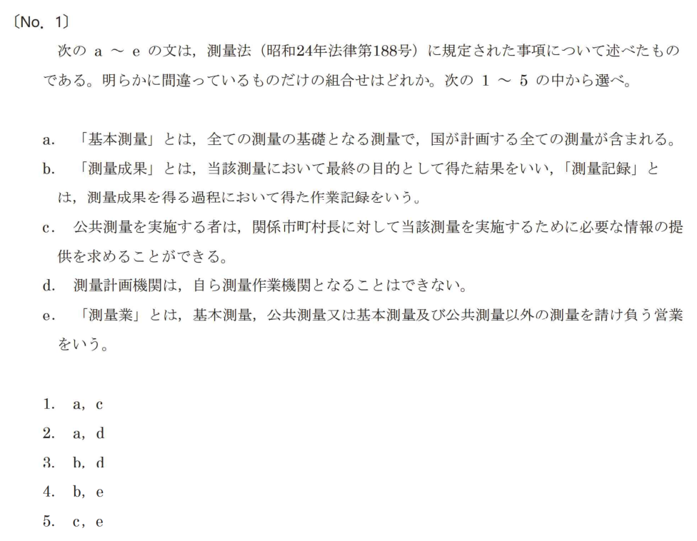
測量法に基づく用語定義と機関の権限を判定する問題。各記述を条文と照合する。
「基本測量」は国土地理院が実施するものに限定される（第4条）。国家機関が計画する測量であっても、国土地理院以外が実施する場合は公共測量等に区分される。「国が計画する全ての測量」を含む、という記述は範囲を広げすぎている。
計画機関は、必要な技術者（測量士・測量士補）を擁していれば、自ら測量作業機関として測量を実施できる（第8条）。両者の役割を兼ねることが法律上禁止されているわけではない。
次の a ～ e の文は，国際地球基準座標系 （以下「ITRF」という。）について述べたもので ある。 明らかに間違っているものだけの組合せはどれか。 次の 1 ～ 5 の中から選べ。
📄 原典の問題ページ（画像）
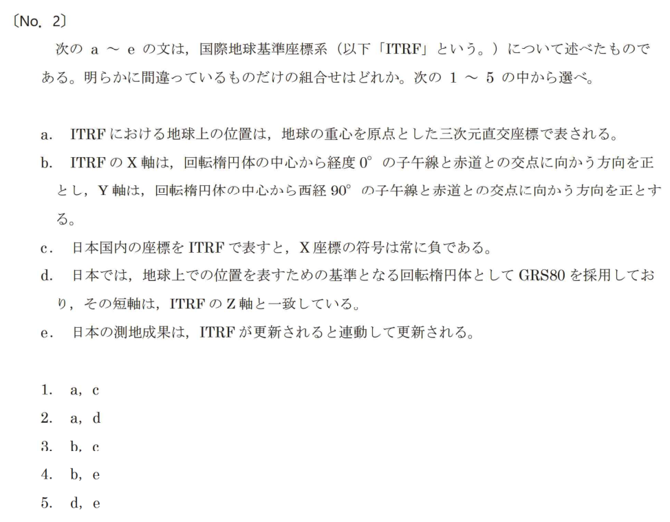
ITRF（国際地球基準座標系）の構造と日本の測地系運用に関する正誤判定問題。ITRFは地球重心を原点に置く右手系の三次元直交座標である。
Y軸の取り方が逆になっている。ITRF は右手系で構成され、X軸（経度0°方向）と Z軸（北極方向）を決めると、Y軸は 東経90°方向に向くことが自動的に決まる。「西経90°」とする記述は誤り。
日本の測地成果は ITRF の改定と自動連動するわけではない。ITRF 更新時には別途法令上の手続きを経て改定される（例：JGD2011 は ITRF2008 を基準として法令で固定）。
次の 1 ～ 5 の文は，公共測量における測量計画機関又は測量作業機関の対応について述べたも のである。明らかに間違っているものはどれか。次の 1 ～ 5 の中から選べ。
📄 原典の問題ページ（画像）
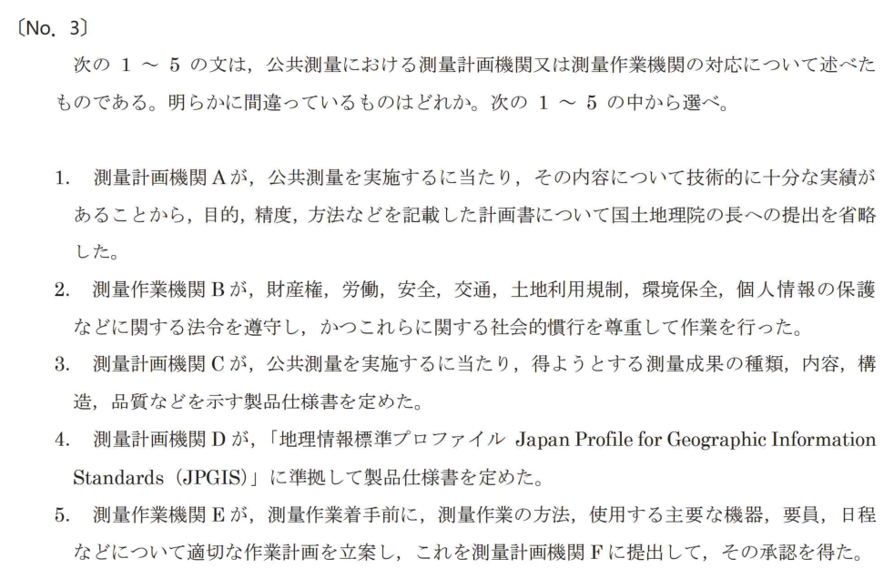
公共測量における計画機関・作業機関の対応について、関係法令・準則に基づく正誤判定問題。
公共測量を実施する計画機関は、技術的実績の有無にかかわらず、目的・精度・方法等を記した計画書を国土地理院長へ事前提出し技術的助言を求めなければならない（測量法 第36条第1項）。実績豊富であれば省略可、という運用は認められていない。
次の ａ ～ e の文は，公共測量における測量作業機関の対応について述べたものである。 そ の 対応として明らかに間違っているものだけの組合せはどれか。 次の 1 ～ 5 の中から選べ。
📄 原典の問題ページ（画像）
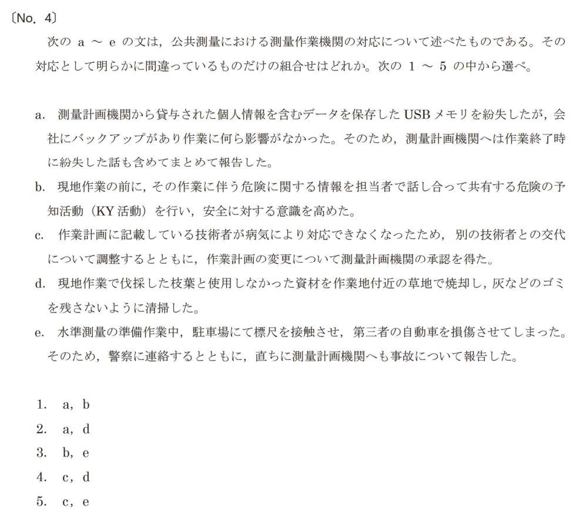
測量作業機関が現場でとった対応の妥当性を判定する問題。条文の細かい数値を問うタイプではなく、「事故や違反が起きたとき、その場でどう動くのが正しいか」という実務判断が問われている。
判断の軸は 2 つある。ひとつは報告のタイミングで、影響の有無を自分で判断して後回しにしてよいか。もうひとつは他の法令に触れていないかで、測量の作業規程だけを見ていると見落とす。
個人情報を含むデータを保存した USB メモリの紛失は、それ自体が個人情報の漏えい事故である。バックアップがあって作業が滞らなかったかどうかは、報告の要否とは関係がない。紛失した媒体が第三者の手に渡れば、そこから情報が流出する危険は残り続けるからである。
測量計画機関から貸与されたデータであれば、二次被害を防ぐ手立て（関係者への周知、必要に応じた本人への連絡など）を打てるのは貸与元である計画機関の側になる。したがって判明した時点で直ちに報告しなければならない。「作業終了時にまとめて報告した」という対応は、対処が遅れるという一点で誤り。
KY 活動（危険予知活動）は、その日の作業に潜む危険を担当者どうしで出し合って共有し、安全意識を高める取り組み。現地作業では交通事故、斜面からの転落、蜂や熊などの生物、熱中症といった危険が伴うため、作業前に実施することは適切である。
作業計画に記載した技術者が対応できなくなった場合、勝手に別の者を充てるのではなく、交代について調整したうえで作業計画の変更を測量計画機関の承認を得るのが正しい手順。作業計画は計画機関の承認を受けて成立しているものなので、記載内容を変えるには承認が要る。記述のとおり。
伐採した枝葉や使用しなかった資材を作業地付近で燃やす行為は、いわゆる野焼きにあたる。廃棄物の処理及び清掃に関する法律により、廃棄物の焼却は原則として禁止されており、基準を満たす焼却設備以外での焼却は認められていない。
「灰などのゴミを残さないように清掃した」と後始末を丁寧にしても、焼却したこと自体が違反なので正当化されない。伐採物や資材は廃棄物として適正に処理する必要がある。測量の作業規程だけを見ていると見落としやすいが、作業機関には関係法令全般の遵守義務がある。
第三者の財物を損傷させた事故なので、警察への連絡は当然として、直ちに測量計画機関へも報告する必要がある。公共測量の実施主体は計画機関であり、第三者への賠償や説明の場面で計画機関が対応を求められるためである。a と正反対に、こちらは「直ちに」報告しており適切。
次の a ～ c の文は，正規分布について述べたものである。 ア ～ エ に入る数値の組 合せとして最も適当なものはどれか。 次の 1 ～ 5 の中から選べ。
📄 原典の問題ページ（画像）
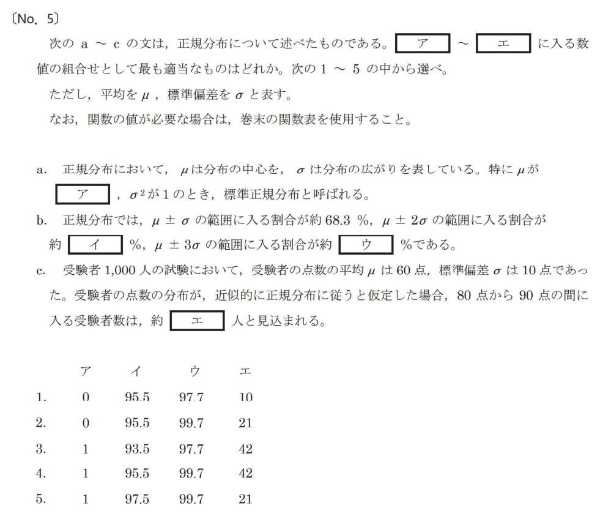
正規分布の基本性質（68-95-99.7 ルール）と標準化（z値）を組み合わせた人数算出問題。
標準正規分布は 平均 μ = 0、分散 σ² = 1（標準偏差 σ = 1）の正規分布のこと。
正規分布では平均から ±σ の範囲に約 68.3%、±2σ の範囲に約 95.5%、±3σ の範囲に約 99.7% のデータが含まれる。
z値（標準化値）= (測定値 − 平均) / 標準偏差 で計算する。
μ = 60、σ = 10 として：
・z₁ = (80 − 60) / 10 = 2 ・z₂ = (90 − 60) / 10 = 3
つまり 80 〜 90 点の範囲は μ + 2σ から μ + 3σ までの区間。
左右対称な分布なので、μ + 2σ ～ μ + 3σ の片側区間に含まれる割合は：
1,000 人 × 2.1% = 21 人
次の 1 ～ 5 の文は，測量法 （昭和 24 年 法律第 188 号） における測量の基準について述べた ものである。明らかに間違っているものはどれか。次の 1 ～ 5 の中から選べ。
📄 原典の問題ページ（画像）
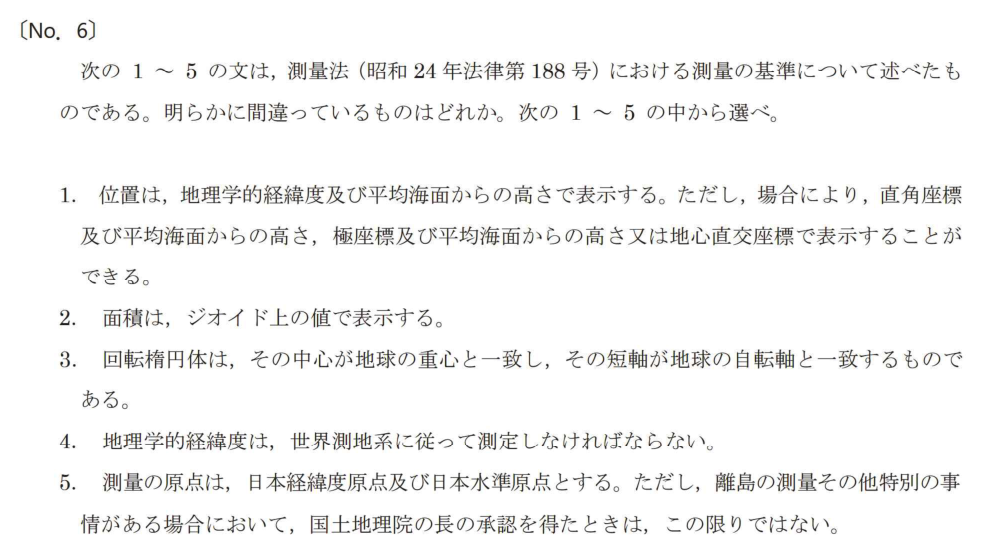
測量法第11条が定める「測量の基準」に関する正誤判定。位置・面積・原点の表現方法を区別する。
面積は回転楕円体表面上の値で表す（第11条2項）。ジオイドは「高さ（標高）」の基準面であり、面積基準にはならない。ジオイド＝高さ／楕円体＝距離・面積、と棲み分けて記憶する。
次の a ～ c の文は，公共測量において実施するトータルステーションを用いた基準点測量に ついて述べたものである。 ア ～ ウ に入る語句の組合せとして最も適当なものはどれ か。 次の 1 ～ 5 の中から選べ。
📄 原典の問題ページ（画像）
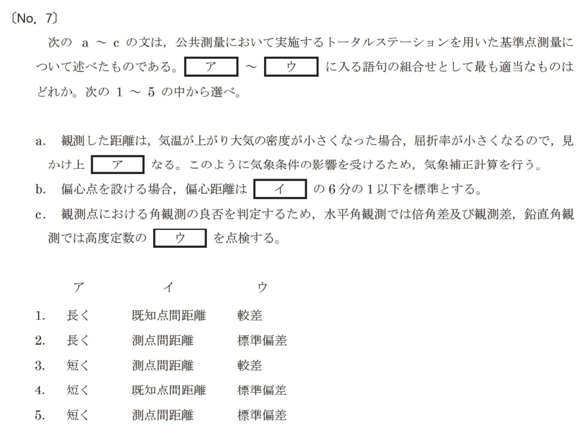
トータルステーション（TS）を用いた基準点測量の距離測定・偏心観測・観測値の点検に関する穴埋め問題。
気温が上昇すると大気密度が下がり、光波の屈折率も小さくなる。屈折率が小さい＝光波速度が速くなるため、同じ往復時間でも実距離は見かけ上短く計測される。これを補正するために気象補正計算を行う。
偏心点を設けて観測する場合、偏心距離は e ≤ S / 6（S：測点間距離）に制限される（1〜4級基準点測量、作業規程の準則）。観測点を見通せない場合に偏心点で代行するが、偏心距離が大きすぎると角度測定誤差が拡大するため。
水平角観測では倍角差・観測差で点検し、鉛直角観測では同じ点を望遠鏡正・反で観測した時の高度定数の較差で点検する（複数測回した時の値のばらつき）。標準偏差ではなく較差で評価するのがポイント。
の観測を行ったところ，表 8 の結果を得た。方向角 T を 290°00′00" としたとき，平面直角座標 系 (平成 14 年国土交通省告示第 9 号) における新点 C の Y 座標の標準偏差は幾らか。最も近いも のを次の 1 ～ 5 の中から選べ。
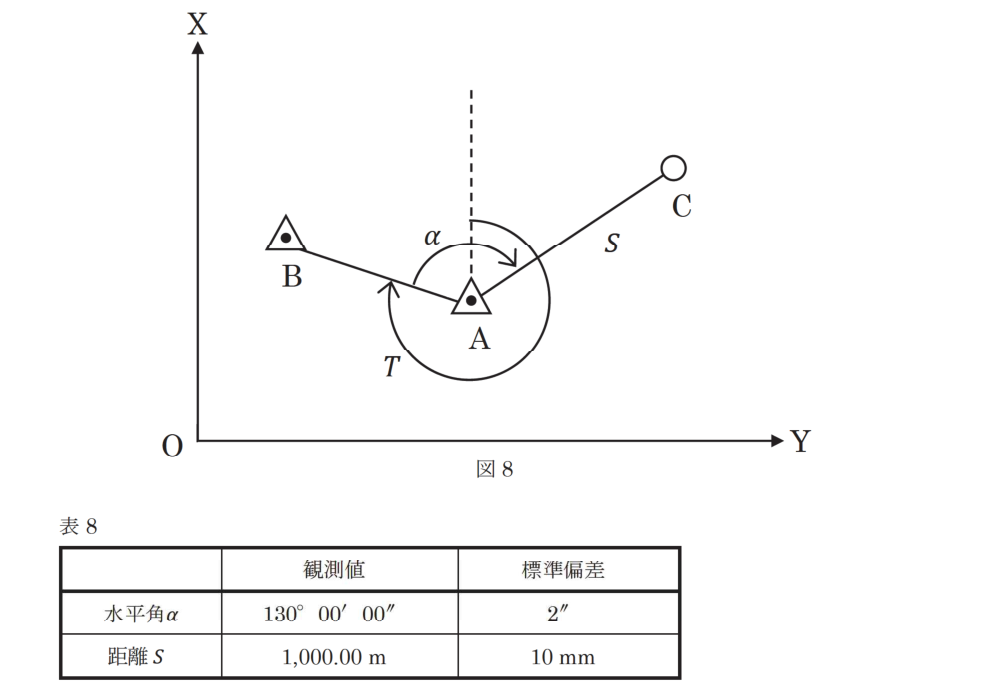
既知点 A から新点 C を放射法で観測したときの、新点 C の Y 座標標準偏差 σ_Y を誤差伝播の法則で求める計算問題。
A から B 方向の方向角 T = 290°00'00"、A 点で測った水平角 α = 130°00'00" なので、A→C 方向の方向角は：
※ 360°を超えるため引き算で正規化。
平面直角座標では X=北、Y=東。A 点を基準に距離 S・方向角 T_AC で C 点座標を表すと：
独立な誤差源（距離 σ_S、角度 σ_α）の合成：
偏微分：
・∂Y/∂S = sin(T_AC) = sin 60° = √3/2 ≒ 0.866
・∂Y/∂α = S · cos(T_AC) = 1000 m × cos 60° = 1000 × 0.5 = 500 m ＝ 500,000 mm/rad
問題指定：1 ラジアン = 2×10⁵ 秒、σ_α = 2"
σ_S = 10 mm、σ_α = 10⁻⁵ rad、距離成分を mm で揃える：
・距離項：(0.866 × 10 mm)² = 75 mm²
・角度項：(500,000 mm × 10⁻⁵ rad)² = (5 mm)² = 25 mm²
※ 暗記ポイント：「方向角の和 − 360°（360°超過時）」「距離項²＋角度項² を平方根」。角度は必ず rad 換算。
次の 1 ～ 5 の文は，準天頂衛星などについて述べたものである。 明らかに間違っているもの はどれか。 次の 1 ～ 5 の中から選べ。
📄 原典の問題ページ（画像）
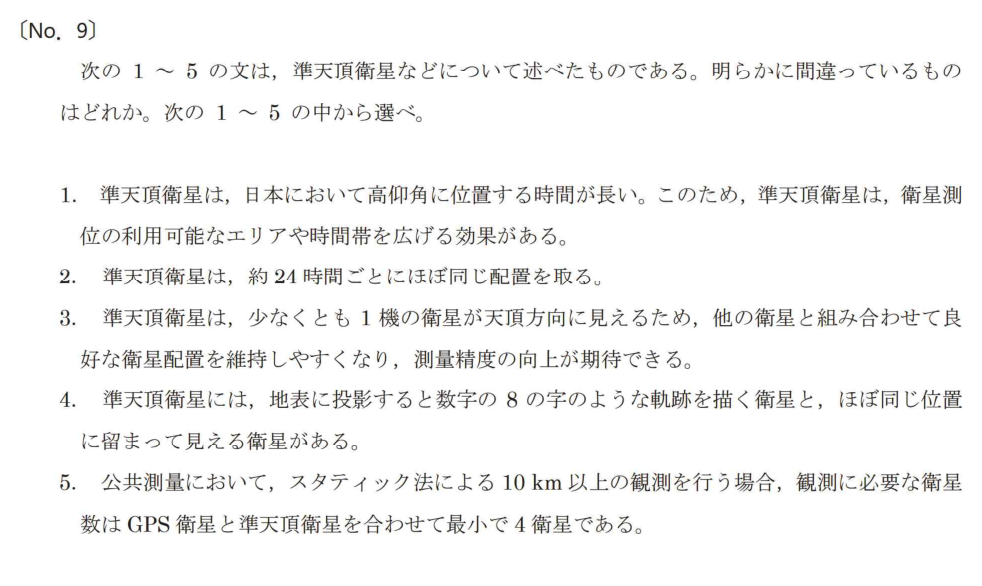
準天頂衛星システム（QZSS、愛称「みちびき」）に関する正誤判定。日本の上空を長時間カバーする補完衛星システムである。
スタティック法で基線長 10 km 以上を観測する場合は 5 衛星以上（GPS + 準天頂のみ）または 6 衛星以上（GLONASS 併用時）が必要（作業規程の準則）。「4 衛星」が成立するのは 10 km 未満のとき。
次の 1 ～ 5 の文は，公共測量における GNSS 測量機を用いた基準点測量について述べたもの である。 明らかに間違っているものはどれか。 次の 1 ～ 5 の中から選べ。
📄 原典の問題ページ（画像）
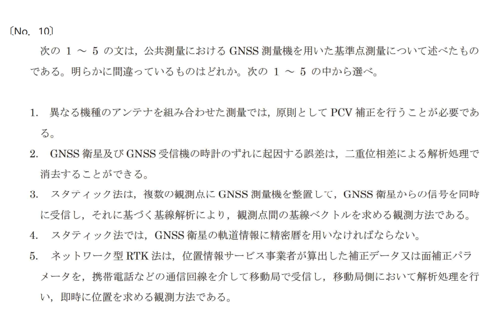
GNSS 測量の 誤差消去の原理・軌道情報の使い分け・各観測方法の定義 を横断的に問う正誤判定。選択肢はいずれも作業規程の準則および「GNSS測量による基準点測量作業マニュアル」の基本事項からの出題で、1つずつ根拠を確認していく。
PCV（Phase Center Variation ＝ アンテナ位相特性）とは、GNSS アンテナの「電気的な位相中心」が、電波の到来方向（仰角・方位角）によってわずかに移動する性質のこと。位相中心はアンテナの物理的な中心とは一致せず、そのずれ方はアンテナの機種ごとに固有の癖を持つ。
同一機種どうしを組み合わせた場合、両端のアンテナに同じ癖が現れるため、基線ベクトル（２点の差）を求める段階で誤差の大部分が相殺される。ところが異機種を混在させると癖が食い違うため相殺されず、とくに高さ方向に系統的な誤差として残ってしまう。このため異機種のアンテナを組み合わせる場合は、原則として PCV 補正を行う必要がある。記述のとおりで正しい。
GNSS の相対測位が高精度を実現できる中心的な仕組みが、この位相差の階層的な差分である。
・一重位相差（2 台の受信機で同一衛星を観測した差）… 衛星の時計誤差が消去される
・二重位相差（一重位相差どうしの差＝2 受信機 × 2 衛星）… さらに受信機の時計誤差が消去される
つまり衛星・受信機の両方の時計のずれが二重位相差の段階で取り除かれる。記述のとおりで正しい。なお、二重位相差をさらに時刻方向で差分した三重位相差は、サイクルスリップ（位相の不連続）の検出に用いられる。
スタティック法の定義そのままの記述。複数の観測点に GNSS 測量機を同時に整置し、一定時間にわたって同じ衛星群からの信号を受信して、その観測データを基線解析にかけ、観測点間の基線ベクトル（三次元の位置の差）を求める。観測時間を長く確保できるため精度が高く、1〜4 級基準点測量の基本となる観測方法である。
基線解析に用いる衛星の軌道情報は、放送暦（ブロードキャストエフェメリス）を標準とする。放送暦は衛星が航法メッセージとして常時送信している軌道情報で、精度は数 m 程度と決して高くない。しかし相対測位では、基線の両端の受信機に同じ軌道誤差が共通して効くため、差をとる段階でその大部分が相殺される。基線長が短いほどこの相殺は効き、実用上は放送暦で十分な精度が得られる。
一方の精密暦（IGS 等が観測後に提供する数 cm 精度の軌道情報）は、長い基線を扱う場合や、とくに高い精度が求められる場合に用いる選択肢であって、スタティック法なら常に使わなければならない、というものではない。したがって「用いなければならない」と断定するこの記述が誤り。
なお、測量士試験では「必ず」「〜しなければならない」と言い切る選択肢が誤りである頻度が高い。本問はその典型例といえる。
ネットワーク型 RTK 法の定義どおりの記述。電子基準点網の観測データをもとに位置情報サービス事業者が算出した補正データ、または面補正パラメータ（FKP）を、携帯電話などの通信回線を通じて移動局が受信する。移動局側で解析処理を行い、その場で即時に位置を求める。従来の RTK 法と違って自前の固定局を設置する必要がない点が大きな利点である。
新点 A ～ E において，GNSS 測量機を用いた基準点測量を行い，新点 A から各新点までの距離 及びそれぞれの楕円体高を表 11 のとおり得た。新点 A の標高を 50.00 ｍとしたとき，新点 A ～ E のうち最も標高が高い点はどれか。 次の 1 ～ 5 の中から選べ。
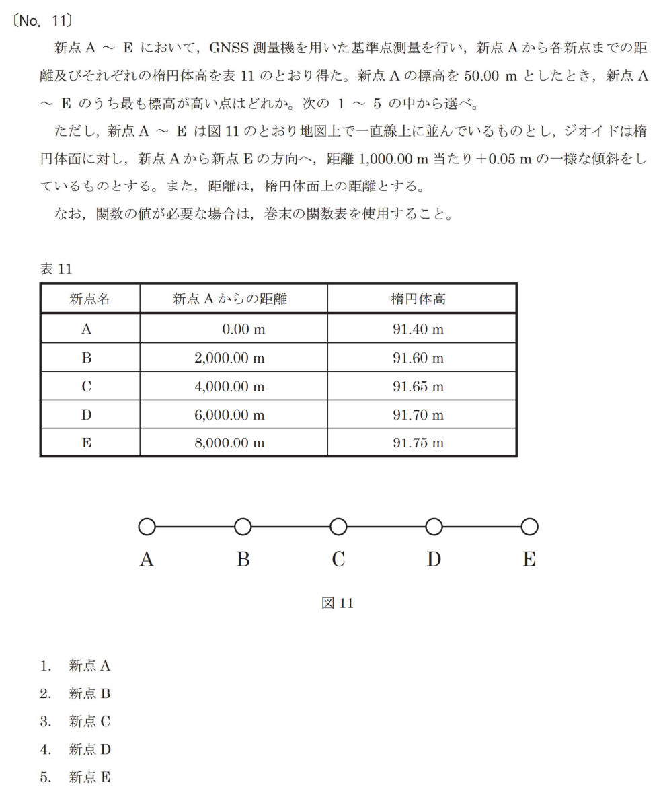
GNSS 基準点測量で得られた楕円体高から、ジオイドの傾斜を考慮して標高を求め、最も標高の高い点を選ぶ問題。
新点 A の標高が 50.00 m、楕円体高が 91.40 m なので、ジオイド高 N_A = 91.40 − 50.00 = 41.40 m
各点の A からの距離をもとに：
・N_A = 41.40 m（距離 0 m）
・N_B = 41.40 + 0.05 × 2 = 41.50 m（距離 2,000 m）
・N_C = 41.40 + 0.05 × 4 = 41.60 m（距離 4,000 m）
・N_D = 41.40 + 0.05 × 6 = 41.70 m（距離 6,000 m）
・N_E = 41.40 + 0.05 × 8 = 41.80 m（距離 8,000 m）
・h_A = 91.40 − 41.40 = 50.00 m
・h_B = 91.60 − 41.50 = 50.10 m ← 最高
・h_C = 91.65 − 41.60 = 50.05 m
・h_D = 91.70 − 41.70 = 50.00 m
・h_E = 91.75 − 41.80 = 49.95 m
次の a ～ e の文は，公共測量における水準測量について述べたものである。明らかに間違っ ているものだけの組合せはどれか。 次の 1 ～ 5 の中から選べ。
📄 原典の問題ページ（画像）
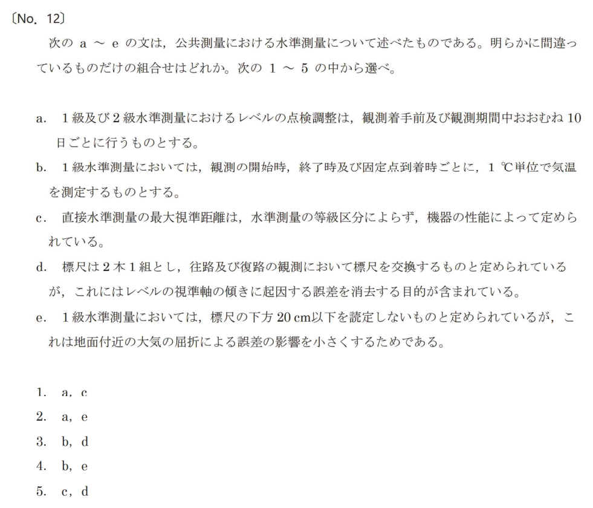
公共測量の水準測量に関する正誤判定。a〜e の各記述について、作業規程の準則・標準的な誤差処理の知識と照合する。
直接水準測量の最大視準距離は等級ごとに定められている（例：1 級 50 m、2 級 60 m、3 級 70 m）。機器性能で自動的に決まる、というのは事実と異なる。等級別に標準値が規定されているため誤り。
標尺 2 本 1 組での往復・標尺交換の目的は、標尺の零点誤差（標尺定数の誤差）を打ち消すこと。レベルの視準軸の傾きに起因する誤差を消去するのは、前視・後視の距離を等しくする方法であり、標尺交換の役割ではない。説明する誤差の種類が異なる。
図 13 に模式的に示すように，水準点 A ～ D において，公共測量における 2 級水準測量を実施 し，表 13 の観測結果を得た。環閉合差の許容範囲を 5mm√S （S は観測距離，km 単位）としたとき， 再測すべき路線として最も適当なものはどれか。 次の 1 ～ 5 の中から選べ。
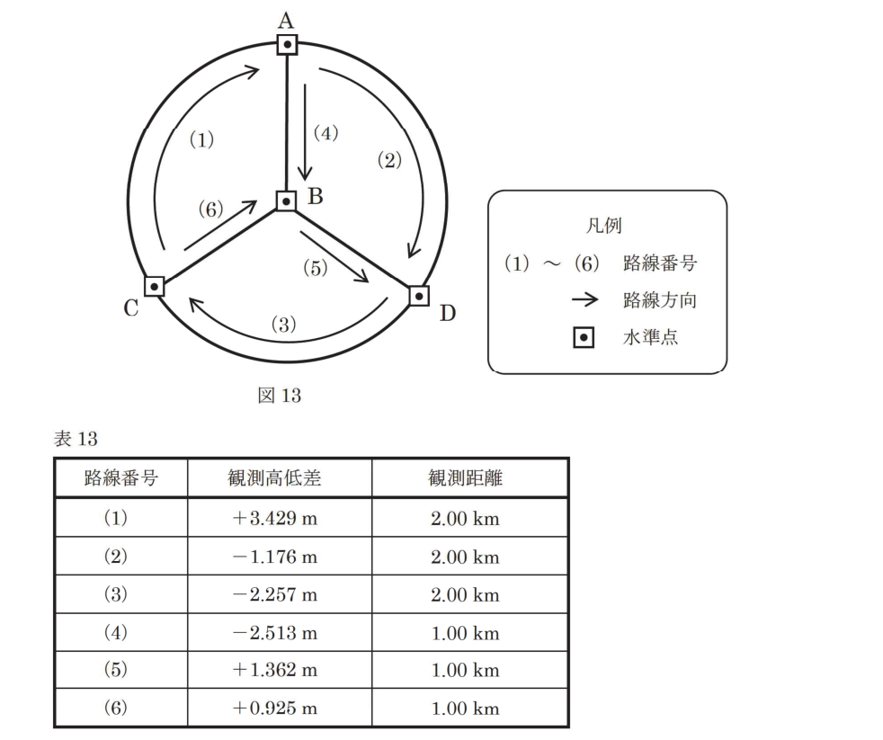
6 つの路線からなる水準網で、閉合差が許容範囲を超えた環を洗い出し、それらに共通して含まれる路線を再測対象として特定する問題。
考え方の芯はこうである。ある 1 本の路線に誤差があると、その路線を通る環はすべて閉合差が悪化する。逆に、その路線を通らない環は正常なままである。したがって「超過した環すべてに共通し、正常な環には含まれない路線」が犯人だと絞り込める。
図 13 の矢印が観測の向きを表している。環を一周するとき、矢印と逆向きに進む路線は符号を反転させて足す必要があるので、ここを最初に押さえる。
(4) A→B −2.513 m / 1.00 km (5) B→D ＋1.362 m / 1.00 km (6) C→B ＋0.925 m / 1.00 km
B が中心にあり、A・C・D が外周に並ぶ形なので、三角環が 3 つと外周の環が 1 つ、計 4 つの環がとれる。
環 ABC［(1)(4)(6)］C→A→B→C と一周する。B→C は (6) と逆向きなので符号を反転。
閉合差 ＝ ＋3.429 −2.513 −0.925 ＝ −0.009 m ＝ −9 mm ／ S ＝ 2.00＋1.00＋1.00 ＝ 4.00 km、許容 ＝ 5√4 ＝ 10 mm → 範囲内
環 ABD［(4)(5)(2)］A→B→D→A と一周する。D→A は (2) と逆向きなので符号を反転。
閉合差 ＝ −2.513 ＋1.362 ＋1.176 ＝ ＋0.025 m ＝ ＋25 mm ／ S ＝ 1.00＋1.00＋2.00 ＝ 4.00 km、許容 ＝ 10 mm → 許容超過
環 BCD［(6)(5)(3)］C→B→D→C と一周する。
閉合差 ＝ ＋0.925 ＋1.362 −2.257 ＝ ＋0.030 m ＝ ＋30 mm ／ S ＝ 1.00＋1.00＋2.00 ＝ 4.00 km、許容 ＝ 10 mm → 許容超過
外周環［(1)(2)(3)］C→A→D→C と一周する。
閉合差 ＝ ＋3.429 −1.176 −2.257 ＝ −0.004 m ＝ −4 mm ／ S ＝ 2.00×3 ＝ 6.00 km、許容 ＝ 5√6 ≒ 12.2 mm → 範囲内
許容を超えたのは 環 ABD［(4)(5)(2)］と 環 BCD［(6)(5)(3)］の 2 つ。この 2 つに共通して含まれる路線は (5) だけである。
裏づけとして、範囲内だった環 ABC［(1)(4)(6)］と外周環［(1)(2)(3)］は、いずれも (5) を含んでいない。「(5) を通る環はすべて超過し、通らない環はすべて正常」という形になっており、(5) に誤差があると考えて矛盾がない。
次の 1 ～ 5 の文は，公共測量における地形測量のうち，現地測量について述べたものである。 明らかに間違っているものはどれか。 次の 1 ～ 5 の中から選べ。
📄 原典の問題ページ（画像）
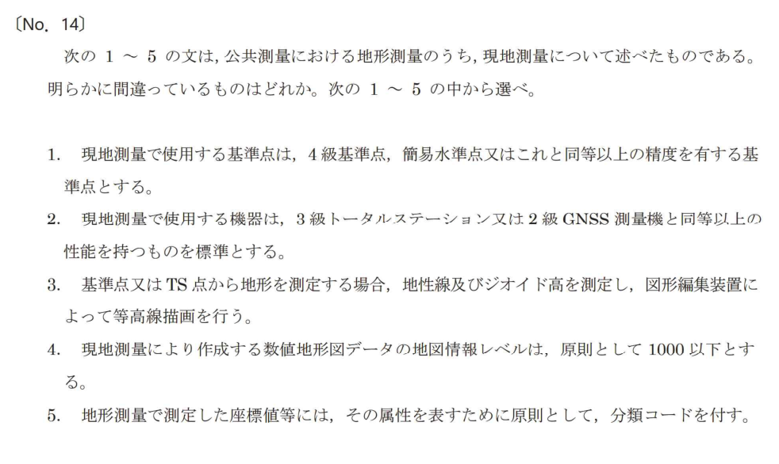
現地測量（TS や GNSS を使って現地で直接、地形・地物を測る作業）の基準に関する正誤判定。
見分けの鍵は「現地で実際に測れるものは何か」という一点。現場で得られるのは位置（座標）と高さであって、地球の重力分布に由来する量を巻尺やレーザで測ることはできない。この視点で選択肢を読むと、ひとつだけ性質の違うものが混ざっているのが分かる。
現地測量で使用する基準点は、4 級基準点、簡易水準点又はこれと同等以上の精度を有する基準点とする。現地測量は地形図を作るための細部測量なので、基準点測量ほど高い等級は要求されない。記述のとおり。
使用する機器は 3 級トータルステーション又は 2 級 GNSS 測量機と同等以上の性能を持つものを標準とする。こちらも「細部を測るのに見合った性能」という考え方で、最上位の機器までは求められない。記述のとおり。
現地で測定するのは地性線（尾根線・谷線など地形の骨格をなす線）と標高であって、ジオイド高ではない。
ジオイド高とは、回転楕円体面からジオイド面（平均海面を陸地内部まで延長した面）までの隔たりのことで、地球の重力分布によって決まる量である。現地に立ってトータルステーションや標尺で測れるようなものではなく、国土地理院が提供するジオイド・モデルから内挿して与えるものだ。
そもそもジオイド高が必要になるのは、GNSS で得た楕円体高を標高に換算する場面（標高＝楕円体高−ジオイド高）であって、等高線を描くために現地で測る量ではない。「地性線及びジオイド高を測定し」とするこの記述が誤り。
現地測量で作成する数値地形図データの地図情報レベルは、原則として 1000 以下とする。レベル 250・500・1000 が主な対象で、数字が小さいほど詳細な地図を意味する。記述のとおり。
測定した座標値等には、その地物が何であるか（建物・道路・水部など）を示すため、原則として分類コードを付す。座標だけでは点の集まりにすぎず、分類コードがあって初めて地図として編集・表示できる。記述のとおり。
次の 1 ～ 5 の文は，公共測量における地形測量のうち， GNSS 測量機を用いた現地測量につ いて述べたものである。 明らかに間違っているものはどれか。 次の 1 ～ 5 の中から選べ。
📄 原典の問題ページ（画像）
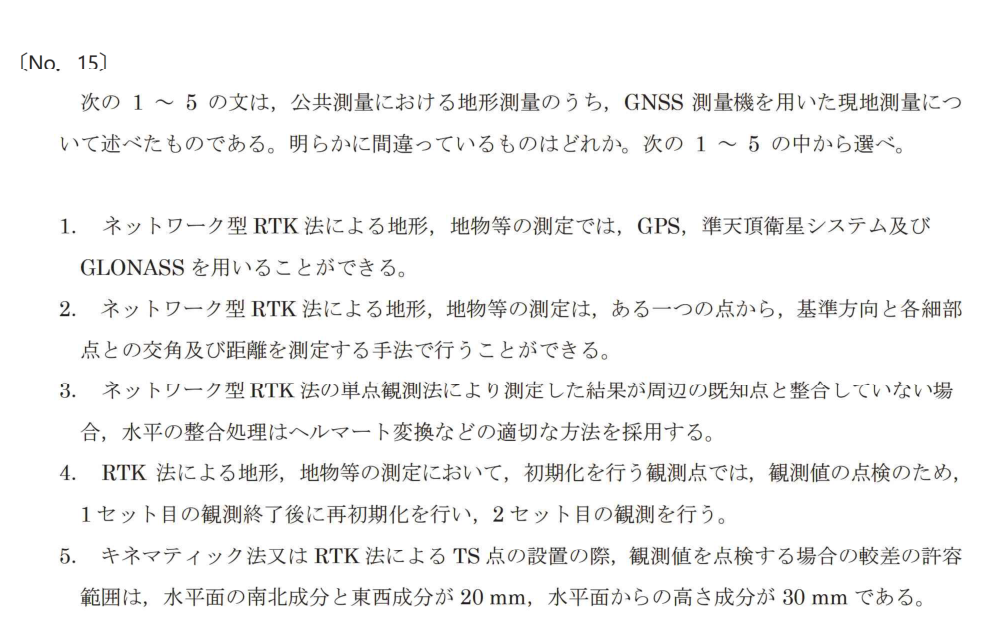
GNSS 測量機を用いた現地測量に関する正誤判定。
本問の急所は、GNSS と TS では位置の決め方が根本的に違うという点にある。TS は既知点に据えて「基準となる方向からの角度」と「距離」を測り、そこから計算で座標を出す（放射法）。これに対し GNSS は衛星からの電波によって観測点そのものの座標を直接求める。角度を測る機能も、基準方向を視準する機能も持っていない。この違いを踏まえて選択肢を読む。
ネットワーク型 RTK 法による地形・地物等の測定では、GPS・準天頂衛星システム・GLONASS を用いることができる。複数の測位システムを組み合わせれば使用できる衛星数が増え、上空が開けにくい場所でも観測できる時間帯が広がる。記述のとおり。
「ある一つの点から、基準方向と各細部点の交角及び距離を測定する手法」とは、まさにトータルステーションによる放射法の説明である。GNSS にはこの測り方はできない。
GNSS 測量機が求めるのは、その点に整置したアンテナ自身の三次元座標である。細部点を測るなら、その細部点ごとに測量機を据えて座標を得るのであって、どこか一点に構えて周囲を見回しながら角度と距離を測っていくわけではない。そもそも見通し（視通）が不要なのが GNSS の利点であり、視通を前提とする放射法とは発想が正反対といえる。
したがって、ネットワーク型 RTK 法の測定方法としてこの記述は誤り。
ネットワーク型 RTK 法の単点観測法で得た結果が周辺の既知点と整合しない場合、水平方向の整合処理にはヘルマート変換などの適切な方法を用いる。ヘルマート変換は、平行移動・回転・拡大縮小を組み合わせて座標系全体をずらす手法で、既知点との系統的なずれを補正するのに適している。記述のとおり。
RTK 法では、観測を始める前に初期化（整数値バイアスの決定）が必要になる。この初期化が誤った値で固定されると、以後の観測がまとめて狂う。そこで 1 セット目が終わったらあえて再初期化してから 2 セット目を行い、両者が一致するかで初期化の正しさを点検する。記述のとおり。
キネマティック法・RTK 法による TS 点設置での較差の許容範囲は、水平（南北・東西成分）20 mm、高さ成分 30 mm。GNSS は衛星が空の上方にしか存在しないため、高さ方向は水平方向より幾何学的に不利で精度が落ちる。その分、許容値も大きく設定されている。記述のとおり。
次の 1 ～ 5 の文は，公共測量における地上レーザ測量について述べたものである。明らかに 間違っているものはどれか。 次の 1 ～ 5 の中から選べ。
📄 原典の問題ページ（画像）
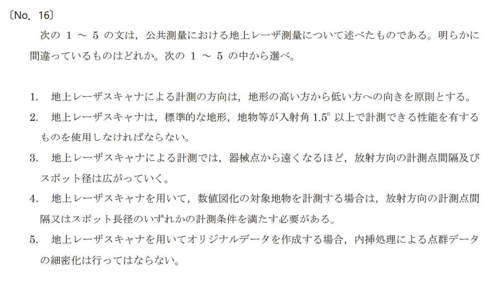
地上レーザスキャナを用いた測量の手順・基準に関する正誤判定。
地上レーザスキャナによる計測方向は、低い方から高い方（仰角方向）を見上げて計測するのが原則。高所から見下ろすと手前の地形・地物が死角となり、奥側のデータ欠損が発生するため。問題文と逆になっている。
UAV 写真点群測量においてデジタルカメラを鉛直下に向けた写真撮影を行うに当たり，標高が 20ｍから 40ｍまでの土地を撮影範囲全体にわたって同一コース内の隣接写真間の重複度が最小で 80％となるように計画した。撮影基準面の標高を 20ｍとするとき，撮影基準面における同一コース 内の隣接写真間の重複度は何％となるか。最も近いものを次の 1 ～ 5 の中から選べ。
📄 原典の問題ページ（画像）
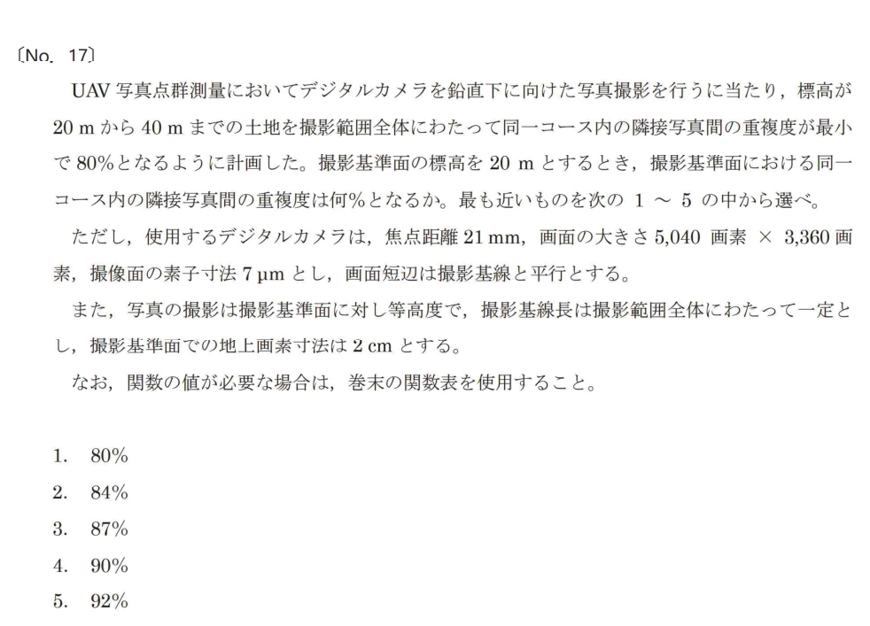
UAV 写真点群測量における重複度の計算問題。等高度で飛行しているのに地面の標高が場所によって違う、という状況をどう扱うかが問われている。
まず全体の見通しを立てておく。カメラは同じ高さを飛ぶので、地面が高い場所ほどカメラに近い。カメラに近いほど 1 枚の写真が写しとる範囲は狭くなる。撮影基線長（隣り合う撮影地点の間隔）は一定なので、写る範囲が狭い場所ほど隣の写真と重なる割合＝重複度は小さくなる。
したがって重複度が最小になるのは最も標高の高い地点（標高 40 m）であり、そこが 80％ になるように計画したことになる。ここから逆算して基線長を求め、撮影基準面（標高 20 m）での重複度を出す、という流れになる。
地上画素寸法（GSD）と素子寸法・焦点距離・対地高度の関係は次のとおり。
撮影基準面での地上画素寸法が 2 cm ＝ 0.02 m、素子寸法 7 μm ＝ 7×10⁻⁶ m、焦点距離 21 mm ＝ 0.021 m だから、
撮影基準面の標高が 20 m なので、カメラの標高は 20 ＋ 60 ＝ 80 m となる。以降はこの 80 m を基準に、各地点の対地高度を出していく。
「画面短辺は撮影基線と平行」という条件があるので、重複度に効くのは短辺 3,360 画素のほう。長辺 5,040 画素は使わない（ここで長辺を使うのが典型的な誤答）。
この地点の対地高度は 80 − 40 ＝ 40 m。撮影範囲は対地高度に比例するので、基準面での 67.2 m を高度比で縮めればよい。
標高 40 m の地点で重複度が 80％ということは、隣の写真と重ならない部分が 20％ということ。この重ならない幅がそのまま撮影基線長になる。
基線長は撮影範囲全体にわたって一定（8.96 m）。撮影基準面での撮影範囲は ② の 67.2 m なので、
最も近い値は 87 ％。
次の 1 ～ 5 の文は，人工衛星からのリモートセンシングについて述べたものである。 明らか に間違っているものはどれか。 次の 1 ～ 5 の中から選べ。
📄 原典の問題ページ（画像）
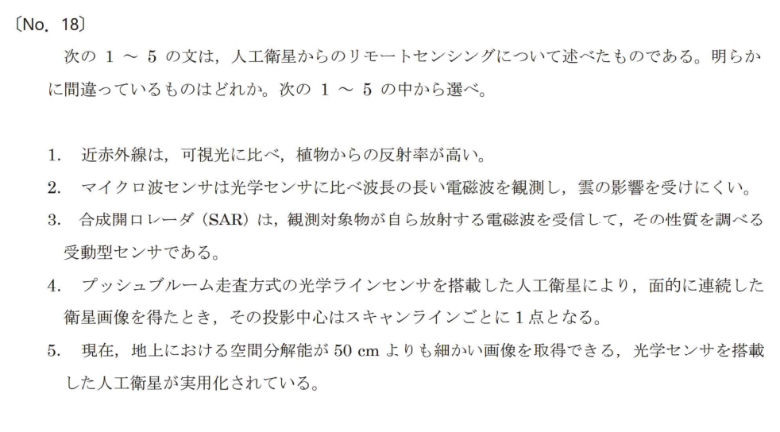
人工衛星によるリモートセンシングの基本原理に関する正誤判定。各選択肢の技術的説明を確認する。
合成開口レーダ（SAR）は、自らマイクロ波を発射し、その反射を受信する「能動型（アクティブ）センサ」。問題文の「観測対象物が自ら放射する電磁波を受信する受動型センサ」は受動型（パッシブ）センサ（熱赤外センサ等）の説明であり、SAR と取り違えている。これが誤り。
次の 1 ～ 5 の文は，公共測量における UAV を用いた測量について述べたものである。明らかに 間違っているものはどれか。 次の 1 ～ 5 の中から選べ。
📄 原典の問題ページ（画像）
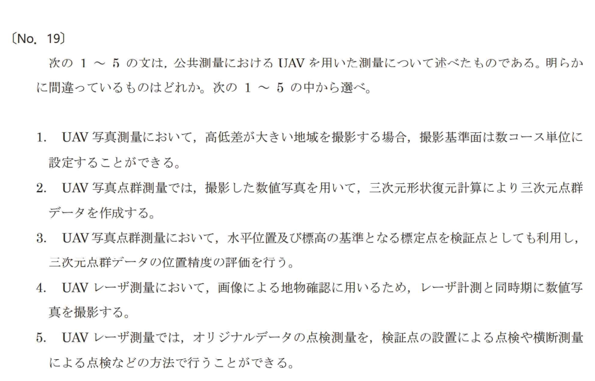
UAV を用いた測量（写真点群測量・レーザ測量）の運用基準に関する正誤判定。
本問の要は標定点と検証点の役割の違いにある。標定点は三次元形状復元計算に入力として使う点で、検証点はその計算結果が正しいかを外から確かめる点である。役割が正反対なので、この 2 つを兼ねてよいかどうかで判断できる。
高低差の大きい地域では、全域を単一の撮影基準面で扱うと対地高度が場所によって大きく変わり、地上画素寸法が揃わなくなる。そこで撮影基準面を数コース単位で設定することが認められている。記述のとおり。
UAV 写真点群測量は、重複させて撮影した多数の数値写真から、三次元形状復元計算（SfM）によって点群を作る手法。写真の外部標定要素と特徴点の三次元座標を同時に求めることで、地形・地物の形状を復元する。記述のとおり。
標定点と検証点を兼ねることはできない。
標定点は三次元形状復元計算に入力として与えられる点なので、計算結果は当然その標定点によく合うように出てくる。その点で精度を測っても「入力どおりに計算できました」という当たり前の結果しか得られず、精度の評価にならない。学校の試験にたとえるなら、試験問題を事前に教えたうえで採点するようなものである。
だからこそ検証点は、計算に一切使わない独立した点として、標定点からできるだけ離れた位置に配置する。その点で実測値と計算値を比べて初めて、第三者的な精度評価が成立する。「標定点を検証点としても利用し」とするこの記述が誤り。
UAV レーザ測量で得られるのは点群であって、そのままでは「この点の集まりが何なのか」が判別しにくい。そこでレーザ計測と同時期に数値写真を撮影しておき、画像と照らし合わせて地物を確認する。時期がずれると現地の状況が変わってしまうため「同時期」であることが重要。記述のとおり。
UAV レーザ測量のオリジナルデータの点検測量は、検証点の設置による点検や横断測量による点検などの方法で行うことができる。前者は点で、後者は線（断面）で照合する方法で、いずれも独立した実測との比較という点は共通している。記述のとおり。
次のａ ～ e の文は，公共測量における三次元点群データ作成について述べたものである。明 らかに間違っているものだけの組合せはどれか。 次の 1 ～ 5 の中から選べ。
📄 原典の問題ページ（画像）
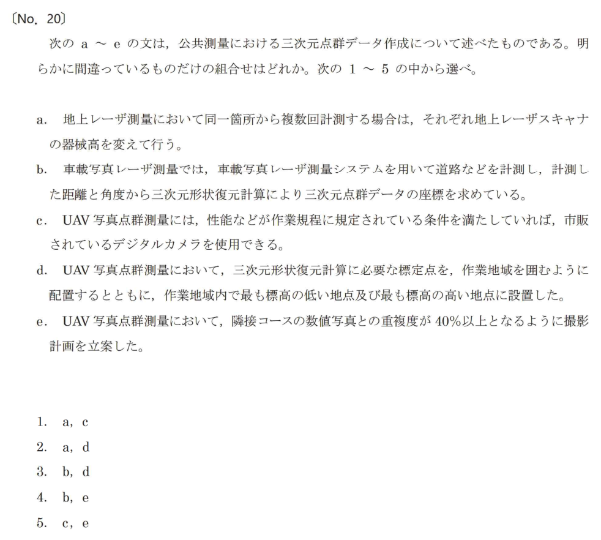
公共測量における三次元点群データ作成に関する正誤判定。地上レーザ・車載写真レーザ・UAV 写真点群の各手法の特徴を整理する。
車載写真レーザ測量で 3D 座標を決定するのは、レーザの距離測定値と、GNSS/IMU による車両の位置・姿勢情報を組み合わせて計算する方式。「距離と角度から三次元復元」だけでは車両の動きが反映されないため誤り。
UAV 写真点群測量で、隣接コース間（サイドラップ）の重複度は 60% 以上が標準。40% 以上ではコース間結合に必要な視差が不足し、SfM 解析が成立しにくい。
図 21 は，国土地理院の電子地形図 25000 の一部（縮尺を変更，一部を改変） である。次のペー ジの a ～ e の文は，この図に表現されている内容について述べたものである。明らかに間違って いるものだけの組合せはどれか。 次のページの 1 ～ 5 の中から選べ。
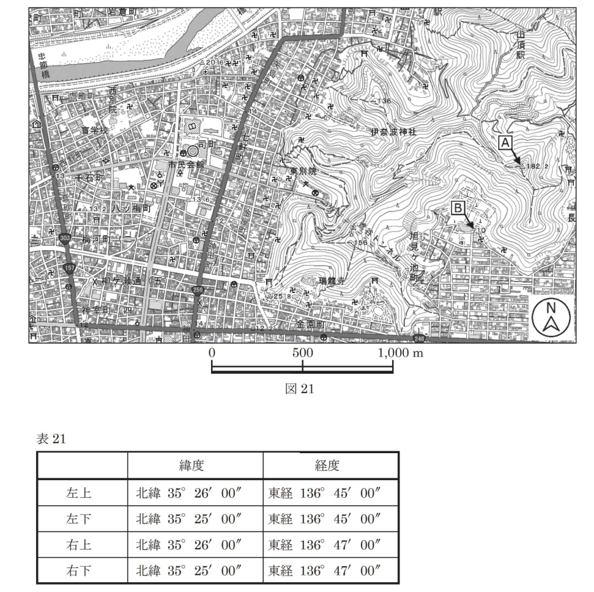
地形図を読み取って各記述の正誤を判定する問題。地図上で実際に測って確かめる必要があるので、まず読み取りの道具を 3 つ揃えてから各記述にあたる。
② 高さ 主曲線は 10 m ごと、計曲線（太線）は 50 m ごと
③ 傾斜 tan 10° ≒ 0.176（高低差 ÷ 水平距離 がこれを超えれば 10° より急）
裁判所より南にある三角点を図から拾い出し、そのうち最も離れた 2 点間を定規で測る。図上の長さに 250 を掛ければ実距離が出る（cm 単位のとき）。およそ 1,140 m になり、記述と整合する。
傾斜角は tan θ ＝ 高低差 ÷ 水平距離 で求める。まず病院の北にある三角点の標高を図から読み、山頂駅の 286.6 m との差をとって高低差を出す。次に 2 点間を定規で測って 250 倍し、水平距離を出す。
両者の比を tan 10° ≒ 0.176 と比べると、この比は 0.176 を下回る。つまり傾斜角は 10° より小さい。「10° より大きい」とする記述は誤り。
なお、山頂へ向かう区間なので直感的には急に感じるが、水平距離が 1 km 前後あるため、標高差 200 m 程度では 10° に届かない。高低差だけを見て判断しないことが肝心である。
経緯度は、図郭の四隅に与えられた経緯度の値をもとに比例配分して求める。左（西）端と右（東）端の経度差を図の横幅で割り、税務署までの図上距離に応じて按分する。緯度も同様に上下端から按分する。計算すると記述の値付近になる。
斜距離は三平方の定理で √(水平距離² ＋ 標高差²) となる。地点 A（三角点）と地点 B（標高点）の標高を図から読んで差をとり、図上で測った距離を 250 倍した水平距離と組み合わせて計算すると 450 m を超える。
ここで注意したいのは、斜距離は必ず水平距離より長いという点。水平距離だけで 450 m を超えていれば、標高差を調べるまでもなく正しいと判定できる。
石段の始点と終点の標高差は、石段が横切る等高線の本数を数えるのが確実である。主曲線 1 本ごとに 10 m、太い計曲線 1 本ごとに 50 m と数えていく。
山頂駅側の標高が 286.6 m と与えられているので、始点側の標高を等高線から読めば差が出る。数えると標高差は 100 m を超える。「100 m より小さい」とする記述は誤り。
次のａ ～ e の文は，地図投影について述べたものである。明らかに間違っているものを全て 含み，正しいものを含まない組合せはどれか。 次の1 ～ 5の中から選べ。
📄 原典の問題ページ（画像）
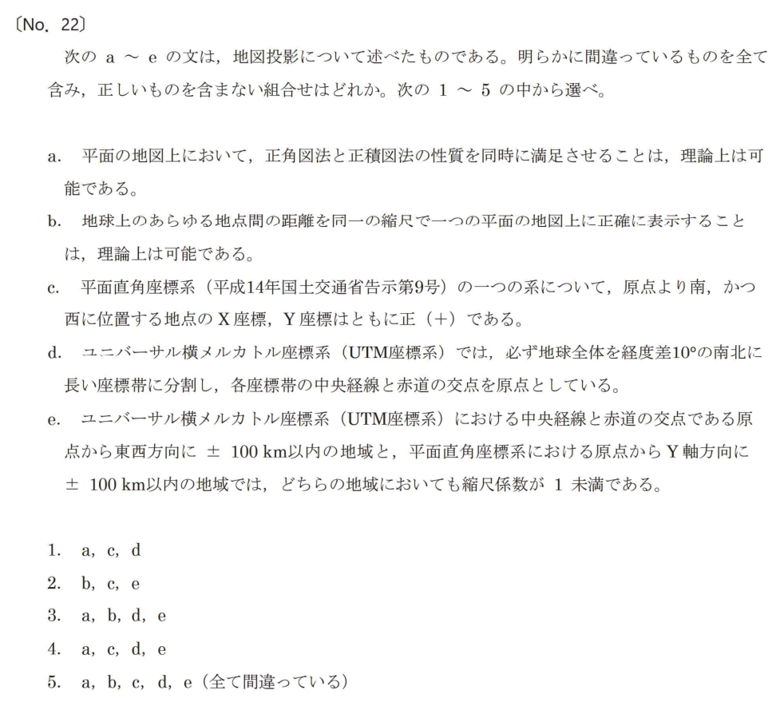
地図投影法（正角・正積・正距の関係、平面直角座標系、UTM座標系）に関する正誤判定。a〜eの全選択肢を検証する。
「正角」と「正積」を同時に満たす平面地図投影は理論上存在しない。
理由はこうである。正角とは各点で角度が正しく保たれること、言いかえれば局所的に形が相似になることを意味する。相似ということは、その点のまわりで縦も横も同じ比率で伸縮しているということである。そこへ正積（面積が正しい）という条件を重ねると、面積比が 1 になるためには伸縮率そのものが 1 でなければならない。つまり両方を同時に満たす写像は、局所的に長さまで保つ等長写像ということになる。
ところが等長写像はガウス曲率を変えない（ガウスの驚異の定理）。球面のガウス曲率は正、平面は 0 で一致しないため、球面を平面へ等長に写すことはできない。したがって正角と正積は、地球全体はもちろん、どんなに小さな領域をとっても両立しない。
地球（球面）上の全地点間の距離を、単一縮尺で一つの平面地図に正確に表示することは理論上不可能。正距図法でも、特定の点や特定方向に限り距離が正しく保たれるだけ。
日本の平面直角座標系では X軸が北方向、Y軸が東方向を正とする（平成14年国土交通省告示第9号）。原点より南かつ西に位置する地点では、X座標（南北方向）も Y座標（東西方向）も ともに負になる。「ともに正」は誤り。
UTM 座標系の経度幅は 6°ごとのゾーン分割（全60ゾーン）が正しい。「10°ごと」は誤り。
縮尺係数の比較：
・UTM 座標系：中央経線で縮尺係数 = 0.9996（<1）、中央経線から東西約 180 km離れた地点で 1 になる。
・平面直角座標系：X軸上で縮尺係数 = 0.9999（<1）、X軸から東西約 90 km離れた地点で 1 になる。
「原点から±100km以内」の地域では、UTM は全範囲で1未満だが、平面直角座標系の場合は ±90km を超えると縮尺係数が 1 を超える。よって「どちらも縮尺係数が 1 未満」は誤り。
次の 1 ～ 5 の文は，防災分野における GIS 及び地理空間情報の活用方法について述べたもの である。明らかに間違っているものはどれか。次の 1 ～ 5 の中から選べ。
📄 原典の問題ページ（画像）
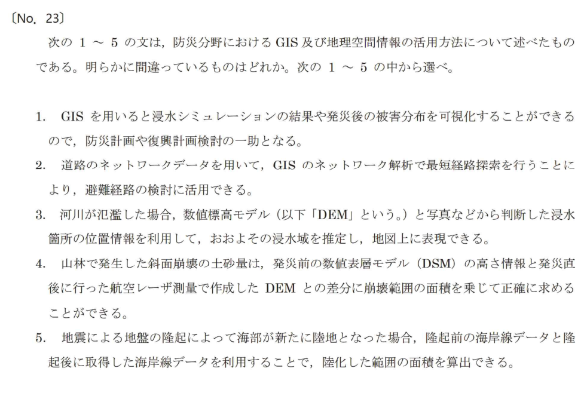
防災分野における GIS と地理空間情報の活用に関する正誤判定。
判断の鍵は DSM と DEM の違いにある。DSM（数値表層モデル）は樹木や建物まで含んだ「見えている表面」の高さ、DEM（数値標高モデル）はそれらを取り除いた「地面そのもの」の高さを表す。種類の違うモデルどうしを引き算しても、その差は地形の変化を意味しない——ここが本問の急所である。
浸水シミュレーションの結果や発災後の被害分布を GIS 上で可視化すれば、どこにどれだけ被害が及ぶかを地図として共有できる。防災計画や復興計画を検討する際の判断材料として有効である。記述のとおり。
道路をネットワークとして表現したデータがあれば、GIS のネットワーク解析で 2 地点間の最短経路を探索できる。避難経路の検討や、通行止め区間を除外した迂回路の検討に活用できる。記述のとおり。
DEM は地表面の標高を格子状に持つデータなので、「浸水した水面の高さ」が写真などから分かれば、その高さより低い格子を塗りつぶすことでおおよその浸水域を推定できる。記述のとおり。
誤りは 2 か所ある。
第一に、比べているモデルの種類が違う。発災前が DSM（樹木・建物を含む表面）、発災直後が DEM（地面のみ）では、その差分には「崩れた土砂の量」だけでなく「もともと生えていた樹木の高さ」まで含まれてしまう。土砂量を出したいなら、発災前後とも同じ種類のモデル（DEM どうし）で比較しなければならない。
第二に、差分に面積を掛けるという計算が成り立たない。崩壊した斜面の高さの変化は場所ごとに違い、深く削れた所も浅い所もある。ある代表値に崩壊範囲の面積を一律に掛けても、それは平均的な見積りにしかならない。体積を正しく出すには格子ごとの高さの差に格子面積を掛けて積算する必要がある。
以上より「正確に求めることができる」とするこの記述は誤り。
隆起によって海だった場所が陸地になった場合、隆起前の海岸線と隆起後の海岸線の 2 本の線で囲まれる領域が、新たに陸化した範囲にあたる。GIS でその面積を計算できる。記述のとおり。
次の 1 ～ 5 の文は， 地理空間情報活用推進基本法 （平成 19 年法律第 63 号） 及び関連省令（平 成 19 年国土交通省令第 78 号）に規定する基盤地図情報について述べたものである。明らかに間違 っているものはどれか。次の 1 ～ 5 の中から選べ。
📄 原典の問題ページ（画像）
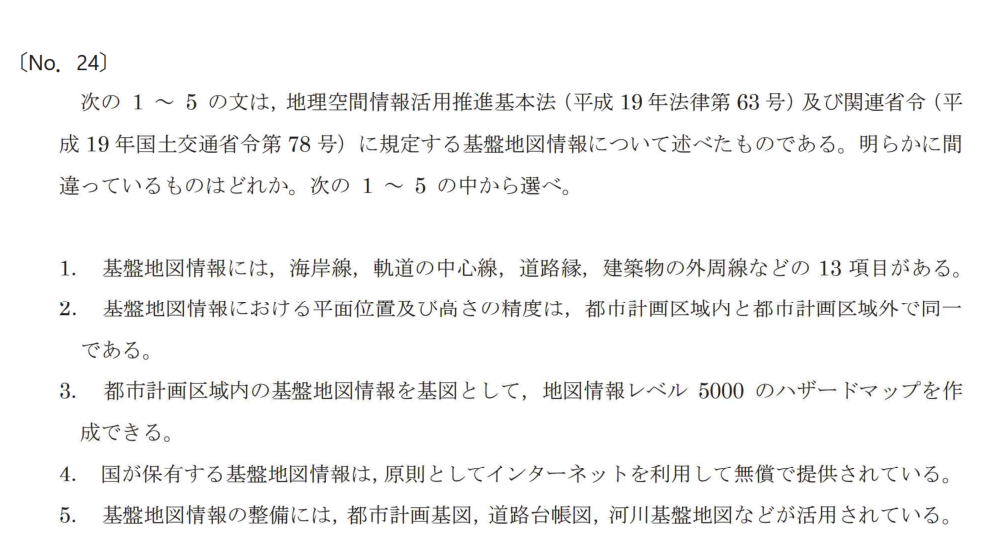
基盤地図情報の項目・精度・提供方法に関する正誤判定。
基盤地図情報は、さまざまな地理空間情報を重ね合わせるための共通の土台となる位置情報である。押さえるべき数値は精度が区域によって 10 倍違うという一点で、本問はそこを直接突いてくる。
基盤地図情報の項目は国土交通省令で 13 項目が定められている。測量の基準点、海岸線、公共施設の境界線、行政区画の境界線及び代表点、道路縁、河川堤防の表法肩の法線、軌道の中心線、標高点、水涯線、建築物の外周線、市町村の町若しくは字の境界線及び代表点、街区の境界線及び代表点である。記述に挙がっている項目はいずれもこの中に含まれる。
基盤地図情報の精度は、都市計画区域の内と外で大きく異なる。
都市計画区域外 … 平面位置 25 m 以内、高さ 5.0 m 以内
平面位置で 10 倍、高さで 5 倍の差がある。都市計画区域は人口や建物が集中し、都市計画や防災に細かい精度が要求されるのに対し、区域外は山林などが多く、そこまでの精度を全国で確保するのは費用面でも現実的でないためである。「区域内と区域外で同一である」とするこの記述が誤り。
地図情報レベル 5000 は、平面位置の誤差がおおむね 2.5 m 以内であることを求める水準。都市計画区域内の基盤地図情報は平面位置 2.5 m 以内なのでこの要求を満たしており、基図として使える。記述のとおり。
国が保有する基盤地図情報は、原則としてインターネットを通じて無償で提供されている。国土地理院のウェブサイトから誰でもダウンロードできる。記述のとおり。
基盤地図情報の整備は、すべてを新規測量で行うのではなく、既存の都市計画基図・道路台帳図・河川基盤地図などを活用して効率的に進められている。記述のとおり。
図 25 に模式的に示すように，基本型クロソイド (対称型) の道路建設を計画した。点 A 及び 点 D をクロソイド曲線始点， 点 B 及び点 C をクロソイド曲線終点とし，曲線 B ～ C を円曲線 とする。クロソイドパラメータ P ＝ 120ｍ，円曲線の曲線半径 R ＝ 200ｍ，円曲線の中心角 0 ＝ 45°，円周率 T ＝ 3.142 とするとき， 交角 I の角度は幾らか。最も近いものを次の 1 ～ 5の中から選べ。
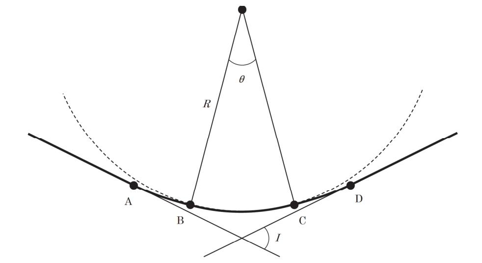
基本型クロソイド（対称型）の道路設計で、交角 I を求める計算問題。クロソイド始点・終点・円曲線部分が対称に並ぶ構造である。
クロソイドの定義式：A² = R × L（A：クロソイドパラメータ、R：円曲線半径、L：クロソイド長）
クロソイド始点から終点に至るまでに、接線方向が直線方向から振れる角度 τ：
度数換算（× 180/π）：
対称型クロソイドでは、両側のクロソイド接線角と円曲線部分の中心角が交角 I に集約される：
θ = 45° を代入：
次の 1 ～ 5 の文は，公共測量における用地測量について述べたものである。明らかに間違っ ているものはどれか。次の 1 ～ 5の中から選べ。
📄 原典の問題ページ（画像）
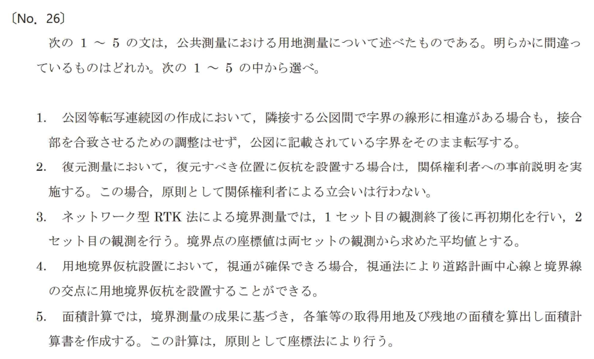
用地測量の各作業に関する正誤判定。
用地測量は、公共事業で取得する土地の範囲と面積を確定させる作業である。判断の軸は「何を基準に、どこに杭を打つのか」で、道路の中心線と用地の境界とを取り違えていないかが問われている。
公図等転写連続図は、法務局にある公図を写して連続的につないだ図面である。公図は現地と厳密に一致することが保証された資料ではないため、隣接する公図間で字界の線形が食い違うことは珍しくない。
このとき接合部を合わせるために線を動かしてはならない。勝手に調整すると、原資料が何を記載していたのかが分からなくなり、後の境界確認で根拠を示せなくなるからである。相違があってもそのまま転写し、食い違いは食い違いとして記録しておくのが正しい。記述のとおり。
復元測量で設置するのは仮杭であって、境界を確定させる杭ではない。この段階では関係権利者への事前説明を行えばよく、原則として立会いは求めない。立会いを求めるのは、後の境界確認の段階である。記述のとおり。
ネットワーク型 RTK 法による境界測量では、1 セット目の観測後に再初期化してから 2 セット目を観測する。再初期化を挟むのは、初期化（整数値バイアスの決定）が誤っていた場合にそれを検出するためである。両セットの較差を点検したうえで、境界点の座標値には両セットの平均値を採用する。記述のとおり。
視通法で用地境界仮杭を設置するとき、基準となるのは用地幅杭線であって、道路計画中心線ではない。
用地境界仮杭は「どこまでの土地を取得するか」を示す杭である。取得範囲の縁を決めているのは、中心線から左右に必要な幅をとった位置に打たれた用地幅杭を結ぶ線（用地幅杭線）であり、その線と土地の境界線が交わる点こそが取得範囲の角にあたる。道路計画中心線は道路の真ん中を通る線にすぎず、用地の縁とは無関係である。したがって「道路計画中心線と境界線の交点に用地境界仮杭を設置する」という記述は誤り。
面積計算は、境界測量で得た座標値を用いて座標法により行うのが原則。座標から機械的に計算できるため誤差が入りにくく、検算も容易である。三斜法のように図上で三角形に分割する古典的手法は、現在は原則として用いない。記述のとおり。
境界点 A，B，C，D で囲まれた四角形の土地の面積を求めたい。 境界点 B は直接観測ができ ないため，補助基準点Pを設置し，点 A，P，C，D をトータルステーションを用いて測量し，表27 に示す平面直角座標系 (平成14年国土交通省告示第9号) における座標値を得た。境界点 A，B， C，D で囲まれた四角形の土地の面積は幾らか。 最も近いものを次の 1 ～ 5 の中から選べ。
ただし、点 P から点 B までの平面距離は 10.000 m、点 P における点 B の方向角は 240°00′00″ とする。
| 点 | X (m) | Y (m) |
|---|---|---|
| A | +10,090.500 | +13,045.500 |
| P | +10,105.500 | +13,089.000 |
| C | +10,075.500 | +13,080.500 |
| D | +10,070.500 | +13,040.500 |
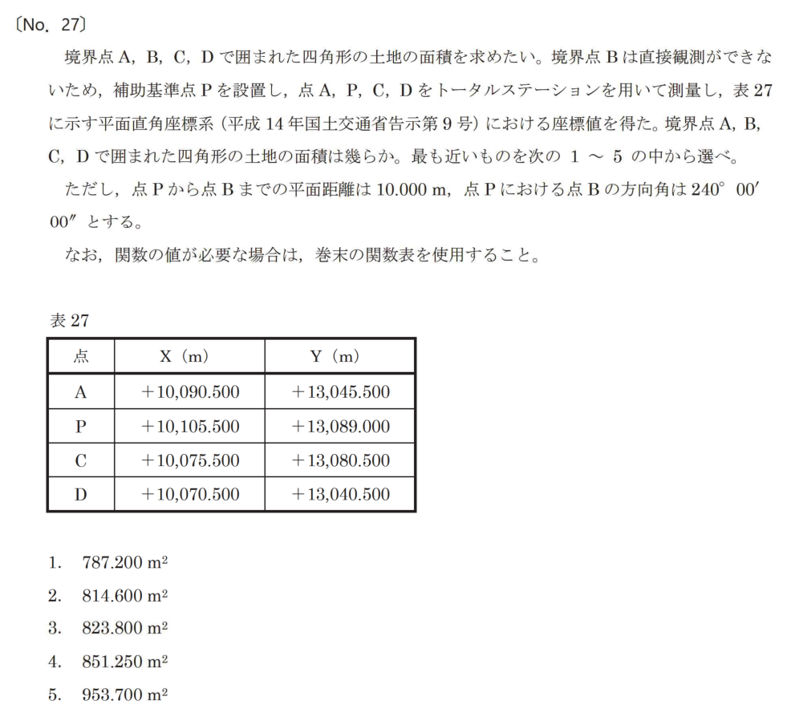
四角形 A・B・C・D の面積を座標法で求める問題。ただし頂点のひとつ B の座標が与えられていないところが本問の仕掛けで、まず補助基準点 P からの距離と方向角を使って B の座標を計算し、そのうえで面積を出す、という二段構えになる。
方向角はX 軸（北）を 0° として時計回りに測る角度なので、距離 S と方向角 T から座標の増分は次のようになる。sin と cos が通常の数学と入れ替わって見える点に注意。
S ＝ 10.000 m、T ＝ 240°00′00″ なので、cos 240° ＝ −0.50000、sin 240° ＝ −0.86603 より
ΔX ＝ 10.000 × (−0.50000) ＝ −5.000 m ／ ΔY ＝ 10.000 × (−0.86603) ＝ −8.660 m
座標が 10,000 台のままでは掛け算の桁数が大きく、ミスを招く。面積は原点をどこに置いても変わらないので、(10,070, 13,040) を原点として引き算しておく。
頂点を A → B → C → D の順に一周し、隣り合う 2 点ごとに (xi·yi+1 − xi+1·yi) を計算して足し合わせる。
A→B：20.5 × 40.34 − 30.5 × 5.5 ＝ 826.97 − 167.75 ＝ ＋659.22
B→C：30.5 × 40.5 − 5.5 × 40.34 ＝ 1,235.25 − 221.87 ＝ ＋1,013.38
C→D：5.5 × 0.5 − 0.5 × 40.5 ＝ 2.75 − 20.25 ＝ −17.50
D→A：0.5 × 5.5 − 20.5 × 0.5 ＝ 2.75 − 10.25 ＝ −7.50
次の a ～ d の文は，公共測量における河川測量について述べたものである。 ア ～ 才オ に入る語句の組合せとして最も適当なものはどれか。 次の 1 ～ 5 の中から選べ。
📄 原典の問題ページ（画像）
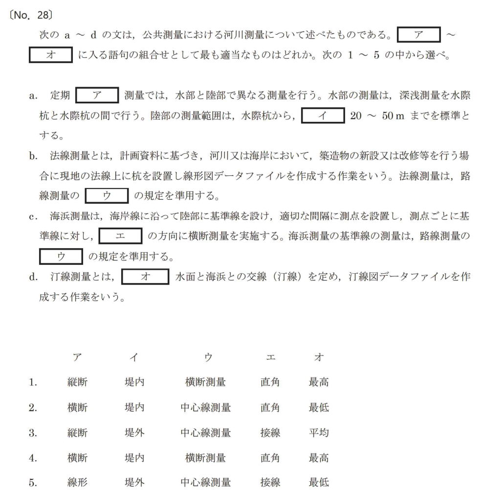
河川測量の主要項目（定期横断・法線測量・海浜測量・汀線測量）の用語を当てはめる穴埋め問題。各語句を作業規程の準則と照合する。
水部と陸部に分けて行う測量は定期横断測量。水部は深浅測量、陸部は横断方向に地形を測る。「縦断」「線形」では水部・陸部を横切る測量にならない。
陸部の測量範囲は、水際杭から堤内側に 20〜50 m まで（堤防の安全側）。「堤外」は河川側であり測量範囲ではない。
法線測量は路線測量の中心線測量の規定を準用する。海浜測量の基準線測量も同様に中心線測量の準用。「横断測量」では線形を取り扱えない。
海浜測量では、基準線に対し直角方向に横断測量を実施する。海岸線に直交する形で地形断面を取るため。「接線」では海岸沿いになってしまう。
汀線（ていせん）は「最低水面と海浜との交線」と定義される。潮位が最も低い時の水際線で、海岸線の基準として用いる。「最高」「平均」は使わない。
次のａ〜ｅ の文は，測量法(昭和 24 年法律第 188 号)に規定された事項について述べたものであ る。 明らかに間違っているものだけを全て含む組合せはどれか。 次の１～５の中から選べ。
📄 原典の問題ページ（画像）
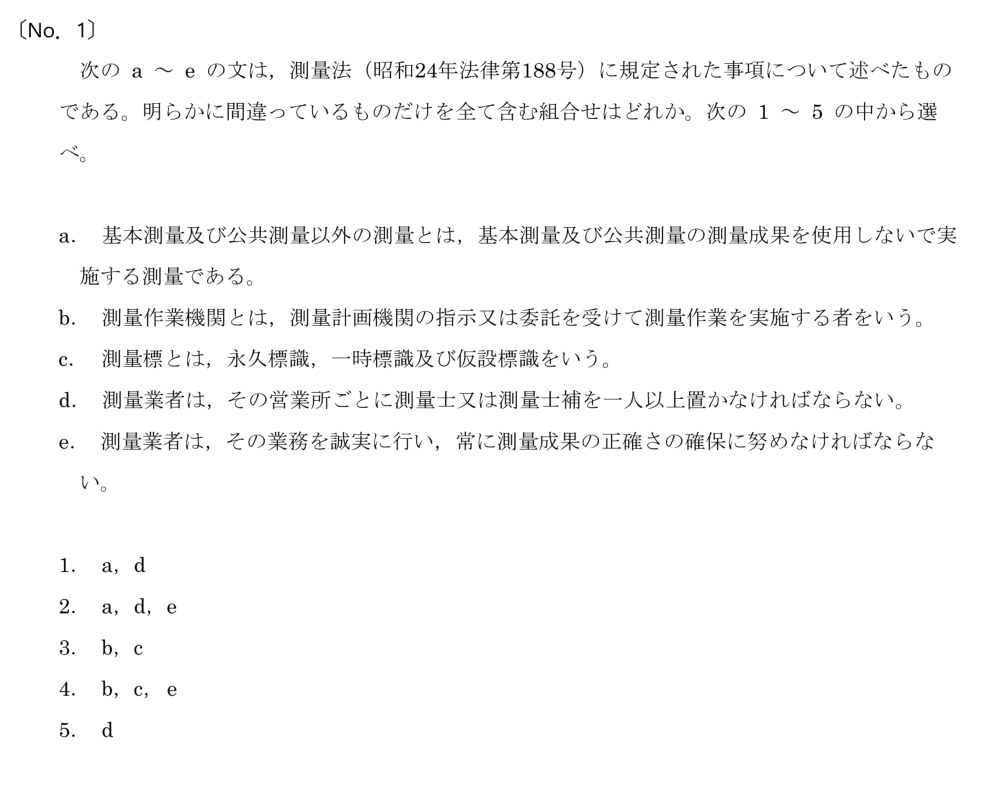
測量法の用語定義と義務規定を判定する問題。各記述を条文と照合する。
「基本測量及び公共測量以外の測量」は、基本測量・公共測量の成果を使用して実施する測量と定義される。問題文の「使用しないで実施する」は定義そのものが逆。
測量業者は営業所ごとに測量士を 1 人以上配置する義務がある。問題文の「測量士又は測量士補」は誤りで、士補だけでは要件を満たさない。
次の １～５の文は， 国際地球基準座標系(以下「ITRF」という。)について述べたものである。 明らかに間違っているものはどれか。 次の 1～5 の中から選べ。
📄 原典の問題ページ（画像）
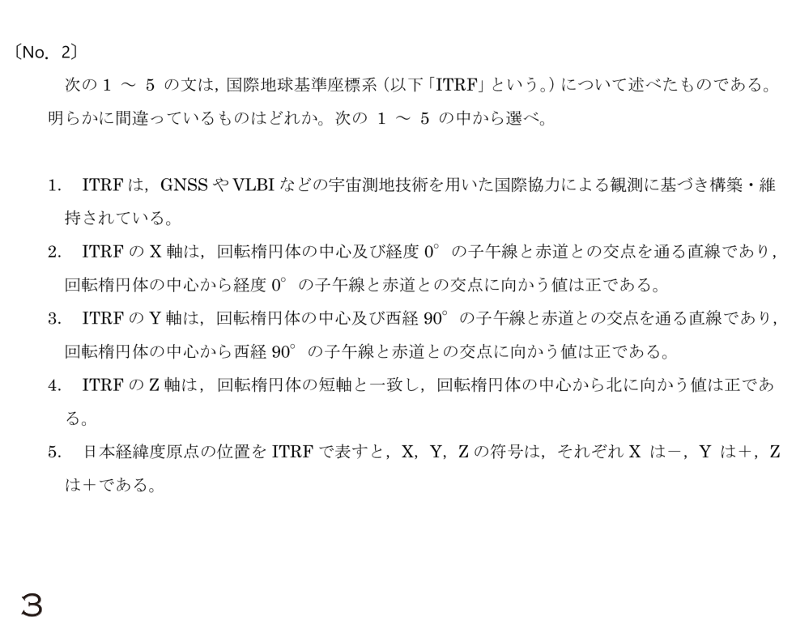
ITRF（国際地球基準座標系）の構造に関する正誤判定。地球重心を原点とする三次元直交座標系で、各軸の取り方を理解しているかが問われる。
ITRF の Y 軸は 東経 90°の子午線と赤道の交点方向を正とする（右手系のため X→Z→Y の順で決まる）。問題文の方向の取り方が誤っている。
次の １～５の文は，地理情報標準プロファイル（以下「JPGIS」という。)について述べたもの である。 明らかに間違っているものはどれか。 次の１～５の中から選べ。
📄 原典の問題ページ（画像）
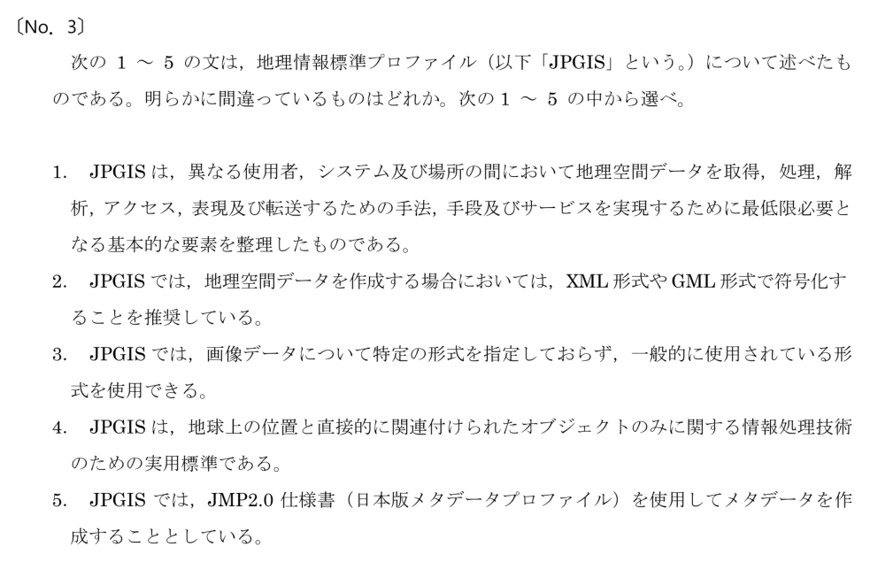
JPGIS（地理情報標準プロファイル）の定義・構成に関する正誤判定。ISO 19100 シリーズと JIS X 7100 シリーズを国内向けに整理した標準。
JPGIS は「地球上の位置に直接または間接的に関連付けられたオブジェクトまたは現象に関する情報処理技術のための実用標準」と定義される。問題文では関連付けの範囲が限定的に記述されており、定義の表現が誤っている。
図 4 に示すような三次元直交座標系において，ある点（x，y，z）を z 軸のまわりに図 4 に示す 方向にある角度回転させたとき k，式 4 により点（x’，y’，z’）に移されるものとする。 図4 x′ □y′□ = □ □ 1 □√3 z′ 0 −√3 1 0 0x 0□ □y□・・・・・・・・・・式 4 2z 点 A(1,000, 2000, 3.000) が式 4 により点 A'に移されるとき，点 A'の座標値は幾らか。また, 式 4 により z 軸の周りに図 4 に示す方向へ回転する角度は幾らか。 最も近い数値の組合せを次の 1 ～5 の中から選べ。
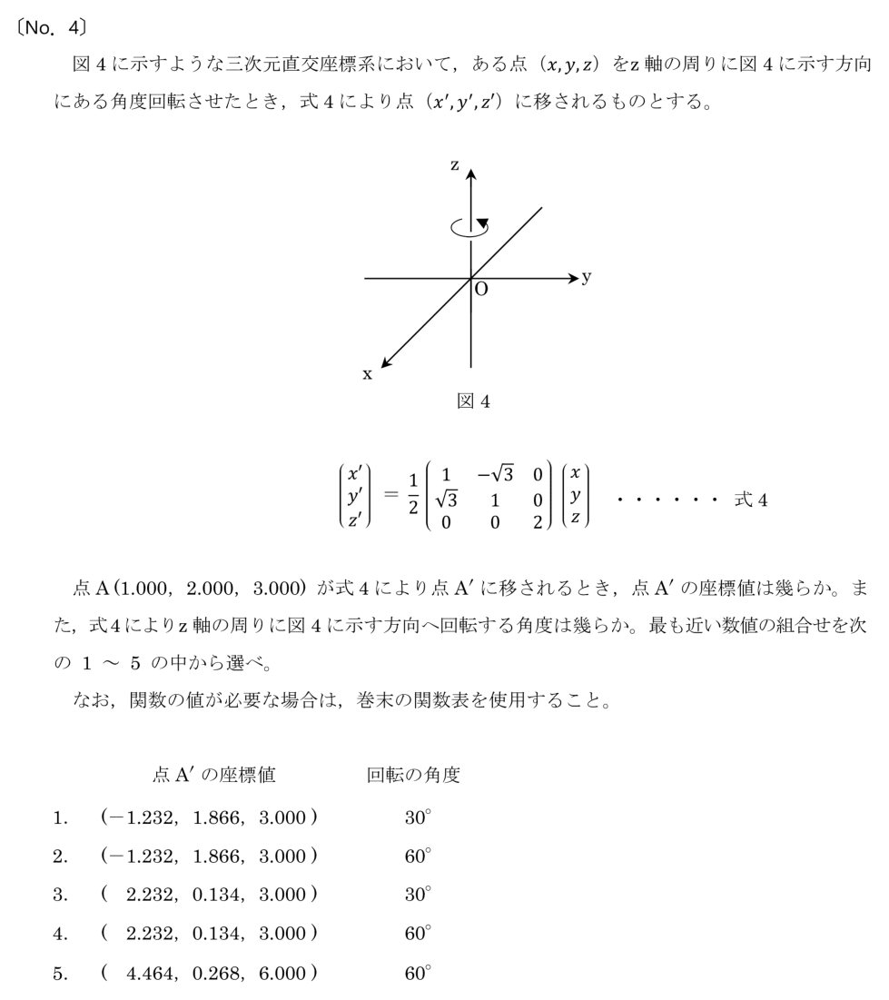
z 軸まわりの回転行列に関する計算問題。式 4 の行列 ＝ ½ × [[1, −√3, 0], [√3, 1, 0], [0, 0, 2]] を点 A(1.000, 2.000, 3.000) に作用させ、移った先 A' の座標と回転角を求める。
z 軸まわりの回転行列の標準形は [[cos θ, −sin θ, 0], [sin θ, cos θ, 0], [0, 0, 1]]。式 4 と見比べると：
x' = (1·x − √3·y) / 2 = (1.000 − 1.732 × 2.000) / 2 = (1.000 − 3.464) / 2 = −1.232
y' = (√3·x + 1·y) / 2 = (1.732 + 2.000) / 2 = 1.866
z' = 2·z / 2 = z = 3.000（z 軸まわりの回転では z は変化しない）
※ 検算：回転は原点からの距離を変えない。|OA| = √(1²+2²) = √5、|OA'| = √(1.232²+1.866²) = √(1.518+3.482) = √5 で一致。
ある距離の偶然誤差だけを含む一群の測定値について，平均値が 80.000ｍ，標準偏差が 0.010ｍ の結果を得た。測定値の分布が近似的に正規分布に従うと仮定した場合，測定値が 80.005ｍと 80.010ｍの間になる確率は幾らか。最も近いものを次の 1～5 の中から選べ。
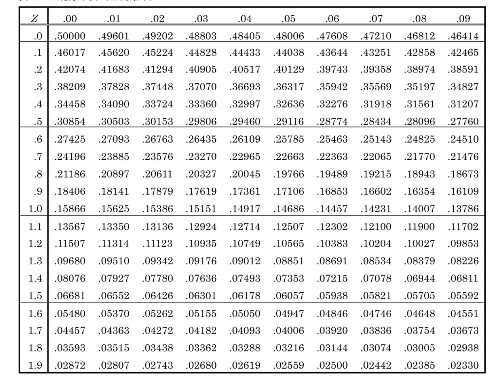
距離の繰り返し測定値が正規分布に従うとして、特定の範囲に入る確率を求める計算問題。平均 μ = 80.000 m、標準偏差 σ = 0.010 m。
標準化の式：z = (x − μ) / σ。範囲の両端（80.005 m、80.010 m）について計算：
・80.005 m → z₁ = (80.005 − 80.000) / 0.010 = 0.5
・80.010 m → z₂ = (80.010 − 80.000) / 0.010 = 1.0
・P(Z ≥ 0.5) ≒ 0.30854
・P(Z ≥ 1.0) ≒ 0.15866
次の 1～5 の文は，測量法(昭和 24 年法律第 188 号)における測量の基準について述べたものであ る。 明らかに間違っているものはどれか。次の 1～5 の中から選べ。
📄 原典の問題ページ（画像）
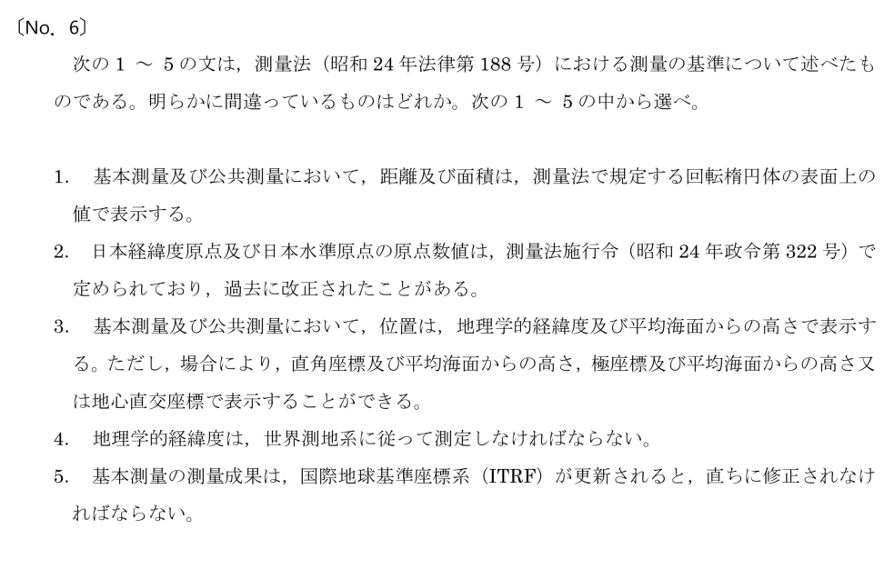
測量法 第11条（測量の基準）等に関する正誤判定。日本の測地基準系の運用と更新の仕組みを理解しているかが問われる。
日本の測量成果は世界測地系に従うが、ITRF の更新に即座に追随することはない。ITRF は数年ごとに更新されるが、日本の成果は法定の手続きを経て定期的に改正される。なお、令和7年（2025年）4月1日に基準点・水準点の成果が「測地成果2024（JGD2024）」へ改正される予定。
次の 1～5 の文は，公共測量におけるトータルステーション （以下「TS」 という。) を用いた 基準点測量について述べたものである。 明らかに間違っているものはどれか。 次の 1～5 の中か ら選べ。
📄 原典の問題ページ（画像）
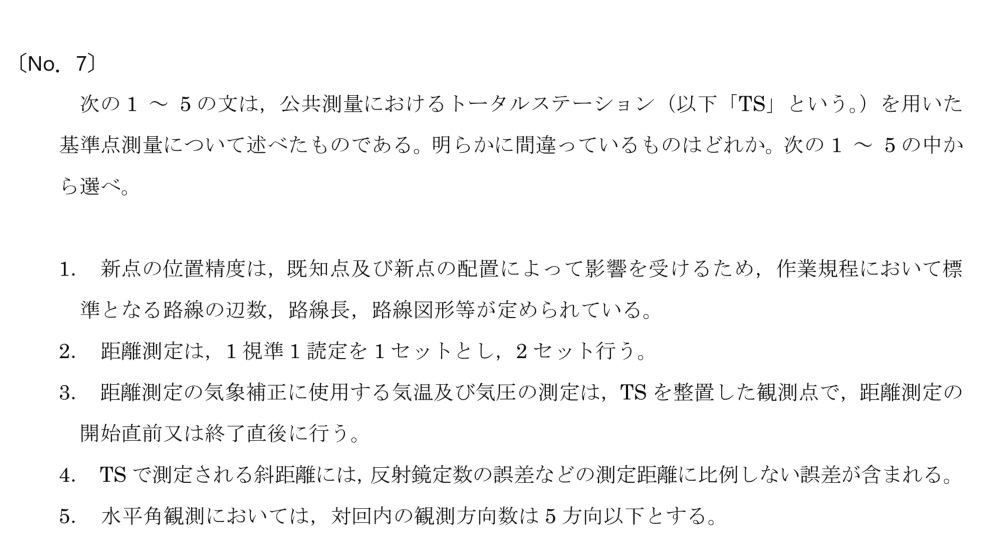
トータルステーション（TS）を用いた基準点測量の手順・誤差処理に関する正誤判定。
TS の距離測定は 1 視準 2 読定を 1 セットとするのが標準。問題文の手順は読定回数・視準回数の規定が異なっており、作業規程の準則と一致しない。
光波の進む速さは大気の温度・気圧によって変わるため、観測した距離には気象補正が要る。その補正に使う気温・気圧は、実際に光波が通った大気の状態を代表する値でなければ意味がない。
そこで測定場所は TS を整置した観測点、測定時刻は距離測定の開始直前または終了直後と定められている。離れた場所の値や、時間の空いた値を使っても、その時その場の大気を表していないので補正にならない。記述のとおり。
公共測量において， トータルステーションを用いた結合多角方式により 1 級基準点測量を行っ た。図 8 は、平均図に点検路線を加筆したものである。①～⑧は，観測終了後に行う水平位置及び 標高の閉合差による点検計算のための点検路線を路線番号で示したものである。点検路線の組合せ として最も適当なものはどれか。 次の 1～5 の中から選べ。
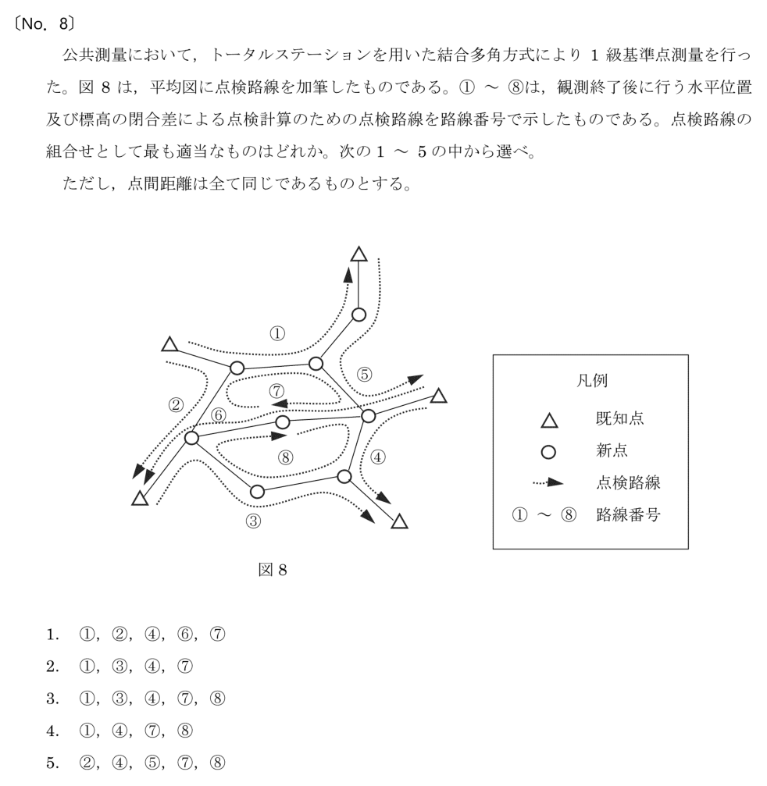
観測が終わったあと、その結果が妥当かどうかを確かめるために選ぶのが点検路線である。既知点から既知点へ網の中をたどり、その経路で計算した座標・標高が既知の値とどれだけ合うか（閉合差）を見る。どの経路を選ぶかで点検が及ぶ範囲が変わるため、選び方に決まりがある。
① 既知点と既知点を結ぶ経路であること。片端が新点で終わっていては、計算値と比べる相手（既知の値）がないので閉合差そのものが出せない。
② すべての既知点が、いずれかの点検路線に含まれること。取り残された既知点があると、その点に取り付いた観測が検証されないまま残ってしまう。
③ すべての単位多角形が、いずれかの点検路線と重複すること。単位多角形とは網の中の最小の閉ループのこと。どの点検路線も通らないループがあれば、そこの観測は素通しになる。
④ 路線はできるだけ短くすること。経路が長いと誤差が累積して閉合差が大きく出るため、異常があるのか経路が長いだけなのかを判別しにくくなる。
この 4 条件は、図の上で順番に潰していける。③で落ちる選択肢が最も多いので、そこを丁寧に見るのが近道である。
手順 1 選択肢に挙がった番号の路線を図でたどり、両端がともに既知点（△）になっているかを確認する。ここで①に反するものが落ちる。
手順 2 図中の既知点（△）を数え、そのすべてがどれかの路線の端点になっているかを確認する。ひとつでも取り残されていれば②に反する。
手順 3 網の中の閉ループを順になぞり、各ループに点検路線が少なくとも 1 本重なっているかを見る。重なりのないループが残れば③に反する。
手順 4 ここまでで複数残ったときに④で比べる。本問は「点間距離は全て同じ」と与えられているので、通る辺の本数が少ないほうが短いと判断してよい。距離を測る必要はない。
次の 1～5 の文は，公共測量における GNSS 測量機を用いた 1～4 級基準点測量について述べた ものである。 明らかに間違っているものはどれか。 次の 1～5 の中から選べ。
📄 原典の問題ページ（画像）
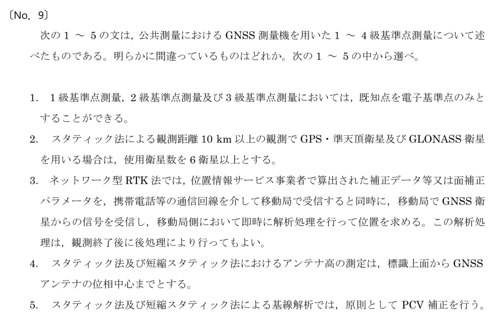
GNSS 測量機を用いた 1〜4 級基準点測量に関する正誤判定。
アンテナ高は、標識上面から GNSS アンテナ底面までの距離を垂直に測定する。問題文の測定方法・基準点が誤っている。アンテナ位相中心ではなく底面までを測るのが規定。
公共測量において GNSS 測量機を用いた基準点測量を行い，電子基準点Ａから新点Ｂまでの距離 12,000.00ｍ，新点Ｂの楕円体高 497.57m を得た。このとき，新点Ｂの標高は幾らか。最も近いも のを次の 1～5 の中から選べ。
ただし、電子基準点 A の標高は 492.48 m、楕円体高は 534.09 m であり、ジオイド高は、電子基準点 A から新点 B の方向へ、距離 1,000.00 m 当たり −0.07 m の一様な変化をしているものとする。
また、距離は楕円体面上の距離とする。
📄 原典の問題ページ（画像）
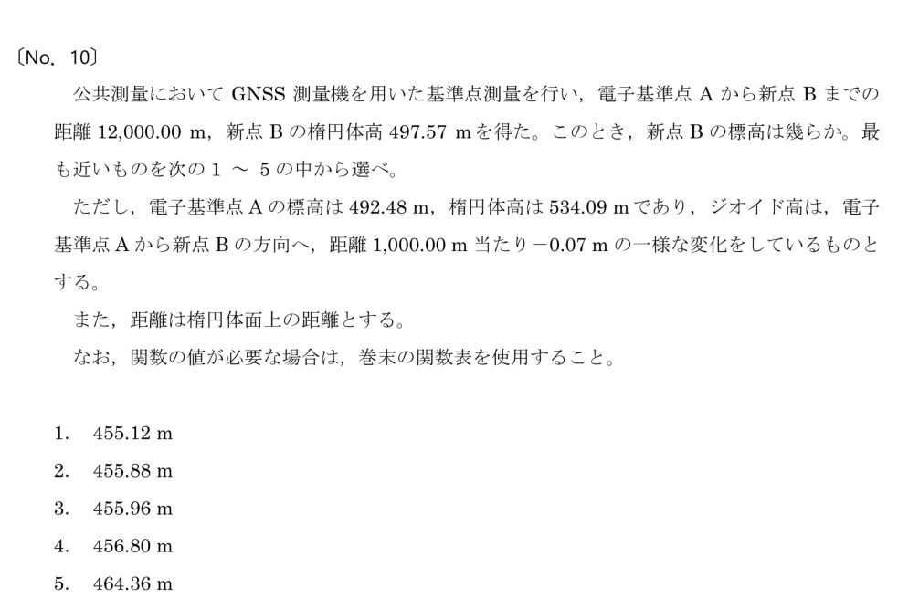
GNSS で観測した楕円体高から、ジオイド傾斜を考慮して新点 B の標高を求める計算問題。
関係式：楕円体高 H = 標高 h + ジオイド高 N → N = H − h
1,000 m あたり −0.07 m の傾斜（A→B 方向に下がる）。A→B 間 12,000 m の総傾斜：
→ B のジオイド高：N_B = N_A + ΔN = 41.61 − 0.840 = 40.770 m
B の楕円体高 H_B = 497.57 m を使い：
次の a〜e の文は，公共測量における GNSS 測量機による水準測量 （以下「GNSS 水準測量」とい う。）について述べたものである。明らかに間違っているものだけの組合せはどれか。次の 1～5 の 中から選べ。
📄 原典の問題ページ（画像）
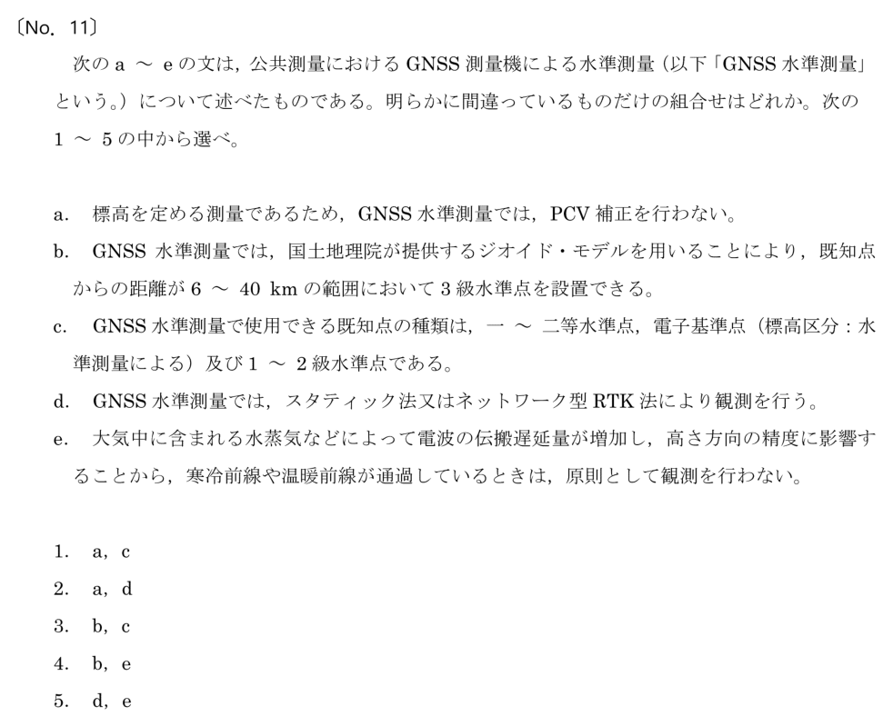
GNSS 水準測量（「GNSS による標高の測量マニュアル」）に関する正誤判定。
前提として押さえておきたいのは、GNSS が直接求めるのは「標高」ではなく「楕円体高」だということ。両者は次の関係で結ばれている。
つまり GNSS 水準測量とは、GNSS で楕円体高を精密に求め、そこから国土地理院のジオイド・モデルによるジオイド高を差し引いて標高を得る測量である。高さ方向の精度がそのまま成果の精度になるため、高さの誤差要因に対して各所で厳しい条件が課されている。この視点で各記述を見ていく。
記述は「標高を定める測量であるため PCV 補正を行わない」とするが、理屈が逆である。PCV（アンテナ位相特性）とは、アンテナの電気的な位相中心が電波の到来方向によってずれる性質のことで、その影響はとりわけ高さ方向に強く現れる。標高を求める測量だからこそ、PCV 補正は省略できない。GNSS 水準測量では原則として PCV 補正を行う。
ジオイド・モデルを併用することで標高が求められる（冒頭の式）ため、GNSS 水準測量によって3 級水準点を設置することが認められている。マニュアルはその適用範囲を既知点からの距離 6 〜 40 kmと定めており、記述はこのとおり。直接水準測量のように路線を実際にたどる必要がないため、山間部や横断が難しい地形で特に効果を発揮する。
使用できる既知点は、一〜二等水準点、電子基準点（標高区分：水準測量による）、1〜2 級水準点に限られる。共通しているのは、いずれも標高が水準測量によって高精度に決められている点だということ。電子基準点がすべて使えるわけではなく「標高区分：水準測量による」ものに限定されるのがポイントで、GNSS によって標高を与えた点を既知点にしてしまうと、その誤差をさらに引き継いでしまうためである。
GNSS 水準測量の観測はスタティック法のみで行う。ネットワーク型 RTK 法は即時に結果が得られる利点がある反面、観測時間が短く、高さ方向に必要な精度を確保できない。長時間の連続観測によって衛星配置の変化を取り込み、対流圏遅延などの誤差を平均化できるスタティック法でなければならない。「ネットワーク型 RTK 法により観測を行う」とする記述は誤り。
GNSS の電波は大気を通過する際に遅れる。とくに対流圏の水蒸気による遅延は変動が大きく、正確なモデル化が難しい。基線の両端で水蒸気の分布が違えば遅延の差が誤差として残り、これも高さ方向に効いてくる。寒冷前線や温暖前線の通過時は水蒸気分布が短時間で大きく変化するため、原則として観測を行わない。記述のとおり。
次の a ～ e の文は，公共測量における水準測量の誤差とその対策について述べたものである。 明らかに間違っているものだけの組合せはどれか。次の 1～5 の中から選べ。
📄 原典の問題ページ（画像）
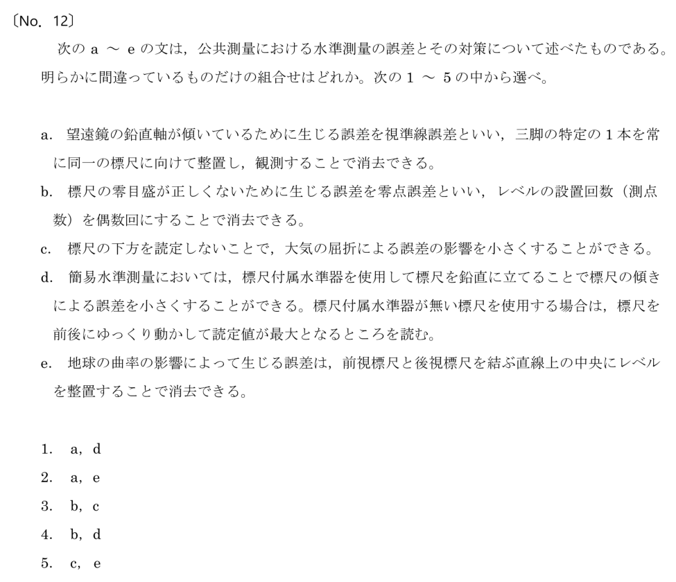
レベルを用いた水準測量の誤差要因と消去方法に関する正誤判定。
鉛直軸が傾いていることで生じる誤差は鉛直軸誤差であり、視準線誤差ではない。視準線誤差は望遠鏡の視準線と気泡管軸の不一致による誤差で、消去方法・原因が異なる。問題文では誤差の名前を取り違えている。
標尺の読取りでは、標尺を前後にゆっくり動かして（ウェービング）読定値が最小となる位置の値を読む。これは標尺が鉛直のときに最小値となる原理を利用。問題文の方法では正確な読定にならない。
図 13 に示す水準点 A〜D において，公共測量における 2 級水準測量を実施し，表 13 の観測結果 を得た。点検の結果，環閉合差が許容範囲を超えたことから往路及び復路の再測を行うこととした。 再測路線として最も適当なものはどれか。 次の 1～5 中から選べ。
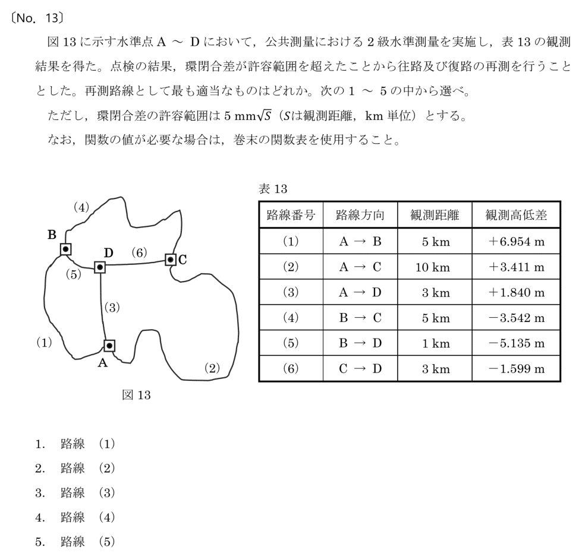
水準環の閉合差を計算し、許容範囲を超えた環に共通する路線を 再測対象として特定する問題。
環 ①（(5)→(3)→(1) を辿る）：−5.135 − 1.840 + 6.954 = +0.021 m = +21 mm
環 ②（(4)→(6)→(5)）：−3.542 − 1.599 + 5.135 = −0.006 m = −6 mm
環 ③（(6)→(2)→(3)）：+1.599 − 3.411 + 1.840 = −0.028 m = −28 mm ←大
環 ④（(4)→(2)→(1)）：−3.542 − 3.411 + 6.954 = +0.001 m = +1 mm
・環 ①（S = 1+3+5 = 9 km）：5√9 = 15 mm → 観測 21 mm、許容超過
・環 ②（5+3+1 = 9 km）：5√9 = 15 mm → 観測 6 mm、許容内
・環 ③（3+10+3 = 16 km）：5√16 = 20 mm → 観測 28 mm、許容超過
・環 ④（5+10+5 = 20 km）：5√20 ≒ 22 mm → 観測 1 mm、許容内
環 ① と環 ③ が許容超過。両環に共通する路線を見ると 路線 (3)。他の路線（1, 2, 4, 5, 6）は許容内の環にも含まれているため正常と判定。
次の 1～5 の文は，公共測量における地形測量のうち，GNSS 測量機を用いた現地測量について述 べたものである。明らかに間違っているものはどれか。次の 1～5 の中から選べ。
📄 原典の問題ページ（画像）
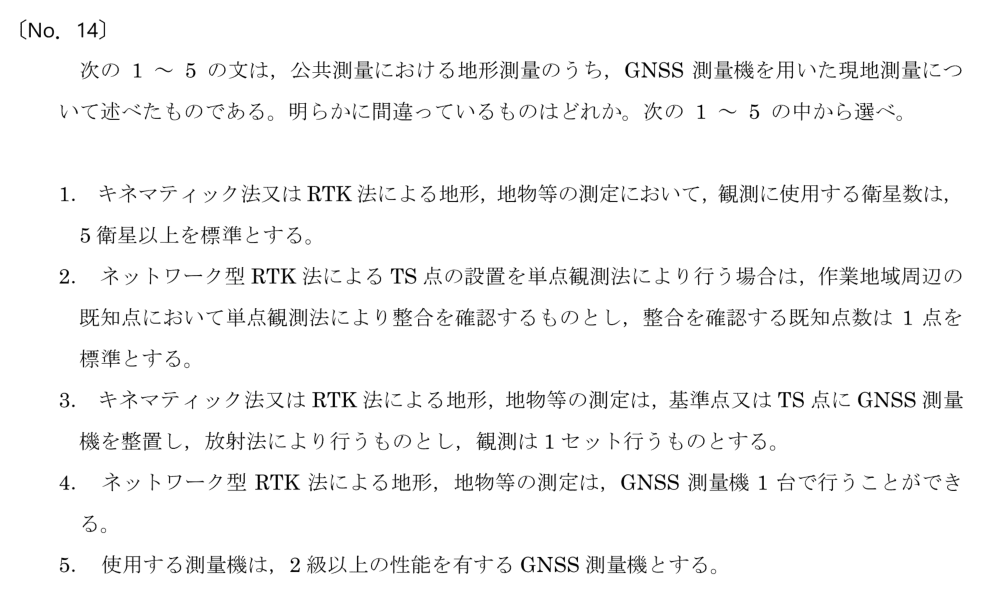
GNSS を用いた現地測量に関する正誤判定。
整合を確認する既知点数は3 点以上が標準。問題文の点数では十分な整合検証ができない。
A 市では，5 年前に作成した地図情報レベル 1000 の数値地形図データを公共測量により修正する こととした。 次の a〜e の文は，その作業内容について述べたものである。 明らかに間違っている ものだけの組合せはどれか。次の 1～5 の中から選べ。
📄 原典の問題ページ（画像）
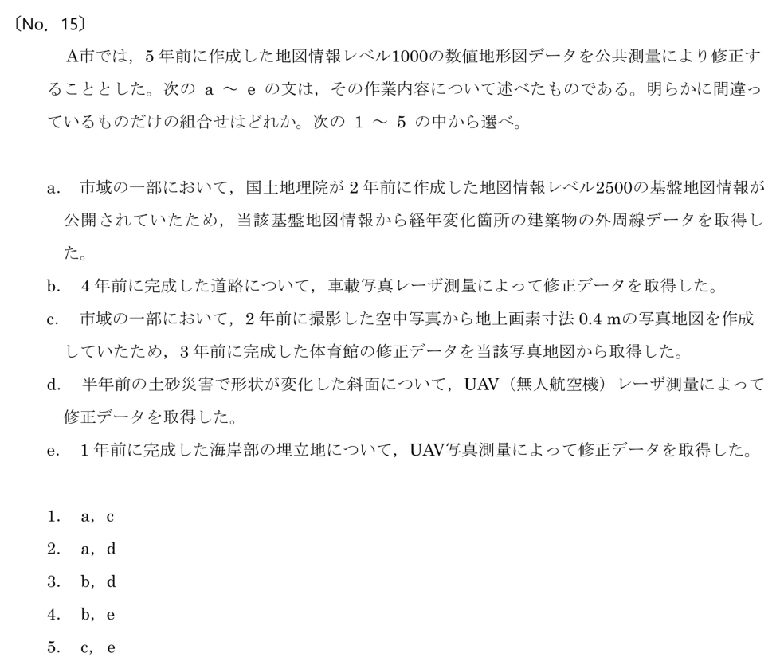
地図情報レベル 1000 の数値地形図データを修正する各手法の妥当性に関する正誤判定。
地図情報レベル2500の基盤地図情報を、地図情報レベル1000の数値地形図修正に使うのは不適切。レベル 2500 の方が精度が粗いため、レベル 1000 のデータを 2500 の誤差で上書きしてしまう。精度の粗いデータで細密なレベルを修正できないが原則。
地図情報レベル 1000 では水平位置誤差 1 m 以内が要求されるのに対し、写真地図の地上画素寸法は 0.2 m 以内が必要。問題文では地上画素寸法が大きすぎて精度要件を満たさない。
公共測量におけるトータルステーション（以下「TS」という。）を用いた細部測量において，地形， 地物等の状況により，図 16 に示すとおり基準点 A 及び基準点 B から TS 点 C を設置することとし た。次の文は，この TS 点の水平位置の精度（標準偏差） を求める手順について述べたものである。 基準点 A，基準点 B の平面直角座標系（平成 14 年国土交通省告示第 9 号）に基づく座標値は表 16-1 のとおりである。 基準点 A に TS を整置し，放射法により TS 点 C の観測を行ったところ，表 16-2 の結果を得た。 使用した TS の水平距離 D を測定する精度（標準偏差）は 5mm，水平角αを測定する精度（標準偏差） は 5″とする。また，TS による距離測定と角度測定は独立で互いに影響を与えないものとし，基準 点の誤差及びその他の観測誤差は考えないものとする。 X 座標の北方向 C θD α A T 表 16-1 基準点Ａ 基準点Ｂ B Y 図 16 Ｘ座標値（ｍ） 160.000 20.000 Ｙ座標値（ｍ） 50.000 190.000 表 16-2 観測値 基準点Ａ～ＴＳ点Ｃの水平距離Ｄ 100.000ｍ 基準点Ｂに向かう方向を基準にして ＴＳ点Ｃ方向を測定した観測角α（水平角） 285°00′00″ 基準点 A から TS 点 C への方向角θは，観測した水平角 α 及び基準点 A から基準点 B への方向角 T と式 16−1 の関係がある。式 16-1 に対する誤差伝搬の法則から，方向角θの標準偏差σθについ て，σθ＝σαであることが分かる。 θ＝Ｔ+α－360 ・・・・・・・・式 16-1 ここで，式 16-1 の角度の単位は度とする。 TS 点 C のＸ座標ＸＣ及びＹ座標ＹＣは，基準点 A から TS 点 C の観測によって得られる水平距離 D と方向角θを変数とした関数 ∱(D，θ) 及びｇ(D，θ)として，それぞれ式 16-2 及び式 16-3 のよう に表すことができる。ここで，ＸＡ，ＹＡ はそれぞれ基準点 A のＸ座標値，Ｙ座標値である。 Ｘｃ ＝∱(D，θ) ＝ ＸＡ + D cosθ ・・・・・・・・式 16-2 ＹＣ ＝ｇ (D，θ) ＝ ＹＡ + D sinθ ・・・・・・・・式 16-3 距離と角度の測定が独立であることから，観測値 D，θ におけるＸＣの分散は，式 16-2 に対し て誤差伝搬の法則を用いると式 16-4 で求められる。 □Ｘ□ Ｃ = □□□□□ (□, □ □)□ □□□ + □□□□□ (□, □ □ )□ □□□ ・・・・・・・・式 16-4 ＹＣの分散σ2ＹＣについても，式 16-3 において上記と同様に考えることができる。 このとき，今回設置した TS 点 C のＸ座標値及びＹ座標値の標準偏差σＸＣ，σＹＣは幾らか。最も 近いものの組合せを次の 1～5 の中から選べ。
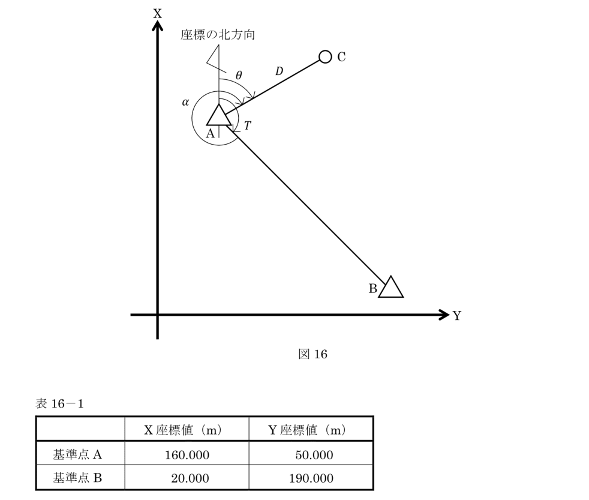
放射法で設置した TS 点 C の座標の標準偏差（σXC・σYC）を誤差伝播の法則で求める計算問題。σD = 5 mm、σα = 5″。
基準点 A(160.000, 50.000) → B(20.000, 190.000)：ΔX = −140、ΔY = +140 なので方向角 T = 135°。
XC = XA + D cos θ、YC = YA + D sin θ。D = 100.000 m = 100,000 mm、cos 60° = 0.5、sin 60° = 0.86603：
・∂XC/∂D = cos θ = 0.5 ・∂XC/∂θ = −D sin θ → 大きさ 86,603 mm
・∂YC/∂D = sin θ = 0.86603 ・∂YC/∂θ = D cos θ = 50,000 mm
σXC² = (0.5 × 5)² + (86,603 × 0.000024)² ≒ 2.5² + 2.1² = 6.25 + 4.4 ≒ 10.7 → σXC ≒ 3.3 mm → 約 3 mm
σYC² = (0.86603 × 5)² + (50,000 × 0.000024)² ≒ 4.33² + 1.2² = 18.8 + 1.5 ≒ 20.2 → σYC ≒ 4.5 mm → 約 5 mm
画面距離 10ｃｍ，画面の大きさ 17,000 画素×11,000 画素，撮像面での素子寸法 6μｍのデジタ ル航空メラを鉛直下に向けて撮影した 1 枚の数値写真がある。 この数値写真には図 17 のように，主点付近には正方形の平らな屋上を持つ建物が，主点から画 面の短辺と平行に左へ離れた場所には高塔の先端と根元を両端とする高塔の像が，それぞれ写って いる。なお，図 17 ではこれらの地物を実際より拡大して示している。 主点付近にある建物の屋上の一辺を数値写真上で計測したところ，300 画素の長さであった。こ の建物は標高 180ｍの地点に立ち，建物の高さは 20ｍ，屋上の一辺の実長は 36ｍである。一方，高 塔は標高 0ｍで傾斜のない場所に立っている。数値写真上で計測したところ，主点からこの高塔の 先端までの長さは 4,000 画素，高塔の像の長さは 140 画素であった。この高塔の高さは幾らか。 最 も近いものを次の 1～5 の中から選べ。
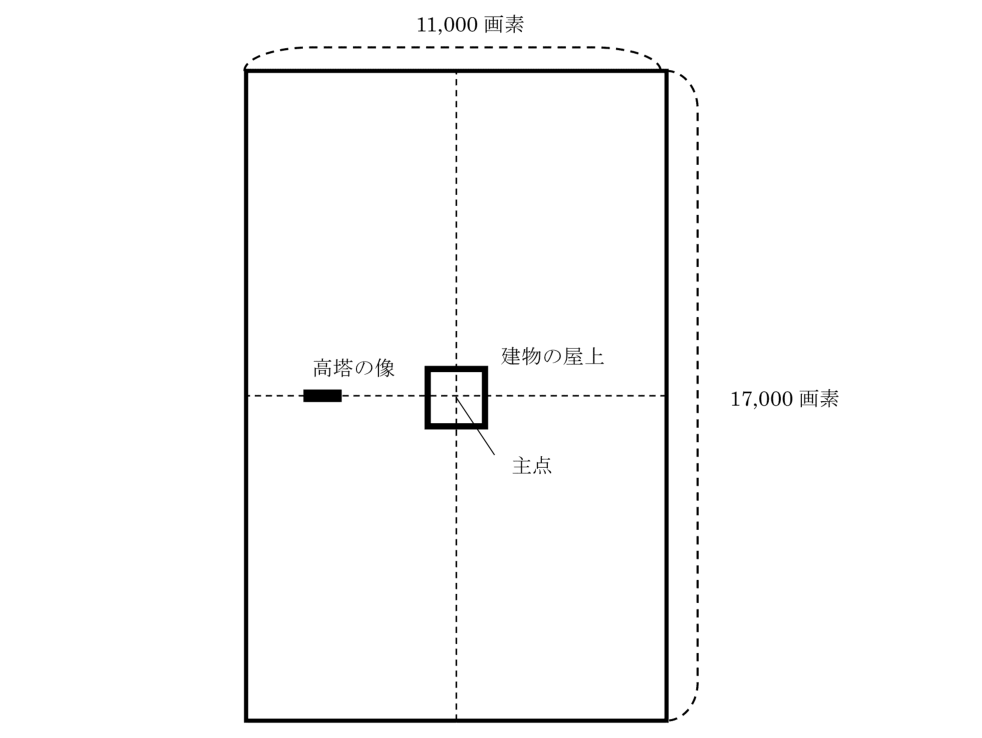
鉛直空中写真上の「高塔の倒れこみ（像のズレ）」から塔高を求める計算問題。まず主点付近の建物から撮影高度を出し、次に倒れこみの式を使う。
屋上一辺：写真上 300 画素 × 素子寸法 6 μm = 1,800 μm = 1.8 mm。実長は 36 m なので：
画面距離 f = 10 cm = 0.1 m。屋上面からの対地高度 H' = f × 20,000 = 2,000 m。
鉛直写真では、高さのある地物は主点（鉛直点）から放射方向に倒れこんで写る。主点から先端までの距離 r = 4,000 画素、像の長さ Δr = 140 画素のとき：
h = H × Δr / r = 2,200 × 140 / 4,000 = 2,200 × 0.035
次の a～e の文は，リモートセンシングについて述べたものである。明らかに間違っている ものだけの組合せはどれか。 次の 1～5 の中から選べ。
📄 原典の問題ページ（画像）
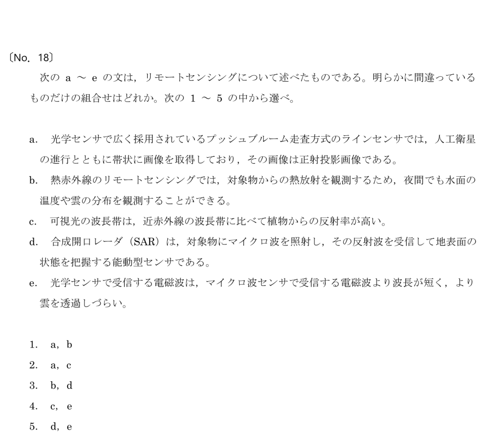
リモートセンシングのセンサ・電磁波特性に関する正誤判定。
プッシュブルーム方式のラインセンサは一次元中心投影方式。センサ取付直下の軌跡を中心に倒れこみ歪が生じるため、正射投影ではない。リモセンには中心投影方式（フレーム/ライン/ポイントセンサ）と非中心投影方式（側視レーダ・SAR）があり、ラインセンサは中心投影の一種。問題文の「正射投影」は誤り。
植物は近赤外線（波長 700〜2500 nm）を強く反射する性質を持つ。可視光（380〜780 nm）の反射率は近赤外より低い。問題文の反射率の高低関係が逆。NDVI などの植生指標はこの差を利用する。
次の 1～5 の文は，公共測量における地形測量及び写真測量のうち，三次元点群測量について述べ たものである。 明らかに間違っているものはどれか。次の 1～5 の中から選べ。
📄 原典の問題ページ（画像）
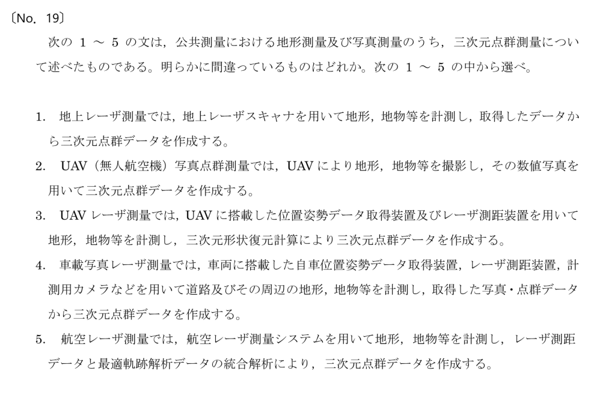
三次元点群測量の各手法（航空レーザ・UAV 写真・UAV レーザ・車載写真レーザ）に関する正誤判定。
UAVレーザ測量には「三次元復元計算」の工程は含まれない。三次元復元計算はUAV 写真点群測量の工程で、撮影された数値写真と標定点から外部標定要素・特微点座標を求め、地形地物の三次元形状を復元する作業。問題文は UAV レーザの工程と写真点群の工程を取り違えている。
次の 1～5 の文は，公共測量における UAV（無人航空機）レーザ測量について述べたものである。 明らかに間違っているものはどれか。次の 1～5 の中から選べ。
📄 原典の問題ページ（画像）
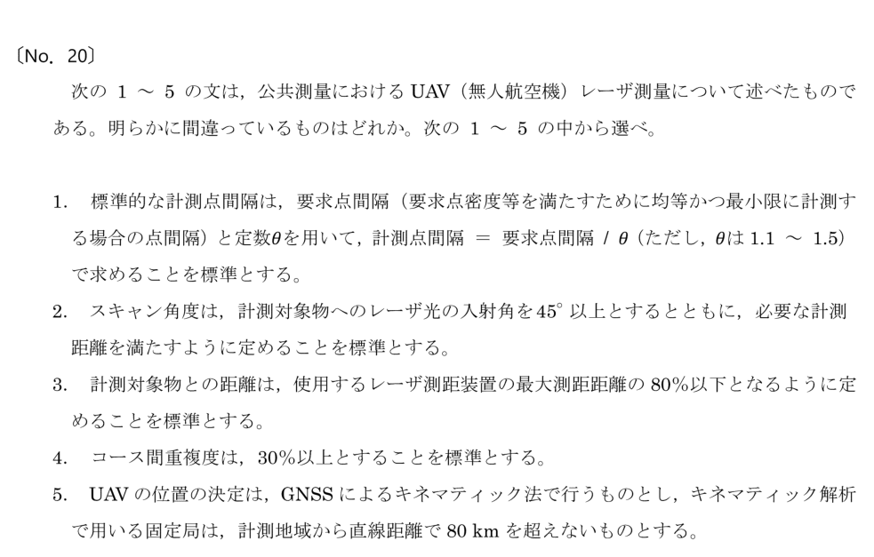
UAV レーザ測量に関する正誤判定。各種レーザ測量・固定局運用の基準を理解しているかが問われる。
UAV レーザ測量の固定局位置は、計測区域から直線距離で 50 km 以内を超えない点を用いる。問題文の「80 km」は誤り。他の測量方法と区別：
・空中写真測量：固定局は撮影区域内との基線距離 50 km 以内
・UAV レーザ測量：計測区域から 50 km 以内
・車載写真レーザ測量：固定局と取得区間との基線距離 10 km 以内（原則）
・航空レーザ測量：固定局は計測対象区域内の基線距離 50 km 以内
図 21 は，国土地理院刊行の電子地形図 25000 の一部(縮尺を変更)である。次の 1～5 の文は，こ の図に表現されている内容について述べたものである。明らかに間違っているものはどれか。次の 1～5 の中から選べ。
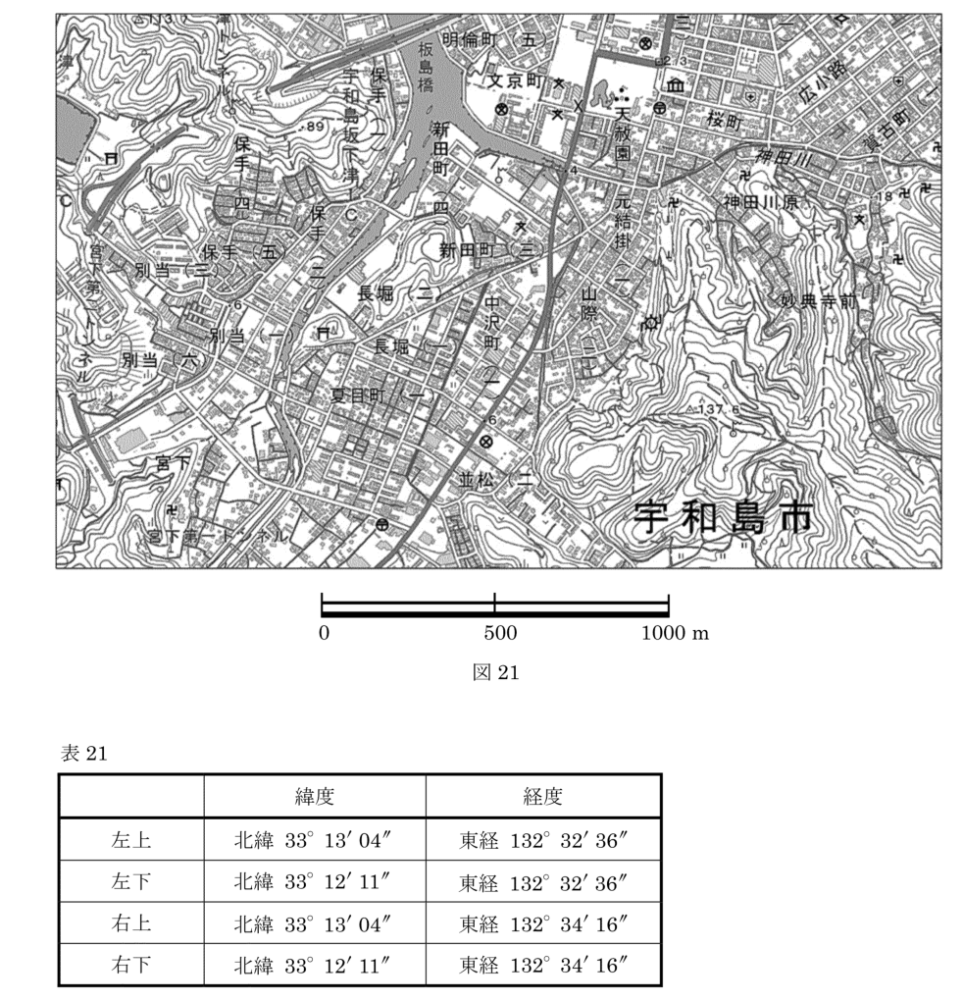
図 21 の電子地形図 25,000 から、距離・標高・経緯度・斜距離・崖の比高を判読し正誤判定する問題。25,000 分の 1 では地図上 1 cm = 実距離 250 m。
図郭左下の経緯度値と縮尺から比例計算すると、交番の経緯度はおおよそ 緯度 33°12'55"、経度 132°33'35" となる。問題文の経緯度値はこの計算結果と一致しないため誤り。
地図投影法は，経緯線網の形状によって，円筒図法，円錐図法，方位図法などに分類できる。方 位図法で描かれた地図はどれか。次の1～5の中から選べ。
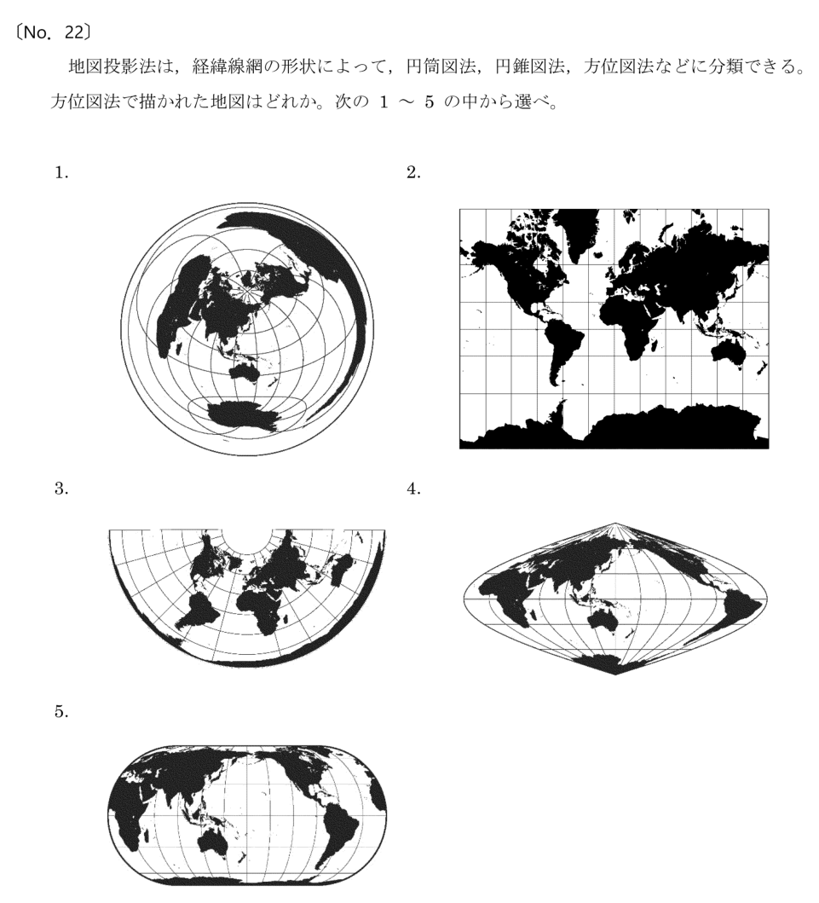
地図投影法を経緯線網の形（見た目）だけで分類する問題。図法の名前を丸暗記していなくても、投影のしくみを理解していれば図から判別できる。
円筒・円錐・方位という区分は、地球を何の面に投影したかによる分類である。地球に紙を巻きつける（あるいは当てる）様子を想像すると、経緯線の形は自然に決まる。
・円筒図法… 地球に円筒を巻きつけて投影し、切り開く。円筒を開けば長方形なので、経線・緯線はいずれも直交する直線になり、地図全体は長方形になる。
・円錐図法… 地球に円錐をかぶせて投影し、切り開く。円錐を開くと扇形になるため、経線は一点から広がる放射状の直線、緯線はその点を中心とする同心円の弧となり、地図全体は扇形になる。
・方位図法… 地球に平面を 1 点で接するように当てて投影する。接点を中心とする円形の地図になり、中心からの方位が正しく表されるのが最大の特徴。極を接点にすると、経線は中心から放射状に伸び、緯線は同心円になる。
・選択肢 1… 全体が円形で、北極を中心に経線が放射状、緯線が同心円。平面に投影した形そのもので 方位図法。
・選択肢 2… 長方形で経線・緯線が直交する直線。円筒図法の仲間（正距円筒図法など）。
・選択肢 3… 扇形で、経線が放射状の直線、緯線が同心円の弧。円錐図法。
・選択肢 4… 木の葉のような形で、経線が極に向かって曲がって集まり、緯線は水平な直線。円筒図法を変形した擬円筒図法（サンソン図法など）。
・選択肢 5… 角の丸い長方形に近い形。見た目の自然さを優先して数式的性質を妥協した折衷図法（ロビンソン図法など）。
選択肢 1 と 3 はどちらも「経線が放射状・緯線が同心円」で似て見えるが、地図全体の輪郭で確実に区別できる。方位図法は平面に投影するので完全な円になり、円錐図法は扇を開いた形なので一周せず扇形にとどまる。輪郭が閉じた円か、開いた扇形か。ここだけ見れば迷わない。
次の1～5の文は，GISの機能を使った地理空間情報の利用に関して述べたものである。明らかに 間違っているものはどれか。次の1～5の中から選べ。
📄 原典の問題ページ（画像）
GIS の機能と活用方法に関する正誤判定。DTM/DSM の違いや GIS 解析機能の正確な理解が問われる。
建築物の高さを算出するには DSM（数値表層モデル）と外周線データの組合せが必要。DTM（数値標高モデル）は地表面のみの標高を表すため、樹木や建物の高さ情報を含まない。問題文の「DTM」では建物高は求められない。
次の 1 〜 5 の文は、国土地理院がインターネットで提供している地図「地理院地図」をはじめとするウェブブラウザ上でシームレスに移動・拡大・縮小できる二次元の地図（以下「ウェブ地図」という。）について述べたものである。明らかに間違っているものはどれか。次の 1 〜 5 の中から選べ。
📄 原典の問題ページ（画像）
地理院地図をはじめとするウェブ地図の配信・投影法に関する正誤判定。
現代のウェブ地図配信は、XYZ 方式（あらかじめタイル分割したデータを配信）が主流。問題文の WMS 方式（リクエスト毎にサーバで切り抜く）は表示速度が遅いため、過去には主流だったものの現在は XYZ 方式に置き換わっている。
図25のように，国道と県道に接続する道路の建設を計画している。国道と県道はいずれも直線 である。新設する道路 P1 ～ P6 は，学校用地を避けて建設する予定で，基本型クロソイド（対称 型）とする。点 P2 及び点 P5 はクロソイド曲線始点，点 P3 及び点 P4 はクロソイド曲線終点，曲 線 P3 ～ P4 は円曲線である。また，直線 P1 ～ P2 と国道，直線 P5 ～ P6 と県道は直交するもの とする。このとき，新設する道路 P1 ～ P6 の路線長は幾らか。最も近いものを次の1～5の中か ら選べ。
ただし、円曲線の曲線半径 R ＝ 100 m、クロソイドパラメータ A ＝ 90 m、交角 I ＝ 90°、直線 P1 〜 P2 の長さは 230 m、直線 P5 〜 P6 は 110 m とし、クロソイド曲線終点の曲線半径は円曲線の曲線半径に一致させるものとする。
また、対象とする土地は平たんなものとする。
なお、円周率 π ＝ 3.142 とする。
基本型クロソイド（対称型）で国道と県道を結ぶ路線の総延長を求める計算問題。与件：R = 100 m、A = 90 m、交角 I = 90°、直線 P1〜P2 = 230 m、P5〜P6 = 110 m、π = 3.142。
クロソイドの基本式 A² = R·L より：
交角 I = 90° = π/2 ≒ 1.571 rad のうち、両側のクロソイドが 2τ を受け持つので、円曲線の中心角は：
1.571 − 2 × 0.405 = 0.761 rad
230（直線）+ 81（クロソイド）+ 76.1（円曲線）+ 81（クロソイド）+ 110（直線）= 578.1 m
次の1～5の文は，公共測量における用地測量について述べたものである。明らかに間違ってい るものはどれか。 次の1～5の中から選べ。
📄 原典の問題ページ（画像）
用地測量における境界測量・面積計算の手順に関する正誤判定。
用地測量の面積計算は座標法で行うのが原則（作業規程の準則）。問題文の「三斜法」は誤り。三斜法は古典的手法で精度面でも座標法に劣る。座標法は座標値から自動計算でき誤差伝播も明確。
図 27 は、境界点 A、B、C を順に直線で結ぶ境界線 ABC で区割りされた甲及び乙の所有する土地を示しており、表 27 は、トータルステーションを用いて境界線の測量を行い、水平角 α、β 及び距離 S₁、S₂ を測定した結果である。甲及び乙の所有する土地の面積が変わらないように整正するため、新たに境界線 AP を設けることとした。このとき、CP 間の距離を幾らにすればよいか。最も近いものを次の 1 〜 5 の中から選べ。
ただし、甲及び乙の所有する土地は平たんなものとする。
| α | β | S₁ | S₂ |
|---|---|---|---|
| 135°00′00″ | 300°00′00″ | 40.000 m | 36.000 m |
折れ線 A−B−C だった境界を、甲乙の面積を変えずに直線 A−P に引き直す境界整正の問題。
最初に何が起きているかを押さえる。新しい境界 A−P は、図を見ると B のところでは旧境界より上を通り、C のところでは旧境界より下（P は C より手前）を通る。つまり甲は B 付近で土地を失い、C 付近で取り返している。この失う分と得る分がちょうど釣り合うように P を決めればよい。
式にすると、A → B → C → P → A と一周した閉じた多角形の符号付き面積がゼロという条件になる。
A を原点、A→B の向きを X 軸の正方向にとる。S₁ ＝ 40.000 m なので B はすぐ決まる。
α ＝ 135°00′00″ は B における内角（BA から BC までの角）なので、B→C の向きは X 軸から 180° − 135° ＝ 45° 上を向く。S₂ ＝ 36.000 m だから
ΔX ＝ 36.000 × cos45° ＝ 25.456 ／ ΔY ＝ 36.000 × sin45° ＝ 25.456
C→B の向きは、B→C の逆なので 45° ＋ 180° ＝ 225°。ここから β ＝ 300°00′00″ だけ時計回りに回ると道路の下り方向になる。
求める CP 間距離を d とおくと、P の座標は次のように書ける。
A → B → C → P → A の符号付き面積を座標法で書き、これを 0 とおく。
A→B：0 × 0 − 40.000 × 0 ＝ 0
B→C：40.000 × 25.456 − 65.456 × 0 ＝ ＋1,018.24
C→P：65.456 × yP − xP × 25.456
P→A：xP × 0 − 0 × yP ＝ 0
ここに P の式を代入すると、C の座標に由来する項どうしが打ち消し合い、d だけが残る。
25.456 × 0.25882 ＝ 6.588 ／ 65.456 × (−0.96593) ＝ −63.226 なので、括弧の中は 6.588 ＋ 63.226 ＝ 69.814。
次の a〜e の文は，公共測量における河川測量について述べたものである。 明らかに間違って いるものだけの組合せはどれか。次の1～5の中から選べ。
📄 原典の問題ページ（画像）
河川測量に関する正誤判定。水準測量・深浅測量・水位観測の各手法の使い分けが問われる。
定期縦断測量は、山地では 4 級水準測量、平地では 3 級水準測量を行う。地形・地物等の状況によっては 4 級ではなく簡易水準測量とする。問題文の手法・適用区分が誤っている。
深浅測量で水深を測定するのは音響測深機（音波利用）であり、電波式水位計ではない。両者の用途は異なる：
・電波式水位計：マイクロ波で水位を測定（ダム・河川・工場の連続水位監視）
・音響測深機：音波で水深を測定（海底・湖底の地形測量）
令和5年度（R5）測量士試験 午前 全28問解説
次のａ～ｅの文は、測量法（昭和24年法律第188号）に規定された事項について述べたものである。明らかに間違っているものだけを全て含む組合せはどれか。
📄 原典の問題ページ（画像）
測量法の規定に関する正誤判定。各記述を条文と照合する。
公共測量の定義の後半部分が誤り。正しくは「国又は公共団体からの補助を受けて行う測量を含む」（測量法 第1条・第5条）。負担を受けて行う測量だけでなく、補助も含めて公共測量と定義される。
永久標識・一時標識の通知先は関係都道府県知事（測量法 第21条・第39条）。問題文の「関係市町村長」は誤り。都道府県知事が受けた通知を市町村長へ転達する流れになっている（第21条第2項）。
定義が逆。「基本測量及び公共測量以外の測量」とは、基本測量又は公共測量の成果を使用して実施する測量を指す（測量法 第6条）。「以外の測量成果を使用」では定義そのものが破綻する。
次のａ～ｅの文は，国際地球基準座標系（以下「ITRF」という。）について述べたものである。明らかに間違っているものだけを全て含む組合せはどれか。次の中から選べ。
📄 原典の問題ページ（画像）
ITRF（国際地球基準座標系）の構造と、日本の測地成果との関係を問う正誤判定。
ITRF は地球の重心を原点とする三次元直交座標系で、各軸は次のように定められている。
Y 軸 … 東経 90° と赤道の交点方向が正
Z 軸 … 自転軸の北方向が正
この定義を押さえたうえで、地点の座標は緯度 φ・経度 λ を用いて X ∝ cos φ・cos λ、Y ∝ cos φ・sin λ、Z ∝ sin φ と表せる、と理解しておくと符号の判断が確実になる。
ITRF では地球上の位置を、地球の重心を原点とする三次元直交座標 (X, Y, Z) で表現する。緯度・経度・高さで表す測地座標とは別の表し方で、両者は相互に変換できる。記述のとおり。
ITRF は地殻変動の観測結果を取り込みながら数年おきに更新されているが、日本の測地成果がそれに自動で連動することはない。
測地成果は測量の基準として法令に位置づけられており、変えるには所定の手続きを踏む必要がある。全国の基準点成果を一斉に書き換えれば、地図・登記・各種台帳のすべてに影響が及ぶためである。実際、測地成果2011（JGD2011）は ITRF2008 を基準として固定されたものであり、その後 ITRF が更新されても直ちに追随してはいない。したがって「連動して更新される」とするこの記述は誤り。
X 軸は回転楕円体の中心と、経度 0° の子午線・赤道の交点を通る直線であり、その交点に向かう向きが正である。冒頭の定義どおりで正しい。
Y 軸は回転楕円体の中心と、東経 90° の子午線・赤道の交点を通る直線で、その交点に向かう向きが正。X 軸と Z 軸を決めれば、右手系であることから Y 軸の向きは自動的に東経 90° 側に決まる。記述のとおり。
前半の「日本列島では X＜0、Y＞0、Z＞0」は正しい。日本は東経 120〜150° 付近にあるので cos λ＜0 より X＜0、sin λ＞0 より Y＞0、北半球なので Z＞0 となる。
誤っているのは後半のベクトルの符号である。札幌市役所（およそ北緯 43°、東経 141°）から那覇市役所（およそ北緯 26°、東経 128°）へ向かうベクトルを、上の関係式で確かめる。
ΔX：cos43°・cos141° ＝ 0.731 ×(−0.781) ＝ −0.571 → cos26°・cos128° ＝ 0.897 ×(−0.612) ＝ −0.549 より ΔX ＞ 0（正）
ΔY：cos43°・sin141° ＝ 0.731 × 0.625 ＝ 0.457 → cos26°・sin128° ＝ 0.897 × 0.791 ＝ 0.710 より ΔY ＞ 0（正）
ΔZ：sin43° ＝ 0.683 → sin26° ＝ 0.442 より ΔZ ＜ 0（負）
したがって符号は (正, 正, 負) であり、記述の「(負, 正, 負)」とは ΔX の符号が食い違う。
直感的には、那覇のほうが赤道に近いぶん自転軸から遠く（cos φ が大きく）、かつ経度が本初子午線の真裏（東経 180°）から遠ざかるため、負であった X が 0 に近づく——つまり増加する、と捉えられる。
次の文は、地理情報標準プロファイル（以下「JPGIS」という。）について述べたものである。明らかに間違っているものはどれか。次の中から選べ。
📄 原典の問題ページ（画像）
JPGIS（地理情報標準プロファイル）に関する正誤判定。JPGIS は ISO 19100 系・JIS X 7100 系を国内向けに整理した標準で、地理空間データの標準的な記述方法を定義する。
地理空間データの符号化は XML（拡張可能なマークアップ言語）で行う。UML（統一モデル化言語）はスキーマ記述に用いるツールであり、データの符号化そのものには使わない。問題文では UML と XML の役割を取り違えている。
図4に示すような三次元直交座標系において、ある点（x，y，z）をz軸のまわりに図4に示す方向にθzだけ回転させたときの点（x'，y'，z'）は式4で表される。式4を参考に、点（x，y，z）をy軸のまわりに図4に示す方向に30°だけ回転させたとき、回転後の点（x"，y"，z"）を表す数式として最も適当なものはどれか。
三次元直交座標の回転行列に関する問題。z 軸まわりの回転式（式 4）が与えられ、y 軸まわりに 30°回転させたときの変換式を求める。
各軸まわりの回転では、その軸の成分は不変なので、対応する行・列に「1」が入る：
・x 軸まわり → 左上に 1（x成分不変）
・y 軸まわり → 真ん中に 1（y成分不変）
・z 軸まわり → 右下に 1（z成分不変／問題の式 4）
θ = 30° を代入。cos 30° = √3/2、sin 30° = 1/2 なので：
この行列形式に一致する選択肢は 選択肢 5。
測量の誤差について述べた次の文の空欄ア～ウに入る語句又は数値の組合せとして最も適当なものはどれか。正規分布の確率密度関数は平均値μ、標準偏差σのとき、【ア】で表される。ある距離の測定値について、平均値100.000m、標準偏差0.012mの結果を得た。観測距離が100.020m以上となる確率を求める場合、式5のZの値として【イ】を用い、正規分布表（上側確率）から【ウ】%を得る。
正規分布の確率密度関数（ア）と、標準化してから正規分布表で確率を読み取る手順（イ・ウ）の穴埋め問題。平均 μ = 100.000 m、標準偏差 σ = 0.012 m。
f(x) = 1/(√(2π)·σ) × exp{ −(x−μ)² / (2σ²) }。指数関数 exp を含み、肩の分母が 2σ²（σ の 2 乗）になっているものが正しい形。
選択肢には exp が抜けた式（カッコの 2 乗だけの式）が混ざっており、これらは誤り。
式 5 の標準化 Z = (x − μ) / σ に、x = 100.020 m を代入：
表 5 で Z = 1.67（行 1.6・列 .07）を引くと 0.04746。つまり観測距離が 100.020 m 以上となる確率は：
「正しい確率密度関数の式 ＋ イ=1.67 ＋ ウ=4.7」がそろうのは選択肢 3。選択肢 5 はイ・ウが同じでもアの式に exp がないため誤り（ひっかけ）。
次のａ～ｄの文は，測量の基準について述べたものである。明らかに間違っているものだけを全て含む組合せはどれか。次の中から選べ。
📄 原典の問題ページ（画像）
測量の基準に関する記述で、すべての記述に誤りが含まれる正誤判定。a〜d を順に検証する。
位置は地理学的経緯度＋平均海面からの高さで表す（測量法 第11条1）。問題文の「地心緯度」は誤り。地心緯度は地心と地表面を結ぶ角度で、測地緯度（地理学的経緯度）とは異なる。
距離・面積は回転楕円体の表面上の値で表す（第11条2）。「ジオイドの表面上の値」は誤り。ジオイドは高さ（標高）の基準で、距離・面積の基準ではない。
ジオイドは高さを求める測量の基準面。「水平位置を求める測量の基準面」は誤り。水平位置の基準は回転楕円体面。
平面直角座標系は X軸が子午線方向（南北）、Y軸が東西（平成 14 年国土交通省告示第 9号）。「Y軸を子午線に一致」は誤り。
公共測量におけるトータルステーション（TS）による距離の測定について述べた文で、明らかに間違っているものはどれか。
📄 原典の問題ページ（画像）
TS（トータルステーション）による距離測定の原理に関する正誤判定。
気圧が下がると空気が薄くなり、大気の屈折率が小さくなる。屈折率が小さいほど光波は速く進むので、往復にかかる時間は短くなり、機器が算出する距離は見かけ上短く出る。
気温が上がったときと同じ向きの現象で、どちらも「空気が薄くなる → 光が速い → 距離が短く出る」という一本の理屈で説明できる。記述のとおり。
測距儀は経年により器械定数がわずかにずれていくため、定期的な検定が必要になる。検定は国土地理院に登録された比較基線場で行う。長さがあらかじめ高精度に決められた基線を実測し、器械が出す値との差から器械定数を求める仕組みである。
前回の検定から 1 年が経過した時点で検定を受けたという対応は適切。記述のとおり。
位相差測定で得られる距離は「光波の往復距離」。実際の距離（片道）は、得られた値を2 で割る必要がある。問題文の式では 2 で割る処理が抜けており、距離が 2 倍になってしまう。
公共測量におけるトータルステーションを用いた 1 級基準点測量において、図 8 に示すように、標高 16.10 m の点 A と標高 94.70 m の点 B との間の距離及び高低角の観測を行い、表 8 の観測結果を得た。D を斜距離、αA を点 A から点 B 方向の高低角、αB を点 B から点 A 方向の高低角、iA・fA を点 A の器械高及び目標高、iB・fB を点 B の器械高及び目標高とするとき、点 A、点 B 間の基準面上の距離は幾らか。最も近いものを次の中から選べ。
ただし、地球の平均曲率半径は 6,370 km、点 A、点 B のジオイド高を平均した値は 43.00 m を用いるものとする。また、D は気象補正等必要な補正が既に行われているものとする。
| αA | 3°59′45″ |
| αB | −4°00′15″ |
| D | 1,125.400 m |
| iA、fA | 1.650 m |
| iB、fB | 1.550 m |
TS による 1 級基準点測量で、点 A（標高 16.10 m）と点 B（標高 94.70 m）間の基準面上の距離を求める計算問題。作業規程の準則 付録 6 の式を使用。
α_A = 3°59'45"、α_B = −4°00'15" なので：
cos 4° ≒ 0.99756
点 A 側：H_A + f_A = 16.10 + 1.650 = 17.75 m
点 B 側：H_B + f_B = 94.70 + 1.550 = 96.25 m
ジオイド高 N = 43.00 m を加算 → 基準面までの平均高さ = 57 + 43 = 100 m
公式：S = D × cos((α_A − α_B)/2) × R / (R + 平均標高 + N)
D = 1,125.400 m、R = 6,370,000 m（地球平均曲率半径）として：
次の文は、公共測量におけるGNSS測量機を用いた基準点測量について述べたものである。明らかに間違っているものだけの組合せはどれか。
📄 原典の問題ページ（画像）
GNSS 測量機を用いた基準点測量に関する正誤判定。観測条件・解析手法を区別する。
スタティック法で 10 km 以上の観測を行う場合、GPS・準天頂衛星・GLONASS を併用するなら 6 衛星以上必要（GPS/QZS のみなら 5 衛星以上）。問題文の「5 衛星以上」は GLONASS 併用時の規定として誤り。
キネマティック法は単独測位ではない。固定局を設置し、移動局を複数の観測点に順次移動させて基線ベクトルを求める相対測位手法。「単独測位」は誤り。
公共測量におけるGNSS測量機を用いた基準点測量を既知点A及び新点Bにおいて行い、既知点Aから新点Bまでの基準面上の距離10,000.00m、新点Bの楕円体高72.50mを得た。新点Bの標高は幾らか。また、既知点Aから新点Bの方向におけるジオイド面の楕円体面に対する1,000.00m当たりの傾斜量は幾らか。最も近い数値の組合せを次の中から選べ。既知点Aの標高は34.00m、楕円体高は68.50m、新点Bのジオイド高は34.60m、ジオイド面は楕円体面に対して一様に傾斜しているものとする。
📄 原典の問題ページ（画像）
GNSS で得た楕円体高から、新点 B の標高とジオイド面の傾斜量を求める計算問題。基本関係式：楕円体高 = 標高 + ジオイド高。
N_A = 楕円体高 − 標高 = 68.50 − 34.00 = 34.50 m
新点 B のジオイド高 N_B = 34.60 m、楕円体高 H_B = 72.50 m
これは A の標高 34.00 m と楕円体高差を取った値（h_A + (H_B − H_A) = 34 + 4 = 38 m）とほぼ一致するが、ジオイド傾斜を考慮するため細かい数値で計算する。
A〜B 間の距離 = 10,000 m、ジオイド高の差 ΔN = N_B − N_A = 34.60 − 34.50 = +0.10 m
標高約 38 m＋傾斜量 +0.01 m の組合せ → 選択肢 3。
公共測量による水準測量（GNSS水準測量）について述べた文の中から、明らかに間違っているものを選べ。
📄 原典の問題ページ（画像）
公共測量における GNSS による水準測量（GNSS 水準測量）に関する正誤判定。作業規程の準則・標高測量マニュアルを参照。
電子基準点のみを既知点とする場合、セミ・ダイナミック補正は不要。以前は必要だったが、マニュアル改訂により不要となった（GNSS測量による標高の測量マニュアル）。問題文の「補正を行う必要がある」は現行ルールと異なるため誤り。
公共測量における水準測量の検測及び計算について述べた次の文の空欄ア～ウに入る語句の組合せとして最も適当なものはどれか。
📄 原典の問題ページ（画像）
公共測量における水準測量の検測・計算手順を当てはめる穴埋め問題（作業規程の準則 第66条・第67条）。
1 級・2 級水準測量の検測は「片道観測を原則とする」（第66条一）。検測は元の観測と独立な検証手段として行うため、簡素な片道観測で誤差の有無を確認する。「往復観測」では検測の意味を成さない。
標尺補正計算と並んで、1 級・2 級水準測量に対して正規正標高補正計算（楕円補正）を行う（第67条一）。正規正標高補正は重力場の不均一性を補正する標準的な手法。
1 級水準測量においては、正規正標高補正計算に代えて正標高補正計算（実測の重力値による補正）を用いることができる。これは正規重力ではなく実測重力で補正するためより正確（ただし手間がかかる）。
既知点 A 及び既知点 B から新点 P の標高を求めるため、公共測量における 1 級水準測量を行い、表 13−1 の結果を得た。標尺補正を行った後の新点 P の標高の最確値は幾らか。最も近いものを次の中から選べ。
ただし、既知点 A 及び既知点 B の標高は表 13−2 のとおりであり、この観測で使用した標尺の標尺改正数は 20℃において +5 μm/m、膨張係数は +1.0×10⁻⁶/℃ である。
| 区間 | 距離 | 観測高低差 | 観測時の平均気温 |
|---|---|---|---|
| A → P | 2 km | −16.1435 m | 15℃ |
| P → B | 1 km | −67.0123 m | 20℃ |
| 既知点 | 標高 |
|---|---|
| A | 161.7500 m |
| B | 78.5918 m |
1 級水準測量で、既知点 A・B から新点 P の標高を求める計算問題。標尺補正を施した後、観測距離による重量平均で最確値を求める。
・C₀：標尺改正数（+5 μm/m） ・T：観測温度 ・T₀：基準温度 (20℃)
・α：膨張係数 (+1.0×10⁻⁶ /℃) ・Δh：観測高低差
係数 = 5.0×10⁻⁶ + (15 − 20) × 1.0×10⁻⁶ = 5×10⁻⁶ − 5×10⁻⁶ = 0
→ 補正量 ΔC_A = 0（係数がゼロのため）
係数 = 5.0×10⁻⁶ + (20 − 20) × 1.0×10⁻⁶ = 5×10⁻⁶
補正量 ΔC_B = 5×10⁻⁶ × (−67.0123) ≒ −0.0003 m
距離比 A→P : P→B = 2 km : 1 km → 重量比 = 1/2 : 1/1 = 1 : 2（距離の逆数が重量）
トータルステーション(TS)を用いて既知点Aから求点Bの高低差Zを観測した。斜距離D₀=200.000m、高低角θ₀=30°00'00"のとき、高低差Zの標準偏差σZを求めよ。距離測定精度は(5+5×10⁻⁶D)mm、角度測定精度は5"。
TS で測った高低差 Z = D·sinθ の標準偏差 σ_Z を、誤差伝播の法則で求める問題。距離 D と高低角 θ それぞれの測定誤差が Z に与える影響を合成する。
第1項が距離測定による誤差、第2項が角度測定による誤差。角度 σ_θ は必ずラジアンに直してから使う。
・D = 200 m = 200,000 mm、θ = 30°（sinθ = 0.5、cosθ = 0.866）
・距離精度 σ_D = 5 + 5×10⁻⁶ × 200,000 = 5 + 1 = 6.0 mm
・角度精度 σ_θ = 5″ ÷ 206,265 ≒ 2.42×10⁻⁵ rad（1 rad = 206,265″）
・距離項 = sinθ·σ_D = 0.5 × 6.0 = 3.0 mm
・角度項 = D·cosθ·σ_θ = 200,000 × 0.866 × 2.42×10⁻⁵ ≒ 4.2 mm
公共測量による地形測量のうち、GNSS測量機を用いた現地測量について述べたもので、明らかに間違っているものはどれか。
📄 原典の問題ページ（画像）
GNSS 測量機を用いた現地測量（地形・地物の測量）に関する正誤判定。
キネマティック法・RTK 法のセット間較差の許容範囲は水平 20 mm、高さ 30 mm。垂直方向は精度劣化が大きいため許容値が大きく設定される。問題文の「いずれも 20 mm」は誤り（第123条）。
公共測量における地上レーザスキャナを用いた数値地形図データ作成について、明らかに間違っているものだけの組合せを選べ。
📄 原典の問題ページ（画像）
公共測量における地上レーザスキャナを用いた数値地形図データ作成に関する正誤判定。
同一箇所から複数回計測する場合、地上レーザスキャナの器械高は変えるのが原則（第377条 9 項）。同じ高さだと同じ死角を繰り返してしまうため。「変えないようにする」は誤り。
地図情報レベル 500 の数値地形図データを作成する場合、標定点の精度（標準偏差）は水平位置・標高ともに 0.1 m 以内（第372条）。問題文の「0.2 m 以内」は誤り。
公共測量におけるデジタル航空カメラを鉛直下に向けた空中写真撮影を行うに当たり、標高が150mから350mまでの範囲にある土地を、撮影範囲全体にわたって隣接するコースの数値写真との重複度が最小で35%となるように計画した。撮影基準面の標高を150mとするとき、隣接コースの数値写真との重複度は最大何%となるか。ただし、使用するデジタル航空カメラの画面距離は10cm、撮像面での素子寸法は6μm、画面の大きさは17,000画素×11,000画素とし、画面短辺が撮影基線と平行であるとする。また、空中写真撮影は等高度かつコースの間隔を一定で行うものとし、撮影基準面での地上画素寸法は15cmとする。
📄 原典の問題ページ（画像）
デジタル航空カメラを鉛直下に向けた空中写真撮影で、撮影基準面でのオーバーラップ率を求める計算問題。
公式：H = (画面距離 × 地上画素寸法) ÷ 素子寸法
幅 = 画素数 × 地上画素寸法 = 11,000 × 0.15 = 1,650 m
標高 350 m 上では撮影機からの距離が H − 200 = 2,300 m（撮影基準面 150 m から計算）
重複部分（35%）= 1,518 × 0.35 ≒ 531 m
非重複部分（撮影基線長）= 1,518 − 531 = 987 m
撮影基準面での重複長 = 1,650 − 987 = 663 m
次の文は、UAVにより撮影した数値写真を用いて三次元点群データを作成する作業について述べたものである。明らかに間違っているものはどれか。
📄 原典の問題ページ（画像）
公共測量における UAV 写真点群測量に関する正誤判定。
標定点は外側 3 点以上・内側 1 点以上に設置するが、検証点とは別に配置する必要があり、兼ねることはできない（第414条 2 項）。検証点は標定点からできるだけ離れた場所に独立に設置するのが規定。問題文の「検証点を兼ねることができる」は誤り。
数値地形モデルを作成するため、計測時の対地高度2,000mで航空レーザ測量を実施した。このとき、航空機直下の地表面における進行方向の計測間隔は幾らか。ただし、使用する航空レーザ測量機の走査方式はオシレーティングミラー方式で、走査角は最大±30°、1秒当たりの走査回数は105往復（1往復で行きと帰りの測線各1本）、航空機の計測時の対地飛行速度は秒速70mとする。
📄 原典の問題ページ（画像）
航空レーザ測量で、進行方向の計測間隔を求める計算問題。スキャンレートと飛行速度から算出する。
スキャナは 1 往復で 2 本の測線を生成（往き・帰り）。スキャンレート 105 往復/秒 なので：
公式：計測間隔 = 対地飛行速度 ÷ 1 秒あたりの測線数
対地飛行速度 = 70 m/秒：
※ パルスレート（毎秒の照射回数）は別パラメータで、進行方向の計測間隔には直接関係しない。スキャンレート＋飛行速度の比率がポイント。
公共測量における車載写真レーザ測量について、明らかに間違っているものを選べ。
📄 原典の問題ページ（画像）
車載写真レーザ測量に関する正誤判定。
着脱式システムのキャリブレーション有効期間は6 か月を標準とする。固定式システムは 1 年。問題文の「1 年を標準」は着脱式の規定としては誤り。
ある島を国土地理院のウェブ地図「地理院地図」で示したもの。この島の地形を真南から真北に向かって平行に投影した図として最も適当なものはどれか。（一番標高が高いのは前岳で628.5m、位置は中央よりも東側。二番目に標高が高いのは横岳501m、西側。）
地形図上で南から北へ投影した断面図を選ぶ判読問題。各山の標高と位置から断面図の正誤を判定する。
・前岳：628.5 m（地図中央のやや東）= 最高峰
・横岳：501 m（西側）
・嶽岳：425 m、棚木山：453.5 m（東側）
・計曲線間隔 50 m、主曲線間隔 10 m
・選択肢 1：西側に 550 m を超える山があるように描かれているが、実際は横岳 501 m が最高 → 誤り
・選択肢 2：600 m を超える峰が 2 つ描かれているが、実際は前岳のみ → 誤り
・選択肢 3：前岳の東側に 400 m を超える峰が描かれているが、地図と矛盾 → 誤り
・選択肢 4：前岳のみが 600 m を超え、他は約 580 m に達する → 地図と整合
・選択肢 5：西部分が 600 m に達していない → 誤り
次の文は、ウェブ地図の一つである「地理院地図」や地図投影法について述べたものである。明らかに間違っているものはどれか。
📄 原典の問題ページ（画像）
地理院地図と地図投影法に関する正誤判定。Web メルカトル図法と UTM 図法の違いを理解しているかが問われる。
地理院タイルの投影法は Web メルカトル図法（Google が開発、Web 地図のデファクト標準）。1/25,000 地形図はユニバーサル横メルカトル（UTM）図法を採用。両者は別の図法で、問題文の「同様にUTM」は誤り。
数値地形モデル（DTM）の活用について述べた次の文の中から、明らかに間違っているものを選ぶ問題。
📄 原典の問題ページ（画像）
DTM（数値地形モデル）の活用に関する正誤判定。DTM は地表面のみの標高データで、建物や樹木の高さを含まない点が要点。
DTM（地表面のみ）と建築物の外周線（平面情報のみ・高さ情報なし）の組合せでは、建築物の高さは求められない。建物高を求めるには DSM（数値表層モデル：建物・樹木含む）が必要。
地理空間情報活用推進基本法における基盤地図情報について述べた5つの文のうち、「明らかに間違っているものだけの組合せ」を選択する問題。
📄 原典の問題ページ（画像）
地理空間情報活用推進基本法における基盤地図情報に関する正誤判定。
基盤地図情報の 13 項目には道路中心線は含まれない。正しくは「道路縁」が該当項目。13 項目：測量基準点、海岸線、公共施設の境界線（道路区域界・河川区域界）、行政区画境界・代表点、道路縁、河川堤防、軌道中心線、標高点、水涯線、建築物の外周線、町字境界・代表点、街区境界・代表点。
都市計画区域内の高さの誤差は 1.0 m 以内。問題文の「5.0 m 以内」は誤り（区域外は 5.0 m 以内が正しい）。
点Pを始点、点Qを終点とする基本型クロソイド（対称型）の道路建設において、円曲線部の半径R=180m、交角I=60°、クロソイドパラメータA=110m、円周率π=3.142のとき、点Pから点Qまでの路線長を求めよ。
基本型（対称型）クロソイドの路線長を求める問題。線形は「クロソイド（長さ L）→ 円曲線 → 同じクロソイド（長さ L）」とつながる。R = 180 m、交角 I = 60°、A = 110 m、π = 3.142。
基本公式 A² = R·L より L = A² / R。
クロソイド1本が消化する接線角は τ = L/(2R)。対称型では両端で 2τ = L/R を使うので、円曲線の中心角は α = I − L/R（rad）。
よって Lc = R·α = R·I[rad] − L。I = 60° = π/3 rad なので、
Lc = 188.52 − 67.2 = 121.3 m
公共測量における用地測量について述べた5つの文のうち、明らかに間違っているものを選ぶ問題。
📄 原典の問題ページ（画像）
公共測量における用地測量に関する正誤判定。
補助基準点を設置する際の開放多角測量では、辺長 100 m 以内、節点は 1 点以内が基準（作業規程の準則 第681条）。問題文の「節点 2 点」は誤り。
境界点 A、B、C、D で囲まれた四角形の土地の面積を求めたい。点 C は直接観測できないため、補助基準点 P を設置し、点 A、B、P、D をトータルステーションを用いて測量し、表 27 に示す平面直角座標系（平成 14 年国土交通省告示第 9 号）における座標値を得た。点 A、B、C、D で囲まれた四角形の土地の面積は幾らか。最も近いものを次の中から選べ。
ただし、補助基準点 P から点 C までの距離は 10.000 m、点 P における点 C の方向角は 330° とする。
| 点 | X 座標値 (m) | Y 座標値 (m) |
|---|---|---|
| A | −14,015.500 | −9,625.000 |
| B | −14,012.000 | −9,615.500 |
| P | −14,032.000 | −9,605.000 |
| D | −14,025.500 | −9,630.500 |
四角形 ABCD の面積を座標法（シューレースの公式）で求める問題。点 C は直接観測できないので、補助基準点 P から距離 S=10.000 m・方向角 330° で C の座標を出してから求積する。
P → C の変位を方向角から求める（X=北、方向角は北から時計回り）。
・ΔX = S·cos330° = 10 × 0.8660 = +8.660 m
・ΔY = S·sin330° = 10 × (−0.500) = −5.000 m
P(−14,032.000, −9,605.000) に加えて C ≒ (−14,023.340, −9,610.000)。
・A(15.500, 25.000) B(12.000, 15.500) C(23.340, 10.000) D(25.500, 30.500)
・A→B：15.5×15.5 − 12.0×25.0 = −59.75
・B→C：12.0×10.0 − 23.34×15.5 = −241.77
・C→D：23.34×30.5 − 25.5×10.0 = +456.87
・D→A：25.5×25.0 − 15.5×30.5 = +164.75
公共測量における河川測量について述べた文のうち、明らかに間違っているものはどれか。
📄 原典の問題ページ（画像）
公共測量における河川測量に関する正誤判定。
定期横断測量の陸部の測量範囲は、水際杭ではなく堤内 20〜50 m を標準とする。問題文の「水際杭から 20 m」は誤り。堤防・堤内地の状況把握のため、より広い範囲が必要。
令和4年度（R4）測量士試験 午前 全28問解説
次のａ～ｅの文は、測量法（昭和24年法律第188号）に規定された事項について述べたものである。明らかに間違っているものだけの組合せはどれか。
📄 原典の問題ページ（画像）
測量法の用語定義と義務規定に関する正誤判定。各記述を測量法の条文と照合する。
測量計画機関は自ら測量作業機関となることができる（技術者を擁する場合）。問題文の「できない」は誤り。両者の役割は法律上排他ではない。
公共測量の成果を使用して測量を実施する場合、測量計画機関の承認を得る必要がある。問題文の「測量作業機関」は誤り（作業機関には承認権限なし）。
測量計画機関が公共測量の成果を得たときは、遅滞なく国土地理院長に写しを送付する。問題文の「国土交通大臣」は誤り。
点Pは、楕円体面上の点AからBまでの最短経路（測地線）をt=0からt=100秒にかけて等速で移動する。表2に示す座標から、時刻tと地心直交座標（X,Y,Z）の関係を表すグラフとして最も適当なものを選べ。（点Aは北緯0°・東経135°、点Bは北緯60°・東経135°）
地心直交座標系で、楕円体面上の点 A から点 B へ等速移動する点 P の X・Y・Z 座標の時間変化を判定する問題。
・X軸：経度 0°（本初子午線）と赤道の交点方向が正
・Y軸：東経 90°の子午線と赤道の交点方向が正
・Z軸：地球自転軸方向（北）が正
・A：緯度 0°、東経 135°（赤道上） ・B：緯度 60°、東経 135°（北側）
赤道（緯度 0°）→ 北緯 60° へ動くため、Z 座標は 0 から正の値へ単調増加。Z = 0 のグラフから上向きに伸びる選択肢に絞る。
X 軸が正となる範囲は経度 −90°〜+90°。東経 135°はこの範囲外のため、X 座標は常に負。北緯 90°で X = 0 になるため、緯度上昇に伴い負の値→0 に近づく（絶対値が減少）。
東経 135°は東経 90°（最大値）から離れた位置。北極に近づくにつれ Y の絶対値も減少。
JPGISについて述べた文の空欄ア～オに入る語句の組合せとして最も適当なものを選ぶ問題。JPGISとは、地理情報に関する国際規格（ISO規格）及び日本産業規格の中から、地理空間情報の概念【ア】を記述し符号化するために必要となる基本的な【イ】を抽出し、【ウ】したものであり、測量計画機関は測量成果の種類等を示すため、JPGISに準拠して【エ】で定義された地理空間データが満たすべき品質水準と、その品質水準を検証するための方法を示す【オ】を定めなければならない。
地理情報標準プロファイル（JPGIS）の定義・構成要素を当てはめる穴埋め問題。
JPGIS は地理空間情報の概念スキーマを記述・符号化する標準。応用スキーマ・空間スキーマ・時間スキーマ等のデータ構造を扱う。
ISO 19100 シリーズ・JIS X 7100 シリーズから抽出された実利用に必要な基本的要素を整理した標準。
抽出された要素を分かりやすく体系化したものが JPGIS。データの互換性・品質確保のための共通基盤。
地球上の位置と直接的または間接的に関連付けられたオブジェクトまたは現象に関する情報処理技術の実用標準。
測量計画機関が公共測量を実施する際は、得ようとする成果の種類・内容・構造・品質を示すため 製品仕様書を JPGIS に準拠して作成する必要がある（省略不可）。
三次元直交座標系において、ある点（x, y, z）をz軸のまわりにεzだけ回転させたときの変換式4を参考に、x軸まわりにεxだけ回転させたときの変換行列Rxと、y軸まわりにεyだけ回転させたときの変換行列Ryを表す式の組合せとして最も適当なものを選べ。
三次元直交座標の回転行列（座標変換）に関する計算問題。z 軸まわりの回転式が与えられ、x 軸まわり (R_x) と y 軸まわり (R_y) の回転行列を求める。
各軸まわりの回転では、その軸の成分は不変なため、対角の対応位置に「1」が入る：
・x 軸まわり (R_x) → 左上に 1（x 不変）
・y 軸まわり (R_y) → 真ん中に 1（y 不変）
・z 軸まわり → 右下に 1（z 不変／問題の式）
右手系の正回転（反時計回り）では、sin に付くマイナスの位置が決まる：
・R_x = [[1, 0, 0], [0, cos ε_x, sin ε_x], [0, −sin ε_x, cos ε_x]]
・R_y = [[cos ε_y, 0, −sin ε_y], [0, 1, 0], [sin ε_y, 0, cos ε_y]]
「軸成分=1、対角要素=cos、他の 2 行 2 列に sin（うち 1 つは負）」のパターンに合致する組合せが 選択肢 4。
100点満点の試験で、受験者の得点が平均60点、標準偏差10点の正規分布に従う。1,000人が受験し、上位3%が合格する場合、最低合格点は何点か。
正規分布と標準偏差の意味を、正規分布表と結びつけて使えるかを問う問題。平均 μ ＝ 60 点、標準偏差 σ ＝ 10 点、上位 3 ％ に入るための最低点を求める。
最初に確認しておきたいのが、受験者 1,000 人という数字は答えに一切使わないということ。求めるのは「上位 3 ％」という割合に対応する点数であって、人数は関係しない（1,000 人でも 1 万人でも答えは同じ）。試験では、こうした使わない数値がまぎれ込んでいることがある。
正規分布表（表 5）が与えているのは上側確率 Q(u)、すなわち「標準正規分布で u より右側にある面積」である。「上位 3 ％」とはまさに右端の 3 ％ のことなので、そのまま次のように置ける。
ここで 0.03 を 2 で割ってはいけない。半分にするのは「平均から両側に外れる確率」を扱う場合（信頼区間など）であって、本問は上側だけを見る片側の問題である。この取り違えが最も多い誤答パターン。
標準化とは、任意の正規分布を「平均 0・標準偏差 1」の標準正規分布に置きかえる操作で、次の式で表される。
u が「平均から標準偏差いくつ分だけ離れているか」を表している、と読むと意味がつかみやすい。今回は u のほうが分かっていて点数 x を知りたいので、この式を x について解く。
78.8 点に最も近いのは 79 点。上位 3 ％ に入るには平均より標準偏差 1.88 個分ぶん上、すなわち約 19 点上回る必要がある、というのがこの問題の意味するところ。
次のａ～ｅの文は，我が国における測量の基準について述べたものである。明らかに間違っているものだけの組合せはどれか。
📄 原典の問題ページ（画像）
測量の基準（測量法 第11条）に関する正誤判定。
基本測量・公共測量での位置は、地理学的経緯度＋平均海面からの高さで表示する。問題文の「楕円体高」は誤り。標高（平均海面基準）と楕円体高は別の高さの概念。
東日本大震災（2011年）に伴い経緯度原点・水準原点の数値は改正されたが、電子基準点の成果改定は東日本地域のみ。北海道や西日本では従来の「測地成果2000」を継続使用している。問題文の「日本全国」は誤り。
公共測量におけるトータルステーション（TS）を用いた基準点測量の精度管理について、明らかに間違っているものを選択せよ。
📄 原典の問題ページ（画像）
TS（トータルステーション）を用いた基準点測量の精度管理に関する正誤判定（根拠はいずれも作業規程の準則）。
偏心点を設ける場合、偏心距離は測点間距離の 6 分の 1 以下（e ≤ S/6）を標準とする。問題文の「5 分の 1 以下」は誤り。
基準点A，B間の距離を測定する際、障害物があったため偏心点A1，B1で観測を実施。与えられた観測値から基準点A，B間の基準面上の距離Sを求めよ。（S1=1,000.000m、e1=20.000m、α1=300°00'00"、e2=50.000m、α2=315°00'00"）
基準点 A・B 間の距離測定で、両端に偏心点 A1・B1 を設置して観測した結果から、A〜B 間の基準面上の距離 S を求める「相互偏心計算」問題。
・S₁ = 1,000.000 m（A1〜B1 の距離、観測値） ・e₁ = 20.000 m（A→A1） ・α₁ = 300°00'00"
・e₂ = 50.000 m（B→B1） ・α₂ = 315°00'00"
X 成分 = S₁ − e₁·cos α₁ − e₂·cos α₂
Y 成分 = e₁·sin α₁ + e₂·sin α₂
X = 1000.000 − 20 × cos 300° − 50 × cos 315°
= 1000.000 − 20 × 0.5 − 50 × 0.70711
= 1000 − 10 − 35.356 = 954.644
Y = 20 × sin 300° + 50 × sin 315°
= 20 × (−0.86603) + 50 × (−0.70711)
= −17.321 − 35.356 = −52.676
GNSS衛星及び公共測量におけるGNSS測量機を用いた基準点測量について、明らかに間違っているものはどれか。
📄 原典の問題ページ（画像）
GNSS 衛星と準天頂衛星の特性・運用に関する正誤判定。
スタティック法で 10 km 以上の観測を行う場合、GPS・準天頂・GLONASS 衛星を組み合わせて使用するなら 6 衛星以上必要（作業規程の準則 第37条）。問題文の「GPS 2機＋準天頂 2機＋GLONASS 1機＝5機」では基準を満たさない。
既知点Aおよび新点Bにおいて公共測量におけるGNSS測量による基準点測量を実施。既知点Aから新点Bまでの距離8,000.00m、新点Bの楕円体高51.67mが得られた。新点Bの標高を求めよ。既知点Aの標高は328.77m、楕円体高は366.79m。ジオイドは楕円体面に対し既知点Aから新点B方向へ距離1,000.00m当たり-0.04mの一様な傾斜。距離は楕円体面上の距離とする。
📄 原典の問題ページ（画像）
GNSS 観測値（楕円体高）から、ジオイドの傾斜を考慮して新点 B の標高を求める計算問題。
A の楕円体高 H_A = 366.79 m、標高 h_A = 328.77 m から：
1,000 m あたり −0.04 m の傾斜（A→B 方向に下がる）。AB 間距離 8,000 m なので：
→ B 点のジオイド高：N_B = N_A + ΔN = 38.02 − 0.32 = 37.70 m
B の楕円体高 H_B = 51.67 m を使い：
「GNSS測量機による水準測量について述べた文のうち、明らかに間違っているものだけの組合せはどれか」
📄 原典の問題ページ（画像）
GNSS 水準測量に関する正誤判定。
GNSS 水準測量は3 級水準測量に相当し、設置できるのは3 級水準点のみ（作業規程の準則 第47条 3 項・第74条 2 項）。問題文の「2 級水準点も設置できる」は誤り。
既知点として使用できるのは「標高区分が「水準測量による」に該当する電子基準点」のみ。すべての電子基準点が使えるわけではない。標高区分は「水準測量による」と「GNSS測量による」「概略」などの区分がある。
公共測量における1級水準測量の観測について、ア～エに入る語句の組合せとして最も適当なものを選べ。
1 級水準測量の観測方法に関する穴埋め問題（作業規程の準則 第64条）。
1 級水準測量におけるレベルと標尺との距離は、最大50 mを標準とする（2 級水準測量では 60 m）。問題文は 1 級なので 50 m。
1 級水準測量における標尺目盛の読定単位は 0.1 mmを標準とする（2 級以下は 1 mm）。電子レベルでの読取精度の規定。
三脚の沈下による誤差を相殺するため、時間対称となる順序 後視 → 前視 → 前視 → 後視で読み取る（電子レベルの 1 視準 1 読定で）。2 級は「後視 → 後視 → 前視 → 前視」と異なる。
1 級水準測量では、標尺の下方 20 cm 以下を読定しない（第64条 2 項七）。地表面付近の大気屈折（レフラクション）誤差を避けるため。
水準点A～Dにおいて6路線で水準測量を実施し、表示された観測高低差から環閉合差を点検する問題。許容範囲は「5mm√S」（S=観測距離km）。再測すべき路線を選択せよ。
水準環の閉合差を計算し、許容範囲を超えた環の共通路線を再測対象として特定する問題。許容範囲 = 5 mm √S。
・外周（(1)+(2)+(3) S=18+32+48=98 km）：5√98 ≒ 49 mm
・右上環（(3)+(5)+(4) S=48+12+9=69 km）：5√69 ≒ 42 mm
・下環（(2)+(6)+(5) S=32+16+12=60 km）：5√60 ≒ 39 mm
・左上環（(1)+(4)+(6) S=18+9+16=43 km）：5√43 ≒ 33 mm
・外周環：−(3)−(2)−(1) = −23.984 + 38.341 − 14.393 = −36 mm（許容内）
・右上環：−(3)−(5)−(4) = −23.984 + 31.158 − 7.185 = −11 mm（許容内）
・下環：−(2)−(6)+(5) = +38.341 − 7.270 − 31.158 = −87 mm（許容超過）
・左上環：−(1)+(4)+(6) = −14.393 + 7.185 + 7.270 = +62 mm（許容超過）
許容超過は「下環」と「左上環」。これらに共通する路線を見ると 路線 (6)。他の路線（1, 2, 4, 5）は許容内の環にも含まれるため、異常がないと判定できる。
GNSS測量機を用いた現地測量について、明らかに間違っているものはどれか。
📄 原典の問題ページ（画像）
GNSS 測量機を用いた現地測量（TS 点設置等）に関する正誤判定。
キネマティック法・RTK 法による地形・地物等の測定は 1 セット行い、セット内の観測回数は FIX 解を得てから 10 エポック以上を標準とする。問題文の「5 エポック以上」は誤り。
公共測量における地上レーザスキャナを用いた地形測量について、明らかに間違っているものはどれか。
📄 原典の問題ページ（画像）
公共測量における地上レーザスキャナを用いた測量に関する正誤判定。
地上レーザスキャナの観測方向は、地形の低い方から高い方への向き（仰角方向）を原則とする（第144条 2 項）。高い方から低い方への観測は、レーザのスポット長径が大きくなり点群間隔が広がるため精度低下を招く。問題文では方向の取り方が逆になっており誤り。
トータルステーション（TS）を用いた高低差測定における標準偏差の計算問題。高低差Z=D·sinθの式から、斜距離D=100m、高低角θ=30°のとき、空欄ア～オに適切な数値を選択せよ。距離測定精度は(5+5×10⁻⁶D)mm、角度測定精度は5"。
TS による高低差 Z = D · sin θ の標準偏差 σ_Z を、誤差伝播の法則で求める計算問題。式 16-2 の各空欄を順に求める。
f(D, θ) = D × sin θ → ∂f/∂D = sin θ
θ₀ = 30° を代入：sin 30° = 0.5
距離測定精度 σ_D = 5 + 5×10⁻⁶ × D（mm）。D₀ = 100,000 mm を代入：
∂f/∂θ = D × cos θ。D₀ = 100,000 mm、θ₀ = 30° を代入：
角度測定精度 σ_θ = 5"。1 rad = 2×10⁵ 秒なので：
σ_Z² = (0.5)² × (5.5)² + (86,603)² × (0.000025)²
= 0.25 × 30.25 + 7,500,079,609 × 6.25×10⁻¹⁰
= 7.5625 + 4.6875 ≒ 12.25
公共測量におけるUAV写真測量について、以下の文のア～ウに入る語句の組合せとして最も適当なものはどれか。
📄 原典の問題ページ（画像）
UAV 写真測量の撮影計画・標定点配置に関する穴埋め問題（作業規程の準則 第228条等）。
UAV の対地高度の算出式は次の通り：
レンズの中心から像を結ぶ地点までの距離（焦点距離）が写真の縮尺を決める。撮影縮尺や基線長は撮影計画の結果値であり、カメラ固有のパラメータではない。
複数コースの撮影では、水平位置の標定点をブロックの四隅に必ず配置する。両端のコースは 6 ステレオモデルに 1 点、内部は 3 コースごとの両端ステレオモデルに 1 点、ブロック内は 30 ステレオモデルに 1 点が標準（第221条）。四隅で全体を抑え込むのが基本。
タイポイントは 1 モデルごとに等間隔かつ直線状にならないようジグザグに配置する（第235条 4 項）。直線配置だとバンドル調整時の整合が不安定になるため、ジグザグで配置して堅牢性を確保。パスポイントは同一コース内、タイポイントはコース間の接続点。
公共測量における写真地図の作成について述べた5つの文a～eのうち、「明らかに間違っているものだけの組合せ」を選ぶ問題。
📄 原典の問題ページ（画像）
写真地図（オルソ画像）の作成に関する正誤判定。
地図情報レベル 2500 の写真地図には、撮影縮尺 1/10,000〜1/12,500、グリッド間隔 25 m 以内、標高点標準偏差 1.0 m 以内が必要。問題文の「撮影縮尺 1/30,000、グリッド 50 m、標高偏差 5 m」では精度不足。
「モザイク」とは、隣接する正射投影画像をデジタル処理で結合してモザイク画像を作成する作業（第408条）。問題文の「隣接する空中写真を結合し、モザイク画像を正射変換して正射投影画像を作成」は手順が逆。先にオルソ化してからモザイク化するのが正しい。
公共測量におけるデジタル航空カメラを鉛直下に向けた空中写真撮影を行うに当たり、標高が200mから600mまでの範囲にある土地を撮影範囲全体にわたって同一コース内の隣接空中写真間の重複度が最小で60%となるように計画した。撮影基準面の標高を200mとするとき、撮影基準面における同一コース内の隣接空中写真間の重複度は何%となるか。（使用カメラ仕様：画面距離9cm、画面14,000×11,000画素、素子寸法7μm、撮影基準面での地上画素寸法10cm）
📄 原典の問題ページ（画像）
撮影基準面（標高 200 m）におけるオーバーラップ率を求める計算問題。標高 600 m の地点で 60% の重複度になるよう計画。
地上画素寸法 = (H × 素子寸法) ÷ 画面距離 から逆算：
幅 = 画素数 × 地上画素寸法 = 11,000 × 0.10 = 1,100 m
相似比から：1,100 × (886 / 1,286) ≒ 758 m
重複部 = 758 × 0.60 ≒ 455 m、非重複部（撮影基線長）= 758 − 455 = 303 m
撮影基線長 303 m は両標高で同一。撮影基準面の重複長 = 1,100 − 303 = 797 m
次の文は，公共測量における三次元点群データの作成について述べたものである。明らかに間違っているものはどれか。
📄 原典の問題ページ（画像）
三次元点群データ作成（UAV 写真点群測量等）に関する正誤判定。
UAV 写真点群測量で、同一コース内の隣接写真との重複度は 80% 以上を標準とする（第521条 8 項）。問題文の「60% 以上」は誤り。なお、隣接コースの数値写真との重複度は 60% 以上。空中写真測量（60%/30%）とは数値が異なる。
図21は、国土地理院刊行の電子地形図25000の一部である。次のａ～ｅの文は、この図に表現されている内容について述べたものである。明らかに間違っているものだけの組合せはどれか。
地形図の読図（電子地形図 25,000）に関する正誤判定。図上の縮尺・地図記号・等高線から数値を読み取って各記述を検証する。
竹田橋下を流れる河川は南から北へ流れる。地図上で水準点 18 m（竹田橋付近）と三角点 25 m（南側）の標高差を比較すると、川は標高の高い南側から低い北側へ流れる。問題文の「北から南へ」は逆。せき記号（下流側を実線、上流側を破線）からも流れの向きが判読可能。
図書館北西の病院（標高 15 m）から打吹山山頂（標高 204 m）までの傾斜角は 10°より小さい。標高差 189 m、水平距離 約 1,444 m（地図上 65 mm × 22.222 m/mm）から、tan θ = 189/1,444 ≒ 0.131。三角関数表で対応する角度は 7〜8°であり、10° より小さい。問題文の「10°より大きい」は誤り。
地図投影法についての5つの文（a～e）の中から、明らかに間違っているものだけの組合せを選ぶ問題。（正角図法と正積図法の同時満足性、心射図法、UTM図法の座標値の符号、地理院地図の投影法等に関する問題）
📄 原典の問題ページ（画像）
地図投影法（UTM 図法・ウェブ地図等）に関する正誤判定。
UTM 図法では、座標値に負の値が出ないように座標原点を N=0.000 km、E=500 km（北半球）に設定する。南半球では N=10,000 km、E=500 km。問題文の「Y 座標は正、X 座標は負」では負の値が現れてしまうため誤り。
地理院地図のタイル投影法は Web メルカトル図法（Google が開発した Web 地図標準）。国土地理院刊行の 1/25,000 地形図は UTM 図法。両者は別の図法であり、問題文の「同様に UTM」は誤り。
公共測量における地図情報レベル2500の等高線作成に関する穴埋め問題。航空レーザ測量で作成するDTMの格子間隔、格子間隔と地形断面図の詳細度の関係、標高値を区分ごとに彩色する図の名称、平地での色幅表現について4つの空欄を埋める問題。
数値地形モデル（DTM）の活用方法に関する穴埋め問題。
地図情報レベル 2500 の等高線（計曲線間隔 10 m、主曲線 2 m）を作成するには、航空レーザ測量で取得した格子間隔2 mの DTM を用いる（作業規程の準則）。地図情報レベル 5000 なら格子間隔 5 m。
格子間隔が狭い（小さい）DTM ほど、より詳細な地形断面図を作成できる。標高データの密度が高くなるため。
標高値の範囲ごとに彩色した図は「段彩図」と呼ばれる（多色で標高分布を表現）。「陰影図」は白黒で立体感を表現する別の図。
同色で示す標高の幅を狭くすることで、わずかな標高差を細かく色分けでき、平地の微細な起伏を可視化できる。傾斜の急な山地では色幅を広く、平地では狭くするのがコツ。
地理空間情報活用推進基本法における基盤地図情報について述べたものの中で、明らかに間違っているものはどれか。
📄 原典の問題ページ（画像）
基盤地図情報に関する正誤判定（地理空間情報活用推進基本法）。
数値標高モデル（DEM）とジオイド・モデルを組み合わせても、数値表層モデル（DSM）は作成できない。DSM は建物・樹木を含む地表面の高さで、DEM（地表面のみ）にジオイドを足しても建物高は得られない。問題文の後半が誤り。
直線部分BP～BC、円曲線始点BC、円曲線終点EC、点Oを中心とする円曲線部分BC～EC及び直線部分EC～EPから構成される道路を計画。曲線中点SP付近に埋設物が発見されたため、交点IP、起点BP、終点EPの位置と交角Iは変更せず、新たに円曲線BC'～EC'に設計変更したい。設計変更前後の道路距離差の絶対値を求めよ。（円曲線半径R=100m、交角I=90°、直線部分距離=140m（両側）、π=3.142、SP'はSPから点O方向に40m移動）
道路設計変更による路線長の差を求める計算問題。単曲線（半径 R=100 m、交角 I=90°）を、SL を 40 m 大きくした新曲線に変更する。
半径 R = 100 m、交角 I = 90°。接線長 TL = R · tan(I/2) = 100 × tan 45° = 100 m
曲線長 CL = R · I [rad] = 100 × π/2 = 157.08 m
外割長 SL = R × (1/cos(I/2) − 1) = 100 × (1/cos 45° − 1) = 100 × (√2 − 1) ≒ 41.4 m
外割長を 40 m 増やす：SL' = 41.4 + 40 = 81.4 m
半径 R' を求める：R' = SL' / (1/cos 45° − 1) = 81.4 / 0.414 ≒ 196.6 m
変更前経路 = 2×TL + CL = 2×100 + 157.08 ≒ 437 m
変更後経路 = 2×TL' + CL' = 2×(BP〜BC') + R'×I [rad]
BP〜BC' = 240 − 196.6 = 43.4 m（BP〜IP距離 240 m から TL' を引く）
変更後経路 ≒ 43.4×2 + 196.6×π/2 = 86.8 + 308.7 ≒ 395.5 m
次の a 〜 e の文は、公共測量における用地測量について述べたものである。明らかに間違っているものだけの組合せはどれか。次の中から選べ。
📄 原典の問題ページ（画像）
用地測量の各作業に関する正誤判定。
用地測量は取得する土地の範囲と面積を確定させる作業なので、資料を勝手に加工しないことと、観測値の採用の仕方が繰り返し問われる。この 2 点を軸に読むと絞り込みやすい。
公図等転写連続図は、法務局にある公図を写して連続的につないだ図面である。公図は現地と厳密に一致することが保証された資料ではないため、隣接する公図どうしで境界線が整合しない部分が出るのはむしろ当たり前といえる。
このとき接合部が合うように境界線を編集してはならない。編集してしまうと、公図が実際に何を記載していたのかが図面から失われ、後の境界確認で「資料上はこうなっている」と示す根拠がなくなるからである。整合しない部分は整合しないまま転写し、その食い違い自体を情報として残すのが正しい。したがってこの記述は誤り。
権利者確認調査では、測量計画機関から貸与された登記簿・公図・地積測量図などの資料に基づいて権利者調査表を作成する。土地の所有者や関係権利者を把握する作業で、後の境界立会いの案内先を確定させる前提になる。記述のとおり。
境界測量は近傍の 4 級基準点以上の基準点に基づいて行うのが原則だが、家屋の密集などで基準点からの視通が確保できない場合には、やむを得ない措置として補助基準点を設置し、それに基づいて観測してよい。記述のとおり。
再初期化を挟んで 2 セット観測するところまでは正しい。再初期化するのは、初期化（整数値バイアスの決定）が誤って固定された場合にそれを検出するためである。
誤っているのは採用する値のほうで、境界点の座標値には両セットの平均値を用いる。2 セット観測する目的は、較差を点検したうえで平均をとり精度を高めることにある。1 セット目だけを採用して 2 セット目を点検値扱いにすると、せっかく観測したもう一方の情報を捨てることになる。したがってこの記述は誤り。
境界点間の距離は 0.001 m（mm 単位）まで記録し、その次の位は切り捨てる。用地測量で扱う精度に見合った桁で、必要以上の桁を残さないという趣旨である。記述のとおり。
図 27 は、境界点 E、F、G を順に直線で結んだ境界線で区切られた甲及び乙の土地を表したものであり、土地を構成する各境界点の平面直角座標系（平成 14 年国土交通省告示第 9 号）における座標値は表 27 のとおりである。甲及び乙のそれぞれの土地の面積を変えずに、境界点 P、Q を設置して直線 PQ で区切られた土地に新たに区割りする場合、点 Q の X 座標の値は幾らか。最も近いものを次の中から選べ。
ただし、境界点 P は、甲及び乙の土地の道路に接している長さが等しくなる位置（AP ＝ PD）とする。
| 境界点 | X (m) | Y (m) |
|---|---|---|
| A | +13,060.00 | +11,970.00 |
| B | +13,090.00 | +11,980.00 |
| C | +13,100.00 | +12,020.00 |
| D | +13,060.00 | +12,020.00 |
| E | +13,095.00 | +12,000.00 |
| F | +13,080.00 | +12,005.00 |
| G | +13,060.00 | +11,990.00 |
折れ線 E−F−G だった境界を、面積を変えずに一本の直線 P−Q に引き直す「境界整正」の問題。用地測量では実務でもよく出てくる場面で、解き方の型は決まっている。
方針は「整正前の甲の面積を求める」→「P を確定する」→「Q を未知数において整正後の甲の面積を式にする」→「両者を等号で結んで解く」の 4 段階。座標がそのまま与えられているので、面積はすべて座標法（シューレースの公式）で計算できる。
座標値が 13,000・11,000 台と大きいままでは計算ミスを招く。面積は原点をどこに置いても変わらないので、A を原点にして (X−13,060, Y−11,970) と読み替える。
甲は A → B → E → F → G → A で囲まれる五角形。座標法 2S ＝ |Σ(xi·yi+1 − xi+1·yi)| を順に計算する。
A→B：0×10 − 30×0 ＝ 0 ／ B→E：30×30 − 35×10 ＝ 550 ／ E→F：35×35 − 20×30 ＝ 625 ／ F→G：20×20 − 0×35 ＝ 400 ／ G→A：0×0 − 0×20 ＝ 0
道路に接しているのは A(0, 0) から D(0, 50) までの辺で、条件 AP ＝ PD よりその中点。
Q は線分 E−C 上にある。E(35, 30) から C(40, 50) へ向かうので、その割合を t（0〜1）とおくと、
整正後の甲は A → B → E → Q → P → A。同じく座標法で計算する。
A→B：0 ／ B→E：550 ／ E→Q：35×(30＋20t) − (35＋5t)×30 ＝ 550t ／ Q→P：(35＋5t)×25 − 0 ＝ 875 ＋ 125t ／ P→A：0
整正の前後で甲の面積が変わらないので、2S′ ＝ 2S とおく。
局所座標での Q の X は 35 ＋ 5 × 0.2222 ＝ 36.111。① で 13,060 を引いていたので、それを戻す。
次の a 〜 e の文は、公共測量における河川測量について述べたものである。ア 〜 オ に入る語句又は数値の組合せとして最も適当なものはどれか。次の中から選べ。
📄 原典の問題ページ（画像）
河川測量の各作業について、5 つの空欄に入る語句・数値を当てる問題。空欄を 1 つずつ確定していけば、選択肢は自然に 1 つに絞れる。
距離標は、地形図上で位置を選定したあと、その座標値に基づいて近傍の基準点から放射法等で設置する。ここで必要なのは平面位置を与えてくれる点なので、基準点でなければならない。
もう一方の候補である「水準基標」は、水位標の高さを管理するために標高を与える点であって、平面位置を出す作業の基準にはならない。役割が違うので誤り。よって 3 級基準点。
この 2 つは縦断と横断の違いで決まる。縦の縮尺はどちらも 100 分の 1 〜 200 分の 1 で共通なので、差がつくのは横の縮尺だけである。
縦断は川に沿って上流から下流まで、数 km 〜 数十 km にわたる長い区間を 1 枚に収める。したがって横方向はかなり縮める必要があり、1,000 分の 1 から 100,000 分の 1 までが標準となる。
横断は川を横切る方向の断面で、幅はせいぜい数十〜数百 m にすぎない。長い区間を詰め込む必要がないので、100 分の 1 から 1,000 分の 1 までで足りる。
水準基標測量は、水位標の基準となる標高を精密に定める作業なので、2 級水準測量に相当する精度が要求される。観測機器は 1 級レベル又は 2 級レベルと、1 級標尺を組み合わせる。レベルの等級を上げても標尺が粗ければ精度は出ないので、標尺も上位のものを用いる。
水深の測定に使うのは音響測深機である。船から水中へ音波を発射し、水底で反射して戻るまでの時間から深さを求める。
もう一方の候補「電波式水位計」は、水面の高さ（水位）を岸から非接触で測る装置であって、水底までの深さは測れない。水位と水深はまったく別の量である点が引っかけになっている。
なお記述の後半にあるとおり、水深が浅くて音波が使いにくい場所ではロッドやレッドで直接測り、航空レーザ測深機を使う場合は水を透過しやすい緑波長のレーザ光を用いる。